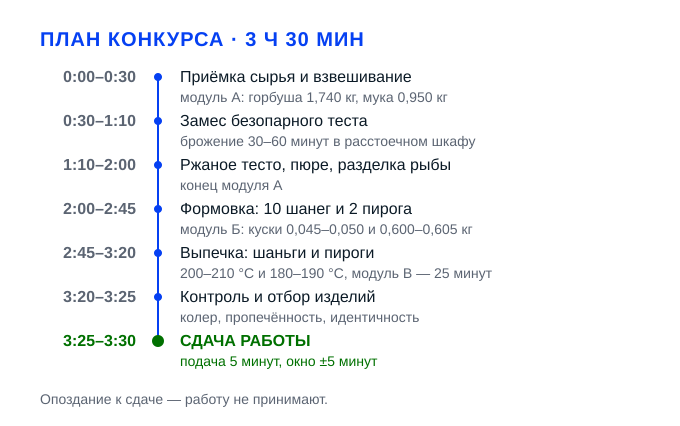
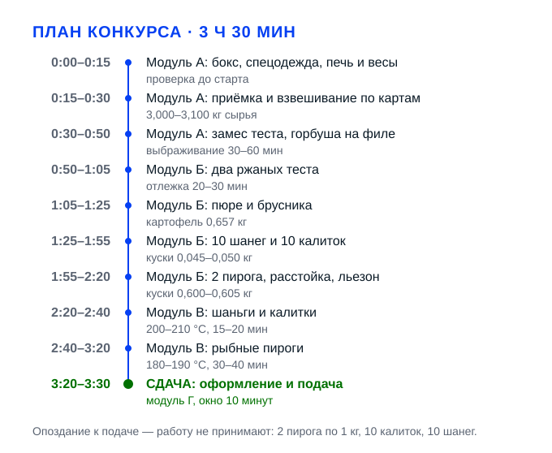
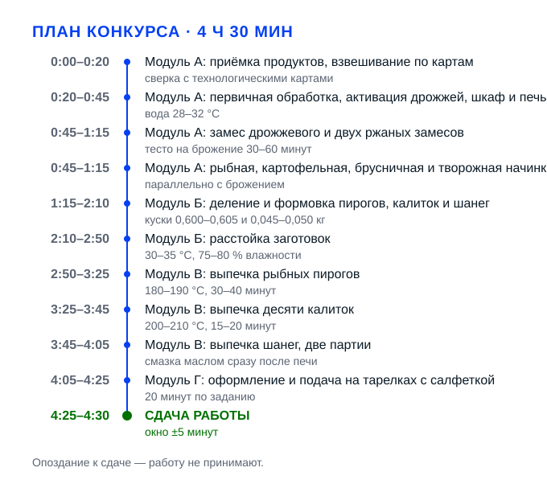

Повар региональной кухни (приготовление Коми-шаньга) (Р)
Задания ниже — официальные файлы «Абилимпикс» (источник: abilympics-russia.ru), разложенные по категориям. Решения написаны по тексту задания, регламенту и критериям оценки; в них указано, что именно проверяет эксперт.
Школьник
14–16 лет, базовый уровень заданияВыдержка из официального конкурсного задания: страницы, относящиеся к категории «Школьник» (стр. 5–9 источника).
Пошаговое решение
Категория «Школьники» на компетенции «Повар региональной кухни» — это 3,5 часа и два изделия коми-кухни: два рыбных пирога черинянь массой 1,0 кг каждый, где тесто и начинка идут в соотношении 1:1, и десять ржаных шанег с картофельной начинкой по 0,1 кг. Модули расписаны жёстко: два часа на подготовку сырья и тесто, час на формовку и расстойку, 25 минут на выпечку и всего 5 минут на подачу, поэтому тесто ставится в первую очередь. Тесто для пирога безопарное дрожжевое, из 0,950 кг муки высшего сорта и 0,014 кг прессованных дрожжей, с выбраживанием 30–60 минут; тесто для шанег пресное ржаное, на кефире, с отлёжкой 20–30 минут. Выпекают изделия при 180–190 °C и 200–210 °C, а подают на тарелках, покрытых бумажной салфеткой. Рыба идёт в пирог сырой, пюре лежит на лепёшке толщиной 1–2 мм, и любой недочёт в подготовке виден на разрезе.

Задача 1. Организовать бокс, принять сырьё и настроить оборудованиеМодуль А · 2 часа на подготовку и тесто
Модуль А по заданию занимает два часа и начинается не с замеса, а с получения продуктов со склада, их взвешивания и размещения в холодильнике с учётом товарного соседства, поэтому первые тридцать минут уходят не на готовку, а на порядок. В боксе должно стоять всё, что понадобится двум изделиям сразу: пшеничная и ржаная мука, прессованные дрожжи, кефир, картофель, горбуша весом 1,740 кг, маргарин, масло, яйца, соль, сахар и вода. Здесь же настраиваются расстоечный шкаф и конвекционная печь, потому что тесто и выпечка подчиняются своему расписанию и подгонять их под себя нельзя.
Действие 1.1. Войти в бокс по санитарным правилам
Шаг 1.1.1
Надеваем полный комплект: куртку или фартук поверх своей одежды, колпак или косынку, закрытую обувь на нескользящей подошве. Волосы убираем под головной убор целиком, вместе с висками и затылком, длинные пряди скалываем под тканью. Рукава подворачиваем выше локтя, потому что опущенный рукав тянется в тесто, цепляется за ручки расстоечного шкафа и собирает муку, которую потом не отличить от подпыла.
В разделе 2.3 задания санитария и гигиена вынесены отдельным требованием и к замесу теста, и к формовке, и проверяются они до старта, пока руки ещё свободны. Для пекаря это не формальность: ржаное тесто и рыбная начинка после формовки не проходят никакой обработки, поэтому волос или ворс в мякише — грубое нарушение, которое фиксируют независимо от вкуса изделий.
Отойдите к раковине и попросите волонтёра посмотреть со спины: волос не видно ни спереди, ни на затылке, куртка застёгнута и не топорщится. Рукав поднятой руки заканчивается выше локтя. Колпак держится, если наклонить голову вниз и слегка потрясти.
Частая ошибка — надеть колпак на макушку и оставить открытым затылок: спереди всё аккуратно, а нарушение видно именно тогда, когда участник наклоняется над тестом. Вторая — прийти в открытой обуви в расчёте надеть куртку потом: время уходит из модуля А, а замечание по спецодежде уже записано.
Эксперт осматривает участника до сигнала старта, отмечая полноту комплекта и чистоту, и возвращается к этому взглядом по ходу работы: мука на груди к концу второго часа считается так же, как отсутствие колпака на входе.
Шаг 1.1.2
Моем руки с мылом до запястий не меньше двадцати секунд, вытираем одноразовым полотенцем и повторяем это после каждой операции с сырой рыбой, после уборки и после того, как поправили колпак. Рукава при мытье подворачиваем, чтобы вода не текла по ткани на стол, а кран закрываем локтем, а не чистой ладонью. Снимаем часы, кольца, браслеты и длинные серьги, ногти коротко подстрижены, без лака и покрытия.
Правило «сырое, потом готовое» здесь работает буквально: после разделки горбуши руки несут на себе то, что не должно попасть в картофельное пюре, которое уже не будут варить повторно. Под украшением остаются загрязнения, которые обычным мытьём не смываются, а камень из кольца может уйти в тесто и обнаружиться экспертом на разрезе.
Руки сухие, украшений нет, полотенце использованное и сразу выброшено, а не положено на стол рядом с мукой. Проверить себя просто: если вы только что держали рыбу и тянетесь к скалке, руки моются заново, даже если внешне они чистые.
Протереть руки о фартук — самая распространённая ошибка: визуально руки сухие, но фартук становится переносчиком, и это видно по работе с тестом, которое темнеет от мокрых пятен. Вторая — помыть руки один раз в начале и считать вопрос закрытым.
Гигиену эксперт смотрит в течение всего конкурса, а не только на входе, и отдельно отмечает, меняются ли полотенца, моется ли инвентарь после контакта с сырой рыбой и не тянется ли участник к тесту руками, которыми только что держал рыбу.
Шаг 1.1.3
Разводим зоны до начала работы: слева от весов — сырьё и мерная посуда, в центре — стол для замеса, справа — разделочные доски и ножи. Доску для рыбы и доску для теста ставим врозь и не путаем даже на минуту, ножи для рыбы и для теста тоже разные. Рядом с рабочим местом ставим ведро для отходов и ёмкость для грязной посуды, чтобы не носить её через весь бокс.
Задание прямо требует делить тесто на куски через весы и держать чистоту между операциями, а на одном столе одновременно живут рыба, мука и готовое пюре. Разнесённые зоны экономят минуты: в модуле Б на формовку десяти шанег и двух пирогов отведён час, и каждая лишняя пробежка по боксу оттуда вычитается.
Проверьте, что доски подписаны или различаются цветом, ножи лежат каждый на своей доске, весы стоят на ровной поверхности и показывают ноль с пустой чашей, а мусорное ведро открывается одной рукой. Свободного места на столе должно хватать, чтобы положить противень, не сдвигая муку.
Свалить всё на одну доску и мыть её между рыбой и тестом — экономия, которая заканчивается замечанием по санитарии и посторонним запахом в шаньгах. Вторая ошибка — поставить весы у края стола: чаша с 600 граммами теста опрокидывается от случайного движения.
Эксперт обходит бокс в начале модуля А и смотрит именно на зонирование: подписанные доски и разложенный инвентарь читаются как понимание процесса, общая куча — как его отсутствие.
Действие 1.2. Принять и взвесить сырьё по технологическим картам
Шаг 1.2.1
Получаем продукты со склада и сверяем каждую позицию с технологическими картами. На два рыбных пирога по карте идёт мука пшеничная в/с 0,950 кг и 0,040 кг на подпыл, сахар 0,100 кг, маргарин 0,040 кг, соль 0,028 кг, яйцо 0,050 кг, дрожжи прессованные 0,014 кг, горбуша 1,740 кг, масло сливочное 0,040 кг, масло растительное 0,060 кг и вода 0,360–0,400 кг. На десять шанег нужно 0,224 кг ржаной муки и 0,030 кг на подпыл, маргарин 0,027 кг, кефир 0,147 кг, картофель 0,657 кг, молоко 0,109 кг, соль 0,005 кг, яйцо, сметана 0,027 кг для льезона, растительное масло 0,003 кг и сливочное 0,030 кг.
Итог по картам — 3,000–3,100 кг сырья на пироги и 1,280–1,320 кг на шаньги, и эти цифры не справочные: по ним считают выход. Ошибка в двадцать граммов муки на замесе возвращается на весах при делении теста на куски по 0,600–0,605 кг и на контроле массы готового изделия 1,000–1,005 кг, поэтому всё взвешивается сразу, а не потом.
Каждая строка перечня отмечена карандашом, расхождения записаны: чего нет, сколько нет, в каком виде пришло. Сумма всех позиций на подносе сходится с картой с точностью до грамма по весам, а не на глаз.
Начинать с замеса, не сверив перечень, — потом в середине работы выясняется, что не хватает кефира или дрожжей, а замена после старта идёт только через главного эксперта. Вторая ошибка — «досыпать на глаз»: недовес муки даёт слабое тесто, которое рвётся на защипе.
Приёмка — единственный момент, когда недостающее ещё можно получить, и эксперт смотрит, работает участник по карте или импровизирует с закрытыми глазами.
Шаг 1.2.2
Проверяем горбушу: 1,740 кг свежемороженой рыбы должны быть холодными, с ровной поверхностью без жёлтых пятен, без запаха старого жира и без следов повторной заморозки — рыхлого льда и подтёков. Тушку прощупываем: мясо плотное, ямка от пальца восстанавливается, а не остаётся впадиной. Если рыба пришла неразделанной, взвешиваем её после разморозки и сверяем с картой.
Из 1,740 кг сырья после разделки получается чистое филе с кожей без костей, и именно оно даёт начинку, при которой полуфабрикат одного пирога весит 1,100–1,130 кг при тесте 0,600–0,605 кг, то есть соотношение теста и начинки выходит примерно 1:1, как требует задание. Испорченная рыба не лечится ни солью, ни выпечкой, а запах в конвекционной печи остаётся на всех изделиях сразу.
Проверяем три признака: холод (не выше 4 °C на ощупь и по термометру), запах свежей рыбы без кислоты, упругость мяса. Сомнительную тушку не пускаем в дело, а сразу показываем эксперту до старта — после старта её просто не заменят.
Самая опасная ошибка — взять рыбу с признаками повторной заморозки и решить, что «в пироге не заметят»: в закрытом пироге запах сохраняется полностью, а на разрезе видно серое мясо. Вторая — размораживать рыбу в горячей воде: верхний слой варится, а внутри лёд.
Качество сырья эксперт фиксирует до старта по внешнему виду, цвету жабер и запаху, а после выпечки возвращается к вопросу, если готовое изделие пахнет не тем или начинка на разрезе серая.
Шаг 1.2.3
Проверяем муку и дрожжи: пшеничная и ржаная мука сухие, без комков и постороннего запаха; прессованные дрожжи 0,014 кг должны быть плотными, светло-кремовыми на срезе и крошиться, а не размазываться. Активируем дрожжи в небольшой части воды из общих 0,360–0,400 кг: берём воду температуры 28–30 °C, добавляем чайную ложку сахара из общих 0,100 кг, разводим дрожжи и оставляем на 10–15 минут под полотенцем.
Безопарный способ, прописанный в карте, держится на живых дрожжах: если они старые или залиты горячей водой, тесто не поднимется за 30–60 минут выбраживания, и весь график модуля А поедет. Активация заранее показывает, что дрожжи работают, и экономит сорок минут, которые иначе уйдут на ожидание у пустой кастрюли.
На поверхности появилась пенная шапка высотой в палец, вода помутнела и пахнет дрожжами, а не кислотой. Если через пятнадцать минут пены нет, дрожжи мёртвые: их меняют до замеса, пока тесто ещё не начато.
Залить дрожжи водой горячее 40 °C: белок сворачивается, пены не будет, и тесто останется плотным куском. Вторая ошибка — бросить дрожжи в соль: соль их угнетает, поэтому на этом шаге она в воду не идёт.
Эксперт может пройти мимо и посмотреть на стакан с дрожжами: пенная шапка и мутная вода читаются как осмысленная работа с сырьём, а сухие дрожжи, брошенные прямо в муку, — как спешка.
Шаг 1.2.4
Раскладываем продукты в холодильник с учётом товарного соседства: рыбу — на нижнюю полку в закрытом контейнере, яйца, молоко, кефир, сметану и сливочное масло — выше и отдельно, дрожжи — в стороне от морозилки. Картофель храним при комнатной температуре в тёмном месте, муку — в сухой ёмкости с крышкой. Маргарин и растительное масло держим под рукой, потому что они понадобятся на замесе и на смазке противней.
Товарное соседство в задании названо прямо в результате модуля А, и это не бюрократия: рыба на верхней полке капает на молоко, а молоко идёт в пюре, которое уже не кипятят. Кроме того, разложенные по местам продукты не приходится искать в модуле Б, где каждая минута из часа на формовку на счету.
Холодильник закрыт, рыба в закрытом контейнере на нижней полке, молочные продукты на средней, ничего не капает и не соприкасается, яйца отдельно от готовых продуктов. Термометр холодильника показывает не выше 4 °C, а на полке остаётся место для теста.
Поставить рыбу рядом с маслом и молоком «чтобы всё под рукой» — прямое нарушение, которое фиксируется, а заодно риск, что начинка наберёт рыбный запах. Вторая ошибка — оставить рыбу на столе на весь модуль А: к формовке она станет тёплой и потечёт.
Эксперт заглядывает в холодильник в начале модуля А: закрытая рыба на нижней полке и молочное выше читаются быстрее, чем любые объяснения про товарное соседство.
Действие 1.3. Настроить оборудование и расписать время
Шаг 1.3.1
Готовим расстоечный шкаф к работе: задаём 35–38 °C и влажность около 75–80%, ставим на дно противень с горячей водой, если шкаф без парогенератора. Проверяем фактическую температуру термометром, а не только по табло, и даём шкафу выйти на режим за 10–15 минут до того, как туда попадёт первая заготовка. Воду в противень доливаем по мере испарения, иначе к расстойке влажность упадёт.
Задание отдельным пунктом требует подготовить расстоечный шкаф и задать температуру с влажностью, потому что от этого зависит и брожение теста, и окончательная расстойка пирога. При 45 °C и выше дрожжи погибают, тесто оседает и получается плотным; при сухом воздухе на заготовках образуется корка, которая потом лопается на выпечке.
Термометр внутри показывает 35–38 °C, стенки запотевают, на стекле появляется конденсат, а на дне противня остаётся вода. Если стекло сухое, влажности мало: добавьте горячей воды и подождите пять минут, прежде чем ставить тесто.
Ставить тесто в холодный шкаф и надеяться, что оно поднимется по пути: брожение встанет и модуль А не уложится в два часа. Вторая ошибка — задрать температуру до 45–50 °C: дрожжи гибнут, тесто пахнет спиртом и не растёт.
Эксперт смотрит на табло и на термометр в момент закладки теста: настроенный шкаф — отдельный пункт модуля А, и проверяют его до того, как в нём появится первая заготовка.
Шаг 1.3.2
Настраиваем конвекционную печь под два разных режима: для рыбных пирогов 180–190 °C, для шанег 200–210 °C, вентилятор на средней скорости. Противни застилаем пергаментом или смазываем растительным маслом из общих 0,060 кг для пирогов и 0,003 кг для шанег, ставим рядом щётку, кисть и подпыл — 0,040 кг пшеничной и 0,030 кг ржаной муки. Тут же кладём таймер: у пирога и у шанег разное время, и держать его в голове бессмысленно.
Разница температур не случайна: пирог толщиной 1–1,5 см с сырой рыбой внутри должен прогреться до центра за 30–40 минут, и при 200 °C сверху он уже горит, а внутри ещё сырой. Шаньга толщиной 1–2 мм с готовым пюре, наоборот, печётся быстро и при 180 °C просто подсохнет, не дав румяного колера.
Печь вышла на режим: табло держит заданную температуру, а внутренний термометр не расходится с ним больше чем на 5 °C. Противни чистые, пергамент лежит ровно, без загибов у бортов, кисть и подпыл под рукой, таймер обнулён.
Печь без предварительного разогрева: первые десять минут температура ниже заданной, заготовки садятся, а корка на пироге получается бледной. Вторая ошибка — поставить пирог и шаньги на один режим, чтобы не переключать: шаньга при 180 °C выходит сухой, а пирог при 210 °C горит сверху, оставаясь сырым у начинки.
Эксперт проверяет температуру печи перед закладкой и потом смотрит на колер первых изделий: несоответствие режима видно сразу, ещё до того, как противень достанется из печи.
Шаг 1.3.3
Расписываем время на бумаге, а не в голове: 2 часа на модуль А (приёмка, замес, брожение дрожжевого теста, ржаное тесто, начало начинок), 1 час на модуль Б (формовка двух пирогов и десяти шанег, расстойка, начинки), 25 минут на выпечку и 5 минут на подачу — всего 3,5 часа. Обратный отсчёт ведём от момента сдачи, а не от старта, и закладываем 10–15 минут буфера на непредвиденное.
Время модулей в задании жёсткое: на подачу отведено 5 минут, а на всю работу 3,5 часа, и опоздание к сдаче обнуляет впечатление от самых аккуратных изделий. План нужен ещё и потому, что два теста идут параллельно: пока бродит дрожжевое, можно ставить картофель и замешивать ржаное.
На листе есть пять строк с временами и хотя бы три отметки по факту: во сколько поставлено тесто на брожение, во сколько сформован первый пирог, во сколько печь приняла противень. Сравнение плана с фактом показывает, где вы отстаёте.
Планировать «как пойдёт»: обычно это заканчивается тем, что пирог идёт в печь на двадцать минут позже, и выпечка накладывается на подачу. Вторая ошибка — не оставить буфер и рассчитывать время впритык.
Эксперт оценивает организацию работы: наличие плана и способность ему следовать видно по тому, насколько спокойно участник двигается по боксу к третьему часу.
Задача 2. Замесить безопарное дрожжевое тесто и подготовить его к разделкеМодуль А · замес и брожение, 30–60 минут
Тесто для чериняни по карте готовят безопарным способом: всё сырьё закладывается сразу, без опары, и это экономит время, но не прощает ошибок в температуре и порядке закладки. На две штуки идёт 0,950 кг пшеничной муки высшего сорта, 0,100 кг сахара, 0,040 кг маргарина, 0,028 кг соли, 0,050 кг яйца, 0,014 кг прессованных дрожжей, 0,040 кг сливочного масла и 0,360–0,400 кг воды. Замешанный полуфабрикат по карте выбраживает 30–60 минут, после чего его делят на куски 0,600–0,605 кг и оставляют на предварительную расстойку на 5–10 минут.
Действие 2.1. Соединить сырьё и замесить тесто
Шаг 2.1.1
В дежу или широкую кастрюлю наливаем воду из общих 0,360–0,400 кг, подогретую до 28–30 °C, и растворяем в ней сахар 0,100 кг и соль 0,028 кг. Размешиваем до полного исчезновения крупинок: соль тяжелее воды и оседает на дне, поэтому если её не растворить сейчас, часть теста останется пресной, а часть пересоленной. Воду берём на ощупь тёплую, но не горячую — палец терпит спокойно.
Безопарный способ означает, что дрожжи и соль встречаются в одной деже через минуту, а соль в высокой концентрации угнетает брожение. Растворённая заранее, она распределяется равномерно, и тесто поднимается за 30–60 минут, как записано в карте. Недосоленное тесто потом не исправить: соль, добавленная в готовый замес, разрывает клейковину и делает мякиш грубым.
Вода тёплая, на дне не видно крупинок, раствор прозрачный. Попробуйте каплю с ложки: вкус солёно-сладкий, ровный, без резкого удара соли в конце. Если соль ещё поскрипывает на дне, размешивайте дальше, пока крупинки не разойдутся полностью: в замесе их уже не раздавить.
Засыпать соль и сахар в горячую воду вместе с дрожжами: соль не успевает разойтись, а дрожжи от температуры гибнут, и тесто стоит колом сорок минут. Вторая ошибка — лить воду на глаз, без мерного стакана: 40 граммов разницы дают тесто, которое либо не собирается в шар, либо липнет к рукам.
Эксперт смотрит на порядок закладки в первые минуты модуля А: растворённая соль и отдельно активированные дрожжи — признак того, что участник работал по карте, а не высыпал всё сразу.
Шаг 2.1.2
Вводим активированные дрожжи вместе с водой, в которой они стояли, добавляем яйцо 0,050 кг и размягчённый маргарин 0,040 кг с сливочным маслом 0,040 кг. Маргарин и масло должны быть мягкими, как густая сметана: достаём их из холодильника заранее, а не топим на огне. Перемешиваем венчиком до однородной эмульсии, пока на поверхности не останется масляных островков.
Жир в тесте обволакивает частицы муки и делает мякиш нежнее, а корку — румянее, поэтому по карте жиры идут и в виде маргарина, и в виде сливочного масла. Но жир, добавленный до образования клейковины в большом количестве, мешает её развитию, поэтому в безопарном тесте его вводят в жидкую фазу и размешивают тщательно — так он распределяется по всему объёму, а не ложится слоем.
Смесь однородная, кремового цвета, без плёнок масла на стенках и без отдельных сгустков яйца. Дрожжи разошлись полностью, комков нет. Проведите ложкой по дну — она не должна тащить за собой масляные островки или комки яйца.
Растопить маргарин до горячего состояния и вылить в тесто: жир заваривает часть муки при последующем замесе, и тесто выходит тяжёлым, с плотными прослойками. Вторая ошибка — бросить яйцо, не размешав: белок тянется нитью и плохо вмешивается.
Эксперт обращает внимание на температуру жиров: мягкий, а не растопленный маргарин показывает, что участник понимает роль жира в тесте. Однородная жидкая фаза перед вводом муки — тот момент, который отличает работу по карте от «высыпал всё и перемешал».
Шаг 2.1.3
Всыпаем пшеничную муку 0,950 кг не сразу, а в три приёма, каждый раз перемешивая лопаткой до впитывания. Когда тесто перестаёт быть жидким, выкладываем его на стол, подпылённый мукой из 0,040 кг, и месим руками 10–15 минут: складываем край к центру, прижимаем основанием ладони, поворачиваем на четверть и повторяем. Готовое тесто должно стать гладким и перестать липнуть к рукам.
Муку в три приёма вводят, чтобы не засыпать её избыток: перебор даже в тридцать граммов делает тесто плотным, и оно плохо подходит при выбраживании 30–60 минут. Замес до гладкости развивает клейковину — именно она удержит газ от дрожжей и не даст пирогу расползтись на противне, когда внутри лежит почти килограмм влажной рыбы.
Тесто гладкое, эластичное, при нажатии пальцем медленно возвращается. Растяните небольшой кусочек между пальцами: он тянется в тонкую плёнку, сквозь которую просвечивает свет, и не рвётся сразу. Если плёнка рвётся сразу и рваными краями, месите ещё три-четыре минуты и повторите пробу.
Месить две минуты и остановиться, как только тесто собралось в шар: клейковина не развита, и при формовке края пирога расходятся по шву. Вторая ошибка — досыпать муку «пока не перестанет липнуть»: тесто получается крутым, изделие выходит плотным, как хлебная корка.
Эксперт проверяет тесто на эластичность: тянет небольшой кусочек между пальцами и смотрит, образуется ли тонкая плёнка. Он же отмечает, сколько муки ушло на подпыл: сухой стол и липкие руки — верный признак недомеса или перебора муки.
Шаг 2.1.4
Собираем тесто в шар, зачищаем стенки посуды лопаткой, чтобы не осталось присохших кусочков, и кладём шар в посуду с запасом по объёму — тесто вырастет в полтора-два раза. Накрываем полотенцем или плёнкой, не затягивая плотно, и проверяем температуру: она должна быть 26–28 °C. Если тесто вышло холоднее, посуду ставят в расстоечный шкаф, а не к батарее.
Брожение идёт с той скоростью, какую задаёт температура, и карта отводит на выбраживание 30–60 минут именно для тёплого теста. Холодное тесто подойдёт за полтора часа и сорвёт график модуля А, а горячее забродит кисло и даст запах спирта. Запас по объёму нужен, чтобы поднявшееся тесто не легло на полку шкафа и не прилипло к плёнке.
Термометр или палец показывает ровное тепло, шар гладкий, посуда не заполнена больше чем на треть. Плёнка накрывает, но не давит. Если тесто уже упирается в плёнку, переложите его в посуду больше: поднявшееся тесто прилипает к накрытию и рвётся при снятии.
Поставить тесто на работающую плиту или к горячей печи: снизу оно заваривается и покрывается коркой, а середина остаётся сырой. Вторая ошибка — накрыть плотной крышкой без зазора: конденсат капает обратно, и поверхность теста закисает.
Эксперт заглядывает в посуду с тестом через полчаса: ровный подъём и гладкая поверхность без трещин — результат правильной температуры и правильно накрытой посуды.
Действие 2.2. Выбраживание и обминка
Шаг 2.2.1
Ставим посуду с тестом в расстоечный шкаф при 35–38 °C и влажности 75–80% и засекаем время. Через 30 минут смотрим первый раз, дальше проверяем каждые 10 минут: тесто должно увеличиться в полтора-два раза, а на поверхности появляются натянутые пузыри. Шкаф не открываем без нужды, чтобы не выпускать тепло и пар. Первые тридцать минут не трогаем посуду вообще: любое движение её осаждает тесто, и подъём начинается заново.
В карте указано выбраживание в пределах 30–60 минут, и этот разброс как раз и есть поправка на состояние дрожжей и температуру. В расстоечном шкафу с влажностью тесто не заветривается, поэтому корка не образуется и потом не рвётся на выпечке, обнажая начинку.
Объём вырос примерно вдвое, тесто пружинит под пальцем, на стенках посуды видны следы подъёма. Если через сорок минут объём почти не изменился, проверьте температуру шкафа и состояние дрожжей. След от пальца на поднявшемся тесте расправляется не сразу, а на стенках видны полосы от подъёма.
Держать тесто в шкафу два часа «чтобы лучше подошло»: оно перекисает, пахнет спиртом, и пирог получается с кислым привкусом и осевшей серединой. Вторая ошибка — оставить тесто на столе без накрытия: сверху образуется сухая плёнка, которая пойдёт в мякиш комками.
Эксперт смотрит на тесто в момент обминки: перекисшее тесто оседает от прикосновения и тянется нитями, и это видно раньше, чем проявится на вкус. Он смотрит, не открывает ли участник шкаф каждые пять минут: перепады температуры и влажности видны по неровному подъёму.
Шаг 2.2.2
Делаем обминку: обминаем поднявшееся тесто кулаком или лопаткой, выпуская углекислый газ, складываем края к центру и переворачиваем шар швом вниз. Обминка занимает одну-две минуты, после неё тесто снова накрываем и оставляем до готовности, но уже не дольше пятнадцати-двадцати минут, если оно поднялось быстро. Давим не рвя: основание ладони идёт от центра к краям, тесто складывается, а не разрывается на куски.
За время брожения дрожжи накопили газ, и его избыток начинает угнетать брожение, а крупные пузыри потом дают неровный, пористый мякиш с разрывами. Обминка перераспределяет дрожжи и сахар по всему объёму, тесто становится однороднее по структуре — это особенно важно для пирога, который режут на порции и оценивают срез.
После обминки тесто заметно осело, стало плотнее и глаже, пузыри на поверхности исчезли. Через 15–20 минут оно снова начинает подниматься. Поверхность после обминки гладкая, без крупных пузырей, шар держится формы и не расплывается по столу.
Обмять тесто слишком жёстко и долго, разрывая клейковину: шар теряет упругость и расплывается. Вторая ошибка — не обминать вовсе, считая, что «так пышнее»: мякиш получается с крупными пустотами, а на разрезе пирога видны провалы.
Эксперт наблюдает за обминкой и оценивает, вернулось ли тесто к равномерной структуре: слишком долгое вымешивание после брожения он тоже замечает. Он отмечает и то, что участник не месит тесто после обминки лишние пять минут: перемятое тесто теряет упругость и плохо раскатывается.
Шаг 2.2.3
Определяем готовность теста руками и глазами: нажимаем пальцем — ямка восстанавливается медленно, но восстанавливается; тесто увеличилось в полтора-два раза; на разрыве видны тонкие стенки пор, а не плотная масса. Пахнет оно дрожжевым, чуть кисловатым, но без резкого спиртового запаха. Проверку делаем одним нажатием и одним разрывом с краю, чтобы не деформировать весь шар перед разделкой.
От готовности теста зависит и формовка, и вид готового пирога. Недобродившее тесто при выпечке рвётся по шву и даёт плотный мякиш, перекисшее — оседает и получается с закалом у начинки. По карте дальше идёт деление на куски 0,600–0,605 кг и предварительная расстойка 5–10 минут, и в это время тесто ещё немного подходит, поэтому брать его лучше чуть раньше, чем позже.
Ямка от пальца держится несколько секунд. Комок теста, растянутый в плёнку, не рвётся. Запах ровный дрожжевой, без кислоты и спирта. Если ямка не восстанавливается вовсе — тесто перекисло, если исчезает мгновенно — ещё не готово.
Ориентироваться только на время, не глядя на тесто: при тёплом шкафе оно готово к сороковой минуте, и ещё двадцать минут сделают его перекисшим. Вторая ошибка — проверять готовность, разрывая тесто в нескольких местах: шар деформируется, и куски потом плохо подкатываются.
Эксперт может попросить показать тесто на готовность и смотрит на поверхность и на срез: ровные мелкие поры — признак правильного выбраживания. Он смотрит на срез теста: ровные мелкие поры без крупных пустот говорят о правильном выбраживании, а рваные полости — о спешке.
Действие 2.3. Разделать тесто на куски и дать предварительную расстойку
Шаг 2.3.1
Выкладываем тесто на подпылённый стол, слегка обминаем и делим на весах на куски по 0,600–0,605 кг. Взвешиваем каждый кусок отдельно, отрезая или добавляя тесто, а не подравнивая «на глаз»: два пирога должны быть идентичными, потому что их сравнивают между собой. Из теста по карте выходит больше, чем нужно на две заготовки, и остаток в пирог не впихивается.
По карте кусок 0,600–0,605 кг плюс рыба даёт полуфабрикат 1,100–1,130 кг и выход готового изделия 1,000–1,005 кг, то есть соотношение теста и начинки выходит примерно 1:1, как требует задание. Если кусок выйдет тяжелее, тесто перевесит начинку, и в разрезе будет толстая полоса мякиша вместо рыбы; если легче — рыба прорвёт тонкое дно.
Весы показывают 0,600–0,605 кг на каждом куске, разница между двумя кусками не больше пяти граммов. Тесто на столе подпылено, но не засыпано мукой слоем. Тесто на столе подпылено, но не засыпано мукой слоем, а нож или скребок лежит рядом: рвать тесто руками на весах нельзя.
Делить на два куска «примерно поровну»: разница в пятьдесят граммов уже видна в готовых изделиях, а один пирог получается заметно толще. Вторая ошибка — дорезать лишнее тесто, отрывая его от куска: край рвётся, и при формовке шов расходится именно по этому месту.
Эксперт смотрит, взвешивается ли каждый кусок на весах, и отдельно отмечает остаток теста: аккуратно отложенный в сторону кусок читается как понимание карты, а тесто, втиснутое в пирог сверх веса, — как погоня за размером.
Шаг 2.3.2
Подкатываем каждый кусок в шар: кладём на стол, накрываем ладонью и двигаем по кругу с лёгким нажимом, пока поверхность не натянется и не станет гладкой. Шов собираем снизу, в центр, и защипываем. Работаем без лишней муки, только чуть подпыляя ладони. Если шар не хочет натягиваться, сбрызните ладонь водой: тесто пойдёт под рукой мягче, чем под слоем муки.
Подкатка создаёт натянутую корочку, которая удерживает газ и не даёт заготовке расплыться на предварительной расстойке. Гладкий верх потом становится глянцевой поверхностью пирога — в характеристике изделия прямо сказано, что поверхность должна быть блестящей, а колер от золотисто-коричневого до коричневого.
Шар круглый, поверхность гладкая и натянутая, шов снизу закрыт. При нажатии шар пружинит и не липнет к ладони. Проведите пальцем по поверхности: она должна быть прохладной и шелковистой, без мучной пыли и трещин.
Подкатывать на большом количестве муки: поверхность не натягивается, а скользит, и при раскатке тесто рвётся по краям. Вторая ошибка — оставить шов сверху: при расстойке он расходится и на выпечке виден грубый рубец.
Эксперт смотрит на поверхность заготовок: гладкий натянутый шар с закрытым швом говорит о технике, бугристый и мучнистый — о спешке. Он смотрит на стол: горка муки рядом с заготовками значит, что тесто подкатывали в муке, а не на натянутой поверхности.
Шаг 2.3.3
Кладём шары на противень или на стол, накрываем плёнкой или полотенцем и оставляем на предварительную расстойку на 5–10 минут, как указано в карте. За это время тесто расслабляется после подкатки и становится податливым для раскатки: оно раскатывается ровно, не стягивается назад и не рвётся. За эту паузу успеваете вымыть нож и доску после рыбы — как раз то время, которое иначе уходит на ожидание.
Только что подкатанный шар напряжён, и если начать раскатывать сразу, лепёшка сжимается обратно и получается неровной по толщине, а при формовке края лопаются. Пять-десять минут отдыха дают ровный пласт толщиной 1–1,5 см, который потом заворачивается без разрывов и держит рыбную начинку.
Шар увеличился совсем немного, но при нажатии стал мягче и податливее. Раскатайте край — тесто тянется, а не стягивается назад. Заготовка при нажатии мягкая, но держит форму и не расплывается в лепёшку.
Раскатывать сразу после подкатки: лепёшка стягивается, и приходится давить сильнее, отчего середина становится тонкой, а края толстыми. Вторая ошибка — передержать заготовки, занявшись начинкой: они перестоятся и при выпечке осядут.
Эксперт оценивает ритм: пока шары расстаиваются, участник занимается рыбой, а не стоит над ними — это и есть правильная организация модуля Б. Он видит, что пауза использована с толком: к моменту раскатки у участника уже готова начинка и подпыл.
Задача 3. Приготовить рыбную и картофельную начинкиМодуль Б · начинки, час на формовку вместе с расстойкой
Модуль Б по заданию даёт две готовые тестовые заготовки рыбного пирога, десять заготовок ржаной шаньги и две начинки — рыбную и картофельную. Рыба идёт в пирог сырой, поэтому от разделки зависит и вкус, и безопасность: 1,740 кг свежемороженой горбуши нужно превратить в филе с кожей без костей, а картофель 0,657 кг — в густое пюре с молоком 0,109 кг, которое не вытечет из лепёшки толщиной 1–2 мм. Обе начинки делаются до формовки: тесто не ждёт, а расстойка и выпечка идут по своему расписанию.
Действие 3.1. Разделать горбушу на филе с кожей без костей
Шаг 3.1.1
Размораживаем горбушу правильно: перекладываем её из морозилки в холодильник при 4 °C на 8–10 часов или, если время поджимает, кладём тушку в закрытом пакете в холодную воду, меняя её каждые полчаса. Размороженная рыба должна гнуться, а не хрустеть, и не иметь тёплых участков у позвоночника. Размораживаем столько, сколько нужно на две штуки, остальное держим в холоде.
По карте горбуша идёт свежемороженой, то есть до разделки её надо привести в рабочее состояние, не потеряв сок. Медленная разморозка сохраняет влагу в мясе, и начинка остаётся сочной после 30–40 минут выпечки. Быстрая в горячей воде вымывает сок, мясо становится сухим и волокнистым, а в закрытом пироге это особенно заметно на разрезе.
Тушка гнётся в руках, при нажатии мясо пружинит и не выделяет воду, температура в толще не выше 4 °C. Плавники и кожа без ледяной корки, брюшко не размякло, у позвоночника нет твёрдого холодного участка: его проверяют пальцем, потому что именно там лёд держится дольше всего.
Размораживать в горячей воде: верхний слой белеет и варится, внутри остаётся лёд, и при разделке филе рвётся по границе этих слоёв. Вторая ошибка — оставить рыбу на столе на два часа: к разделке она тёплая, а начинка получает лишнюю влагу и запах.
Эксперт смотрит на состояние рыбы при разделке и на то, где она размораживалась: ровное упругое филе без белых варёных участков говорит о медленной разморозке в холоде, а рыхлое мясо с мутным соком — о воде из-под крана.
Шаг 3.1.2
Разделываем тушку: срезаем голову за жаберной крышкой, подрезаем плавники, делаем разрез вдоль спины от головы до хвоста и ведём нож вдоль хребта, отделяя филе. Снимаем второе филе так же, стараясь не резать мясо на куски. Кожу оставляем: по карте в пирог идёт филе с кожей без костей, и именно кожа держит пласт при формовке. Нож держим под небольшим углом к хребту и ведём длинным движением, а не пилим тушку взад-вперёд.
Пласт филе с кожей удобно укладывать на лепёшку целиком: он не разваливается, не вытекает соком и даёт ровный срез при нарезке пирога на порции. Карта прямо указывает филе с кожей без костей, а соотношение теста и начинки 1:1 требует, чтобы начинка была плотной, а не рыхлой массой из обрезков.
Получилось два ровных пласта, на мясе не видно следов раздавленных внутренностей, кожа целая, без порезов. Пласт ложится на доску без волн, толщина одинаковая от головы к хвосту, обрезки и хребет отложены отдельно, а не смешаны с филе.
Снимать филе, разрезая тушку поперёк на куски «так быстрее»: начинка получается из разных кусочков, при формовке между ними остаются пустоты, и пирог на разрезе выглядит неоднородным. Вторая ошибка — снимать кожу: пласт рвётся, и сок вытекает на тесто.
Эксперт осматривает разделанную рыбу и оценивает чистоту работы: целые пласты и аккуратные обрезки против мелких кусочков и мяса, размазанного по доске.
Шаг 3.1.3
Зачищаем филе: на ощупь проходим по всей поверхности и пинцетом вытаскиваем мелкие кости, подрезаем тёмные участки по бокам от позвоночника, удаляем плёнки. Затем нарезаем пласт на полосы шириной 2–3 см, чтобы рыба легла на лепёшку ровным слоем без горбов и провалов. Режем поперёк волокон: так начинка не расползается на отдельные волокна при нарезке готового пирога.
В характеристике изделия сказано, что подаётся пирог, который едят и режут, а любая оставленная кость — это и травма для того, кто пробует, и грубая ошибка в оценке. Тёмное мясо даёт горьковатый привкус и серый цвет начинки, поэтому его срезают, а не маскируют специями.
Проведите пальцем по филе в обоих направлениях: костей нет, плёнка не тянется. Полосы одинаковой ширины, тёмных участков не осталось, а на доске под филе нет лужицы сока. Особенно внимательно проверьте участок у основания плавников — там кости сидят глубже всего.
Надеяться, что «мелкие кости размягчатся при выпечке»: за тридцать-сорок минут в тесте они не растворяются. Вторая ошибка — оставить тёмное мясо, решив, что в пироге его не видно: на разрезе полоса серого цвета заметна сразу.
Эксперт может провести рукой по начинке перед формовкой: отсутствие костей он проверяет на ощупь, а не на слово, и отдельно смотрит на цвет мяса — серые участки у хребта видно ещё до выпечки.
Шаг 3.1.4
Солим начинку и убираем её в холод: посыпаем филе солью тонким слоем, даём постоять 5–7 минут и перекладываем в закрытый контейнер на нижнюю полку холодильника. Начинка не должна стоять на столе, пока формуются шаньги: её берут порциями по мере формования двух пирогов. Солить удобно через мелкое сито — так не остаётся солёных комков на одном участке.
Соль, положенная заранее, успевает впитаться, и рыба держит сок, а не отдаёт его в тесто во время выпечки — иначе дно пирога становится мокрым и не пропекается. Карта требует солить рыбу при формовке, поэтому начинку солят умеренно и один раз: досол на лепёшке уже не исправить.
Филе блестит, но не плавает в рассоле, на дне контейнера нет лужицы. На вкус край кусочка солёный ровно, без резкости, соль легла по всей поверхности, а не только по краям. Контейнер закрыт и стоит на нижней полке, а не на столе.
Насолить начинку с запасом в расчёте на тесто: пересол не уходит при выпечке и перебивает вкус рыбы. Вторая ошибка — оставить рыбу на столе до формовки: к моменту укладки она тёплая, течёт и тянет за собой тесто. Третья — солить уже на лепёшке, когда неровность распределения исправить невозможно.
Эксперт проверяет, где стоит начинка в момент работы с шаньгами, а также чистоту контейнера и доски, на которой разделывали рыбу: соседство сырой рыбы с тестом он отмечает отдельно.
Действие 3.2. Сварить картофель и приготовить пюре для шанег
Шаг 3.2.1
Картофель 0,657 кг моем щёткой, чистим тонким слоем, глазки и позеленевшие участки вырезаем полностью. Режем кусками примерно одного размера, по 3–4 см, чтобы сварились одновременно, и сразу кладём в кастрюлю с холодной водой, чтобы не темнел. Воды наливаем на два пальца выше картофеля, а очистки убираем в ведро сразу, чтобы не занимали рабочий стол.
Ровная нарезка — это ровная готовность: крупный кусок останется сырым в середине, пока мелкий уже разварился в кашу. Картофель по карте идёт 0,657 кг на десять шанег, и из него получается начинка для заготовок массой 0,110–0,115 кг каждая, поэтому важно не потерять вес на очистках и не доварить его в воду.
Куски одинаковой величины, вода в кастрюле чистая, картофель полностью покрыт водой на два пальца. Позеленевших и проросших участков не осталось, глазков нет, а кожура снята тонко — картофель не обрезан наполовину.
Нарезать как получится и варить до «когда-нибудь»: мелкие куски развариваются в пюре раньше, чем крупные дойдут, и начинка становится водянистой. Вторая ошибка — чистить впрок и держать картофель в воде час: часть крахмала и вкуса уходит в воду.
Эксперт смотрит на первичную обработку овощей: чистота, ровная нарезка и отсутствие отходов с зеленью входят в оценку подготовки сырья, а количество очисток показывает, насколько тонко снята кожура.
Шаг 3.2.2
Ставим кастрюлю на сильный огонь, доводим до кипения, солим воду и убавляем до слабого кипения. Варим 20–25 минут: картофель готов, когда нож входит в кусок без усилия и легко выходит, а кусок при этом не разваливается в кашу. Отвар сливаем полностью, кастрюлю возвращаем на выключенную плиту на минуту, чтобы остатки влаги испарились, и только после этого начинаем толочь.
Влажность пюре решает судьбу шаньги: на лепёшку толщиной 1–2 мм кладут пюре, и если в нём останется лишняя вода, тесто под начинкой размокнет и при выпечке порвётся. Сушка на плите после слива отвара убирает именно ту воду, которая иначе окажется в начинке.
Нож входит свободно, кусок держит форму, отвар слит до последней ложки, на дне кастрюли нет жидкости. Картофель горячий, пар идёт, а на стенках нет присохшей корочки, которая потом пойдёт комками в пюре.
Варить до полного разваривания, чтобы «легче было толочь»: пюре получается клейким и водянистым. Вторая ошибка — слить отвар наполовину и растолочь вместе с ним: начинка течёт на противень через край лепёшки.
Эксперт проверяет готовность картофеля ножом и смотрит, слит ли отвар полностью: водянистое пюре видно уже на формовке, когда начинка расползается по лепёшке и тесто под ней темнеет.
Шаг 3.2.3
Готовим пюре: молоко 0,109 кг подогреваем почти до кипения и вливаем в горячий картофель, добавляем соль 0,005 кг и толчём до однородности, затем растираем до гладкости. Готовое пюре остужаем до 30–40 °C, накрыв, чтобы не образовалась корка, и держим в закрытой посуде до формовки шанег. Молоко вливаем частями, вмешивая каждую порцию, иначе пюре пойдёт комками.
Горячее молоко не даёт пюре посереть и сохраняет вкус, а растирание до гладкости убирает комки, которые потом торчат из начинки и рвут тонкое тесто. Остужать нужно до тёплого состояния: на горячую начинку тесто реагирует мгновенным размягчением, и лепёшка теряет форму ещё до противня.
Пюре однородное, без комков и волокон, держится на ложке горкой и не стекает струёй. Температура тёплая, рука терпит спокойно, поверхность гладкая, без серого оттенка и без подсохшей корочки. Проверьте ложкой у стенки: пюре не расслаивается на жидкость и гущу.
Влить холодное молоко в горячий картофель: пюре сереет и становится клейким. Вторая ошибка — сделать пюре жидким, «чтобы легче намазывать»: на шаньге оно вскипит и вытечет на противень, а начинки останется только пятно.
Эксперт смотрит на консистенцию начинки и на её температуру: густое, гладкое, тёплое пюре — признак того, что шаньга получится ровной и с чистой начинкой.
Задача 4. Сформовать два рыбных пирога и десять шанег, поставить на расстойкуМодуль Б · 10 заготовок шанег и 2 заготовки пирога
К концу модуля Б на противне должно лежать ровно то, что перечислено в результате: две тестовые заготовки рыбного пирога и десять тестовых заготовок ржаной шаньги. Пирог раскатывается в овал толщиной 1–1,5 см из куска 0,600–0,605 кг, рыба кладётся сырой и слегка подсаливается, края заворачиваются. Шаньга собирается из ржаного пресного теста: куски по 0,045–0,050 кг, лепёшка толщиной 1–2 мм, оформленный край, пюре на середину и льезон из яйца со сметаной 0,027 кг. Дальше пирог идёт на окончательную расстойку, а шаньги — сразу в печь, потому что тесто у них пресное.
Действие 4.1. Замесить пресное ржаное тесто для шанег
Шаг 4.1.1
В миску наливаем кефир 0,147 кг комнатной температуры, добавляем соль 0,005 кг и размягчённый маргарин 0,027 кг, размешиваем венчиком до однородности. Если кефир из холодильника, отогреваем его в тёплой воде прямо в закрытой бутылке: холодный кефир плохо соединяется с жиром и тесто получается с крупинками. Миску ставим на влажное полотенце: кефирная смесь расплёскивается от резкого движения, а мука рядом уже отвешена.
Ржаное тесто по карте пресное, без дрожжей, и поднимается оно не за счёт газа, а за счёт структуры: жир и кефир делают его пластичным, чтобы лепёшка толщиной 1–2 мм не рвалась при раскатке. Соль в таком тесте — единственный источник вкуса самой лепёшки, потому что начинка сладковатая от молока.
Смесь однородная, кремового цвета, соль разошлась, комков маргарина нет. На стенках миски не остаётся жирных разводов, а кефир не свернулся хлопьями. Проверьте ложкой на дне: если чувствуются крупинки соли, размешайте ещё раз, иначе они попадут в тесто и дадут солёное пятно в готовой шаньге.
Растопить маргарин в горячем кефире: жир выйдет на поверхность плёнкой, и тесто будет слоиться при раскатке. Вторая ошибка — сыпать соль прямо в муку на следующем шаге: крупинки не разойдутся, и в готовой шаньге попадётся солёное пятно.
Эксперт смотрит на порядок работы с пресным тестом: однородная жидкая основа перед мукой — залог ровной лепёшки без трещин. Он смотрит и на посуду: чистая миска без следов старого теста входит в санитарную оценку модуля.
Шаг 4.1.2
Всыпаем ржаную муку 0,224 кг в два приёма, перемешивая ложкой, затем выкладываем тесто на стол, подпылённый ржаной мукой из 0,030 кг, и собираем в шар. Месим недолго, две-три минуты: ржаное тесто не любит долгой работы, от неё оно становится липким. Консистенция должна быть густой, как у плотного печенья, но тесто должно лепиться в шар. Если тесто крошится и не собирается в шар, добавьте столовую ложку кефира, а не воду: вода делает ржаное тесто клейким и тягучим.
В карте прямо сказано, что замешивают пресное ржаное тесто густой консистенции, и это ключевое требование: жидкое тесто не раскатать в пласт 1–2 мм, оно прилипает к скалке и рвётся. Ржаная мука впитывает воду медленнее пшеничной, поэтому тесту нужно время, чтобы мука разошлась, и его дают на отлёжке.
Тесто собралось в шар, не липнет к ладоням, при нажатии пальцем остаётся неглубокая ямка. На срезе оно однородное, без сухих участков муки и без блеска от лишнего жира. Скатайте из горсти шарик: он должен держать форму и не расползаться под собственным весом.
Доливать кефир, потому что тесто кажется сухим: получается липкая масса, которая не раскатывается и забивает скалку. Вторая ошибка — месить пять-семь минут «до гладкости» по привычке от пшеничного теста: ржаное от этого становится клейким.
Эксперт проверяет тесто на ощупь и смотрит, сколько ржаной муки ушло на подпыл: стол должен быть подпылён, но не засыпан. Он же оценивает, не осталось ли на столе сухой муки, которую потом незаметно стряхнут в тесто.
Шаг 4.1.3
Накрываем тесто плёнкой или миской и даём отлежаться 20–30 минут, как указано в карте. За это время занимаемся рыбой или пюре, а не стоим над миской. Готовое к работе тесто слегка темнеет и становится более гладким на ощупь, а при раскатке не тянется назад. Плёнку снимаем только перед раскаткой: пока формуем шаньги, остаток теста остаётся под ней, иначе он заветривается и трескается по краю.
Отлёжка нужна, чтобы ржаная мука набухла и тесто стало пластичным: только тогда из него получается лепёшка 1–2 мм, которую можно защипать по краю и не разорвать при переносе на противень. Двадцать-тридцать минут — это ещё и технологическое окно, в которое укладываются начинки.
Тесто не липнет к пальцам, при нажатии остаётся ровная ямка, кусочек, отщипнутый с края, раскатывается без разрывов. Под плёнкой нет капель конденсата, которые падают обратно на тесто. Отлёжку считаем по часам: двадцать минут — минимум, тридцать — спокойный запас, дальше тесто начинает подсыхать.
Начать раскатку сразу после замеса: тесто рвётся по краям, а лепёшка стягивается обратно. Вторая ошибка — оставить тесто открытым: сверху образуется сухая корка, которая пойдёт в шаньгу плотными полосами.
Эксперт смотрит, накрыто ли тесто и как оно выглядит к моменту раскатки: гладкое, слегка потемневшее тесто говорит о том, что пауза выдержана. Он заглядывает под плёнку: заветренная корка на тесте заметна сразу и потом даёт полосы в шаньге.
Действие 4.2. Сформовать десять шанег с картофельной начинкой
Шаг 4.2.1
Делим тесто на десять частей по 0,045–0,050 кг, каждую взвешиваем на весах и подкатываем в шарик. Считаем вслух или раскладываем шарики по десять в ряд, чтобы не потерять счёт: на противне должно оказаться ровно десять заготовок, и лишняя или недостающая сразу видна эксперту. Весы обнуляем после каждого шарика и не смахиваем муку с чаши в тесто: подпыл на чаше искажает вес на несколько граммов.
В карте указан кусок 0,0450–0,050 кг, и при начинке это даёт массу полуфабриката 0,110–0,115 кг, а после выпечки — выход 0,100–0,105 кг, то есть изделие массой 0,1 кг, как требует задание. Идентичность изделий входит в критерии подачи: десять шанег должны быть одинаковыми, а разница в весе теста видна по толщине лепёшки.
На столе десять шариков, каждый на весах показывает 0,045–0,050 кг, разброс между крайними не больше пяти граммов. Шарики одинакового размера на глаз и на ощупь. Считайте шарики вслух при раскладке: ошибка в счёте на десять изделий — самая обидная потеря баллов из всех возможных.
Делить на глаз, «чтобы быстрее»: семь шанег выходят крупными, три — мелкими, и на подаче это выглядит как разная выпечка. Вторая ошибка — подкатывать на сухом столе без подпыла: шарики трескаются по поверхности и рвутся при раскатке.
Эксперт пересчитывает заготовки и сравнивает их размер: весы в работе и ровный ряд шариков — прямой признак работы по карте. Он пересчитывает ряд дважды — на столе и после укладки на противень.
Шаг 4.2.2
Раскатываем каждый шарик в лепёшку толщиной 1–2 мм и диаметром примерно 10–12 см, подпыляя скалку и стол ржаной мукой. Раскатываем от середины к краям, поворачивая лепёшку на четверть после каждого движения, чтобы толщина была одинаковой. Тонкая середина и толстый край — самая частая причина сырого теста под начинкой. Скалку держим за ручки и ведём от центра, не наезжая на край: край раскатанной лепёшки тоньше середины и рвётся первым.
Карта задаёт толщину 1–2 мм, и это оптимум: толще — тесто не пропечётся за 15–20 минут при 200–210 °C, тоньше — лепёшка ломается при переносе и рвётся под весом пюре. Ровная толщина нужна ещё и потому, что край потом защипывается: на нём должно хватать теста на бортик.
Лепёшка просвечивает на свет ровно, без тёмных пятен, край и середина одинаковой толщины. Приподнятая за край лепёшка не рвётся и не провисает бесформенно. Сравните две лепёшки между собой: они должны совпадать по диаметру с точностью до сантиметра.
Раскатать толстую лепёшку в расчёте на «пышность»: под начинкой остаётся сырой слой, и шаньга выходит с закалом. Вторая ошибка — раскатывать в одном направлении: получается овал с толстыми краями, и шанега выходит неровной.
Эксперт смотрит на толщину лепёшек и на подпыл: ровные, одинаковые кружки с чистым краем говорят о технике раскатки. Он смотрит и на скалку: чистая, подпылённая, без налипшего теста на ручках.
Шаг 4.2.3
Оформляем край: защипываем его по кругу мелкими движениями, поднимая бортик на 3–5 мм, как у ватрушки. На середину кладём картофельное пюре ложкой, разравниваем так, чтобы оно дошло до бортика, но не легло на него. Ориентир по весу: заготовка с начинкой должна весить 0,110–0,115 кг. Ложку с пюре держим близко к лепёшке и распределяем круговыми движениями, а не растягиваем начинку по столу.
Бортик держит начинку и не даёт пюре вытечь на противень: без него начинка растекается, подгорает по краю и портит внешний вид изделия, а в характеристике указана круглая форма и блестящая поверхность. Ровный слой пюре нужен для равномерного прогрева: горка в центре останется холодной, пока край уже румянится.
Заготовка весит 0,110–0,115 кг, бортик поднят по всему кругу, начинка не выходит за него, поверхность пюре ровная. Все десять заготовок одинакового диаметра. Проверьте одну заготовку на весах, а остальные выравнивайте по ней на глаз: так ряд получится ровным.
Положить пюре с горкой: центр не пропекается, а при наклоне противня начинка съезжает. Вторая ошибка — не делать бортик: пюре растекается по противню, пригорает, и шанега остаётся с пустой серединой. Третья ошибка — начинки слишком мало: середина шаньги остаётся пустым тестом, и изделие выглядит как лепёшка.
Эксперт осматривает ряд заготовок сверху: одинаковый диаметр, ровный бортик и аккуратная начинка читаются сразу, до выпечки. Он смотрит на начинку у бортика: она не должна на него наезжать даже на сантиметр.
Шаг 4.2.4
Готовим льезон: разбиваем одно яйцо, добавляем сметану 0,027 кг и размешиваем до однородности, процеживаем через ситечко. Смазываем бортики и открытую часть теста мягкой кистью тонким слоем, не задевая пюре, и сразу ставим шаньги на противень, смазанный растительным маслом из 0,003 кг. Кисть держим почти плашмя, чтобы не сдвинуть бортик, и промываем её, если льезон начал подсыхать на ворсе.
Льезон даёт ту самую блестящую поверхность и золотисто-коричневый колер, которые прямо названы в характеристике изделия. Сметана в льезоне работает как добавка жира: она не даёт яичному белку схватиться слишком быстро и покрыться тёмными пятнами раньше, чем пропечётся тесто.
Льезон однородный, без сгустков и пузырей, кисть оставляет ровную тонкую плёнку, а не лужицы на тесте. Начинка не смазана, край блестит. После смазки поверхность блестит ровно, без пропусков и без луж: по этому блеску потом и читается колер.
Смазать льезоном и начинку: пюре темнеет и покрывается грубой коркой. Вторая ошибка — налить льезон ложкой: он стекает на противень и пригорает, а тесто под ним остаётся сырым. Третья ошибка — смазать шаньги за час до печи: льезон подсыхает плёнкой и блеска уже не даёт.
Эксперт смотрит на блеск и на аккуратность смазки: тонкий ровный слой без потёков — признак работы кистью, а не ложкой. Он отмечает, смазана ли начинка: пюре должно остаться матовым, а блестеть должен только край.
Действие 4.3. Сформовать два рыбных пирога
Шаг 4.3.1
Берём отдохнувший шар теста 0,600–0,605 кг и раскатываем в лепёшку овальной формы толщиной 1–1,5 см, как указано в карте. Раскатываем от середины к краям, подпыляя стол пшеничной мукой из 0,040 кг, и следим, чтобы овал был ровным: длина примерно в полтора раза больше ширины. Лепёшку при раскатке приподнимаем и поворачиваем, а не тянем по столу: иначе она деформируется и прилипает к подпылу.
Толщина 1–1,5 см даёт пирогу шанс пропечься за 30–40 минут при 180–190 °C, несмотря на сырую рыбу внутри. Более тонкий пласт рвётся под весом начинки и отдаёт сок, более толстый остаётся сырым у начинки и даёт тяжёлый мякиш. Овальная форма прямо названа в характеристике изделия, поэтому её и формируем сразу.
Толщина лепёшки одинаковая по всей площади, измеряется линейкой или на глаз по срезу у края. Овал ровный, без утолщений, лепёшка не стягивается обратно и не липнет к скалке. Проверьте толщину линейкой в трёх точках: у середины и у обоих краёв овала.
Раскатать слишком тонко, чтобы «больше начинки влезло»: при переносе тесто рвётся, и сок вытекает на противень. Вторая ошибка — раскатывать круг, а потом растягивать его в овал руками: края получаются разной толщины, и шов расходится.
Эксперт смотрит на толщину и форму заготовки: ровный овал одинаковой толщины — база для одинакового пропекания двух изделий. Он смотрит, не осталось ли на овале вмятин от скалки: после выпечки они видны на поверхности.
Шаг 4.3.2
Перекладываем лепёшку на противень, смазанный растительным маслом из 0,060 кг, и выкладываем на неё рыбную начинку по всей площади, отступив от края 2–3 см для шва. Рыба идёт сырой, пластами, ровным слоем: соотношение теста и начинки по заданию 1:1, то есть на 0,600–0,605 кг теста приходится примерно столько же подготовленного филе. Куски рыбы укладываем внахлёст на пару сантиметров, чтобы после выпечки не осталось пустых участков с одним тестом.
Отступ от края нужен, чтобы завернуть и защипать тесто без начинки в шве: рыба в шве не даёт ему склеиться, и пирог раскрывается на выпечке. Ровный слой рыбы — это одинаковый срез при нарезке на порции, а именно по срезу и по соотношению теста и начинки оценивают, соблюдена ли карта.
Начинка лежит ровным слоем, не наезжает на отступ, между кусками нет пустых провалов. По весу начинка и тесто сопоставимы, а край лепёшки остаётся чистым и сухим по всему периметру. Проверьте, что между начинкой и краем лепёшки по всему периметру остаётся полоса чистого теста шириной 2–3 см.
Положить рыбу с горкой в центр: пирог получается брюхом, середина не пропекается, а края остаются с пустым тестом. Вторая ошибка — выложить начинку до самого края: защип не держится, и на выпечке пирог расходится по шву.
Эксперт смотрит на распределение начинки и на чистый край: ровный слой и сухой отступ — признаки того, что участник понимает, как формируется шов. Он проверяет отступ по всему периметру, а не только с той стороны, которая видна ему с рабочего места.
Шаг 4.3.3
Посыпаем рыбу солью тонким слоем и защипываем края: поднимаем оба края лепёшки к центру и соединяем их плотным жгутом, прокатывая большим и указательным пальцами от середины к концам. Из обрезков теста делаем простое украшение — косичку или жгутики по верху, — затем прокалываем верх пирога в двух-трёх местах и смазываем льезоном. Льезоном смазываем уже защипанный пирог, а не до защипа: иначе тесто скользит под пальцами и шов расходится.
Защип от середины к концам выгоняет воздух и не оставляет пустот, из-за которых пирог вспучивается и рвётся. Проколы выпускают пар: без них рыбный сок и воздух разрывают верхний слой, и начинка оказывается снаружи. Украшение из остатков теста — это и есть тот творческий подход, который допускает модуль Г.
Шов плотный, одинаковый по всей длине, при нажатии пальцем не расходится. Проколы есть, украшение держится на поверхности, льезон лёг ровно и не потёк по бокам. Поднимите пирог на ладони: шов держит, начинка не проступает, украшение не отваливается.
Защипать, защипывая в одну сторону: на другом конце остаётся открытый участок, и пирог расходится именно там. Вторая ошибка — не сделать проколы: пар разрывает верх, сок вытекает на противень и горит.
Эксперт проверяет шов и проколы: ровный защип и аккуратные надрезы говорят о технике, а разошедшийся шов он видит уже на противне. Он смотрит на украшение: оно должно быть съедобным и сделанным из того же теста, а не из обрезков начинки.
Шаг 4.3.4
Укладываем пирог на противень швом вверх и ставим второй рядом, оставляя между ними не меньше 8–10 см: за расстойку и выпечку заготовки вырастут. Противень не перегружаем и не ставим пироги у самого борта, где жар сильнее. Если противень один, шаньги ставятся отдельно, чтобы не переставлять пирог с места на место. Противень берём за дальний край обеими руками и несём ровно, не наклоняя: сырая начинка съезжает от любого перекоса.
Расстояние между заготовками нужно, чтобы они не слиплись, — слипшийся край при разъединении рвётся, и изделие теряет форму. У борта противня конвекция сильнее, и пирог зажаривается неравномерно: один бок темнее другого, а колер по характеристике должен быть ровным, от золотисто-коричневого до коричневого.
Между заготовками свободно проходит ладонь, до бортов противня остаётся по 3–4 см. Оба пирога стоят ровно, не свисают с края и не касаются друг друга. Проверьте расстояние рукой: ладонь между пирогами проходит свободно, а до борта остаётся три-четыре сантиметра.
Поставить оба пирога вплотную «чтобы влезли»: они слипаются, и при разъединении рвётся шов. Вторая ошибка — оставить противень на столе, пока формуются шаньги: пирог перестаивается и оседает. Третья ошибка — поставить противень на край стола: при переносе его легко опрокинуть вместе с сырой начинкой.
Эксперт оглядывает противень целиком: свободное расстояние между изделиями и место для подъёма — часть оценки организации работы. Он отмечает и то, как участник держит противень: устойчиво, обеими руками или на весу над столом.
Действие 4.4. Расстойка: пирог в шкаф, шаньги сразу в печь
Шаг 4.4.1
Ставим противень с пирогами в расстоечный шкаф при 35–38 °C и влажности 75–80% на 20–25 минут. Готовность определяем по подъёму: заготовка увеличилась примерно в полтора раза, при нажатии пальцем тесто медленно возвращается, а на поверхности натянулась гладкая корочка. Перед закладкой сбрызните шкаф водой из пульверизатора, если влажность падает: сухой воздух мгновенно даёт корку на заготовке.
Окончательная расстойка отдельным пунктом прописана в последовательности выполнения задания, и без неё пирог идёт в печь плотным: он рвётся по шву и получается с закалом. Двадцать-двадцать пять минут — время, которое нужно дрожжевому тесту, чтобы подняться после формовки, не перестояв и не осев.
Заготовка поднялась, шов не разошёлся, поверхность гладкая и натянутая. Ямка от пальца расправляется за несколько секунд, а не остаётся впадиной. Осторожно нажмите пальцем у шва: тесто должно пружинить, а не проваливаться и не рваться под пальцем.
Держать пирог в шкафу сорок минут: тесто перекисает, оседает в печи и даёт плотный мякиш с кислым запахом. Вторая ошибка — ставить в шкаф вместе с шаньгами и держать всех вместе «для порядка»: пресное тесто от расстойки только размокает.
Эксперт заглядывает в шкаф перед выпечкой: поднявшиеся, ровные заготовки без разошедшегося шва — то, что он ожидает увидеть. Он смотрит на шов после расстойки: разошедшийся шов исправить уже нельзя, и пирог пойдёт в печь с дефектом.
Шаг 4.4.2
Шаньги расстойку не проходят: у них пресное ржаное тесто, поэтому противень идёт в печь сразу после смазки льезоном. Если формовали партиями, держим готовые шаньги на столе не больше 10–15 минут и накрываем полотенцем, чтобы поверхность не заветрилась. Порядок такой: сначала в печь идут шаньги, пока пирог расстаивается, а потом пирог на своём режиме — так обе партии попадают в свои температурные окна без спешки.
Пресное тесто не содержит дрожжей, и подниматься ему нечем: время на расстойке только вредит, потому что влажное пюре начинает отдавать воду в тонкое тесто и лепёшка размокает. Карта отводит на выпечку шанег 15–20 минут при 200–210 °C, и заготовки должны попасть в печь свежими.
Противень с шаньгами уходит в печь в пределах пятнадцати минут после формовки. Тесто под начинкой не потемнело и не стало липким, бортик держит форму. Проверьте, что противень с шаньгами стоит под рукой, а печь уже вышла на 200–210 °C: ждать разогрева с сырыми заготовками нельзя.
Поставить шаньги на расстойку «за компанию с пирогом»: тесто размокает, начинка проступает через дно, и изделия пригорают. Вторая ошибка — держать сформованные шаньги на столе час, пока печётся пирог.
Эксперт отмечает порядок загрузки: шаньги в печи раньше пирога или сразу после него — это признак того, что участник понимает разницу между дрожжевым и пресным тестом.
Задача 5. Выпечь изделия, проверить качество и подать в пять минутМодули В и Г · 25 минут выпечка, 5 минут подача
На выпечку по заданию отведено 25 минут, на подачу — 5 минут, и это самые сжатые модули конкурса: пироги печатся 30–40 минут при 180–190 °C, шаньги 15–20 минут при 200–210 °C, поэтому порядок загрузки решает всё. Готовность определяют органолептическими методами — по колеру, пропечённости, запаху и вкусу, а не по таймеру. Подача идёт на тарелках, покрытых бумажной салфеткой: два рыбных пирога массой 1,000–1,005 кг и десять шанег по 0,100–0,105 кг, с творческим подходом к выкладке, но без ущерба для аккуратности.
Действие 5.1. Выпечь рыбные пироги
Шаг 5.1.1
Ставим противень с расстоявшимися пирогами в конвекционную печь, разогретую до 180–190 °C, на средний уровень, вентилятор на средней скорости. Засекаем время и не открываем дверцу первые 15 минут: за это время тесто схватится и поднимется. Противень ставим так, чтобы между ним и стенками оставался зазор для циркуляции воздуха. Таймер ставим сразу и дублируем на телефон: у пирога и у шанег разные сроки, и запомнить их на слух невозможно.
Карта задаёт для пирога 30–40 минут при 180–190 °C, и это не средний ориентир, а рабочий диапазон: при 200 °C верх горит раньше, чем прогревается рыба внутри, а при 170 °C пирог остаётся бледным и сырым у начинки. Первые пятнадцать минут без открывания нужны потому, что холодный воздух осаждает поднявшееся тесто, и оно больше не вернётся к форме.
Печь держит заданную температуру, противень стоит ровно, дверца закрыта. Через пятнадцать минут тесто потемнело и поднялось, шов не разошёлся, запаха горелого нет. Проверьте через стекло, не вынимая противень: тесто поднялось ровно, без пузырей и разрывов по поверхности.
Поставить пирог в непрогретую печь: тесто расплывается прежде, чем схватится, и форма получается плоской. Вторая ошибка — открывать дверцу каждые пять минут «посмотреть»: каждый заход роняет температуру на 20–30 °C.
Эксперт смотрит на момент закладки и на режим печи: правильная температура видна по ровному подъёму теста в первые минуты. Он также смотрит, поставлен ли таймер и записано ли время закладки.
Шаг 5.1.2
Через 15–20 минут оцениваем ход выпечки через стекло, не открывая печь без нужды. Если один край темнеет быстрее, разворачиваем противень на 180 градусов и меняем уровень. При сильном жаре сверху прикрываем пирог листом фольги, не прижимая её к тесту, и продолжаем печь до общего времени 30–40 минут. Разворот делаем быстрым движением и закрываем дверцу сразу: чем короче печь открыта, тем меньше потеря тепла.
Конвекция в печи почти всегда неравномерна, и разворот противня даёт одинаковый колер с двух сторон — а в характеристике изделия колер указан как ровный, от золотисто-коричневого до коричневого. Фольга спасает верх, пока середина доходит: снять её раньше времени значит получить бледное пятно, оставить до конца — мягкую корку.
Поверхность румяная и одинаковая по всей площади, бока подрумянились не меньше верха, из проколов не вытекает сок. Фольга, если она была, лежит свободно. Проверьте через стекло: верх и бока одного цвета, а на противне нет потёков сока от проколов.
Печь весь срок на одном уровне, не глядя на колер: один бок подгорает, другой остаётся светлым. Вторая ошибка — укрыть пирог фольгой с самого начала и передержать: корка получается бледной и мягкой, как у пропаренного теста.
Эксперт оценивает ровность колера, когда пирог достают: пятнистая поверхность читается как невнимание к режиму печи. Он смотрит на следы на противне: вытекший и пригоревший сок он отмечает как дефект шва или проколов.
Шаг 5.1.3
Проверяем готовность: втыкаем деревянную шпажку в центр — она выходит сухой, без следов сырого теста; температура в толще у начинки 96–98 °C по щупу. Готовые пироги вынимаем, сразу смазываем поверхность маргарином и оставляем на противне на 5–7 минут, накрыв чистым полотенцем, затем перекладываем на решётку. Проверку делаем в двух местах: у середины и ближе к концу, где тесто тоньше и пропекается быстрее.
Карта требует смазывать готовые изделия маргарином, и это не декор: жир размягчает корку и даёт ту блестящую поверхность, которая указана в характеристике. Пять минут на противне нужны, чтобы пирог «дошёл» — температура внутри выровнялась, а начинка не вытекла при разрезании.
Шпажка сухая, температура в толще 96–98 °C, корка пружинит под пальцем и не проминается. Поверхность после смазки блестит, а не лоснится от лишнего жира. Второй прокол в другом месте тоже сухой: если шпажка выходит липкой, верните пирог в печь на 5 минут под фольгу.
Достать пирог по таймеру, не проверяя шпажкой: при толстой начинке середина остаётся сырой, и на разрезе видно розовое тесто. Вторая ошибка — смазать маргарином холодный пирог: жир ложится пятнами и не впитывается.
Эксперт проверяет готовность вместе с участником: шпажка и щуп — те инструменты, которые он ожидает увидеть в работе. Он смотрит и на цвет корки: тёмная корочка при светлом боку — признак неравномерного жара.
Действие 5.2. Выпечь десять шанег
Шаг 5.2.1
Противень с шаньгами ставим в печь, разогретую до 200–210 °C, на средний уровень, и печём 15–20 минут. Держим противень по центру, чтобы жар распределялся равномерно, а если шанег больше, чем помещается за один раз, печём двумя партиями, не составляя противни вплотную друг к другу. Противень с шаньгами держим отдельно от пирога: разная температура не позволяет печь их одновременно.
По карте шаньга печётся 15–20 минут при 200–210 °C: тонкая лепёшка 1–2 мм с готовым пюре успевает пропечься именно при такой температуре, а при 180 °C она просто подсохнет, не получив румяного колера. Две партии лучше одного плотного противня: при тесноте пар не выходит, и низ получается бледным.
Через двенадцать минут бортик подрумянился, начинка не кипит через край, льезон дал блеск. К пятнадцатой минуте колер ровный золотисто-коричневый. Проверьте, что бортик схватился и держит форму, а начинка стоит на месте, не съехав к краю.
Печь шаньги вместе с пирогом при 180–190 °C: они выходят бледными, а тесто под начинкой остаётся сыроватым. Вторая ошибка — поставить противень вплотную к другому: жар не циркулирует, и низ шанег не пропекается.
Эксперт смотрит на колер шаньг и на блеск от льезона: по ним сразу видно, выдержан ли режим 200–210 °C. Он смотрит на дно шаньги, когда её переворачивают: оно должно быть сухим и с ровным румянцем.
Шаг 5.2.2
Вынимаем противень и сразу смазываем горячие шаньги растопленным сливочным маслом из 0,030 кг — мягкой кистью, тонким слоем, не жалея на бортик. Даём постоять на противне две-три минуты, затем перекладываем на решётку остывать: на противне они отсыревают снизу от собственного пара. Масло растапливаем заранее, пока идёт выпечка: на горячую шаньгу оно должно ложиться жидким слоем, а не мазком.
Карта прямо указывает смазывать изделия после выпечки растопленным сливочным маслом, и это даёт аромат и мягкость ржаной корке, которая без жира быстро черствеет. Перекладка на решётку нужна, чтобы пар уходил снизу: иначе дно шаньги становится влажным и при подаче выглядит как непропечённое.
Поверхность блестящая, масло впиталось, а не стоит лужицей, низ сухой и шероховатый. Шаньги держат форму, бортик не осел, начинка не вытекла. Проведите пальцем по бортику: он должен быть мягким, а не хрупким, и не крошиться под нажимом.
Смазывать остывшие шаньги: масло ложится белыми пятнами и не впитывается. Вторая ошибка — оставить их остывать на противне вплотную друг к другу: низ отсыревает, и изделие приходится пересушивать перед подачей.
Эксперт осматривает шаньги после смазки: ровный блеск и сухой низ — то, что отличает аккуратную работу от спешной. Он проверяет, не осталось ли на противне масла лужицей: это значит, что смазка сделана слишком щедро.
Действие 5.3. Проверить качество и отобрать изделия на подачу
Шаг 5.3.1
Проверяем изделия по признакам из характеристики: у пирога форма овальная, поверхность блестящая, колер от золотисто-коричневого до коричневого, запах свойственный изделию; у шаньги форма круглая, поверхность блестящая, колер такой же. Разрезаем один пирог и одну шаньгу на пробу: смотрим на срез, пробуем начинку на соль и сочность. Пробуем понемногу и запиваем водой: так соль и сочность чувствуются точнее, а вкус не перебивается предыдущим куском.
Задание требует определить готовность органолептическими методами, а модуль Г добавляет контроль соответствия стандарту качества данного вида изделия. Проба на разрезе — единственный способ убедиться, что рыба пропеклась, а пюре не вытекло: снаружи об этом ничего не говорит, а на дегустации ошибку уже не исправить.
На разрезе пирога видно ровное соотношение теста и рыбы, мякиш пропечён без закала, сок прозрачный. У шаньги тесто тонкое, начинка не водянистая, вкус ровный, без лишней соли. Срез пирога ровный, без пустот между тестом и рыбой, а у шаньги начинка держится на лепёшке и не сползает.
Отправить на подачу всё, не пробуя: одно подгоревшее или сырое изделие в партии из десяти портит впечатление от всей работы. Вторая ошибка — пробовать только пирог и забыть про шаньги, где чаще всего проступает водянистая начинка.
Эксперт оценивает именно органолептику: внешний вид, цвет, запах и вкус он проверяет на своей дегустации, и проба участника должна совпасть с его выводом.
Шаг 5.3.2
Отбраковываем изделия с дефектами: треснувший шов, подгоревший край, провалившаяся середина, потёкшая начинка. Отбираем на подачу два лучших пирога и десять лучших шанег, остальные оставляем в стороне, но не выбрасываем: они остаются на столе как рабочая партия. Отобранные изделия перекладываем на чистый противень или решётку, чтобы они не остывали на горячем и не отсыревали.
Идентичность изделий входит в критерии модуля Г, а дефектное изделие в общей выкладке снижает оценку всей партии. При этом прятать брак в мусорное ведро нельзя: эксперту важно видеть, что участник умеет оценивать свою работу, а не только её подавать.
На подачу отобрано ровно десять шанег одного размера и два пирога с целым швом. Дефектные изделия лежат отдельно и не смешиваются с отобранными. Все десять шанег совпадают по диаметру и колеру, оба пирога одинаковой длины и толщины.
Подать все десять шанег, включая подгоревшую, «чтобы комплект был полным»: по правилам лучше показать девять идеальных, чем десять с браком. Вторая ошибка — выбросить дефектные изделия до оценки: это выглядит как сокрытие.
Эксперт сравнивает изделия между собой: разница в размере и колере внутри одной партии читается как нестабильность работы. Он может спросить, почему изделие отложено в сторону: точный ответ показывает, что участник видит свои дефекты.
Действие 5.4. Оформить и подать изделия за пять минут
Шаг 5.4.1
Берём чистые тарелки и застилаем каждую бумажной салфеткой, как требует модуль Г: салфетка ложится ровно, без складок и свисающих краёв. Тарелки держим за борт, а не за рабочую поверхность, и ставим их рядом с изделиями заранее, чтобы подача заняла минуты, а не десять. Салфетку берём за противоположные углы и опускаем на тарелку, разглаживая от центра к краям.
Подача на тарелках, покрытых бумажной салфеткой, прописана в задании дословно, и отступление от этого считается нарушением условий подачи. Салфетка впитывает лишний жир от смазанных маслом шанег и не даёт изделиям скользить по тарелке при переносе. Край нужен свободным и для того, чтобы эксперту удобно было взять тарелку при оценке.
Салфетка лежит ровно и не выглядывает за край больше чем на сантиметр, тарелка сухая и чистая, на борту нет отпечатков. Всё готово к выкладке. Проведите пальцем по борту: сухо, без крошек и масляных следов, салфетка не сползает при наклоне тарелки.
Поставить изделия прямо на тарелку, забыв про салфетку: нарушение условия подачи, которое фиксируется отдельно. Вторая ошибка — застелить тарелку мятой салфеткой: выкладка выглядит небрежной. Третья ошибка — застелить тарелку влажной или жирной салфеткой: пятна видны сразу.
Эксперт проверяет подачу до дегустации: наличие салфетки и чистота тарелки — первые два пункта, которые он отмечает. Он отмечает и то, как участник держит тарелку: за борт, а не пальцами по краю.
Шаг 5.4.2
Выкладываем изделия: десять шанег кругом или двумя рядами, два пирога рядом так, чтобы они не наезжали друг на друга и не закрывали шаньги. Творческий подход разрешён, но работает только в связке с аккуратностью: ровный круг из шанег с пирогами по краю читается лучше, чем башня из изделий. Край тарелки оставляем свободным. Шаньги кладём начинкой вверх, ровными промежутками, а пироги располагаем симметрично, чтобы композиция читалась с любой стороны.
Модуль Г прямо допускает творческий подход к выкладке, но оценивает её вместе с идентичностью и качеством: композиция должна показывать изделия, а не прятать их. Свободный край нужен, чтобы тарелку можно было взять, не касаясь еды, и чтобы композиция читалась сверху на фотографии.
Все десять шанег видны и не перекрывают друг друга, оба пирога на месте, край тарелки чистый и свободный. Композиция читается без объяснений. Посмотрите на тарелку сверху и сбоку: изделия не слипаются, начинка нигде не смазана, борта чистые.
Составить шаньги башней «для красоты»: нижние мнутся, начинка выдавливается, и оценивать партию невозможно. Вторая ошибка — положить пироги на шаньги: тесто впитывает жир, а выкладка выглядит случайной.
Эксперт оценивает выкладку целиком: видно ли каждое изделие, одинаковы ли они, не пострадала ли поверхность при переносе. Он оценивает и симметрию: композиция, сдвинутая к одному краю, выглядит случайной.
Шаг 5.4.3
Протираем край тарелки насухо, убираем крошки и капли масла, проверяем ещё раз комплект — два пирога и десять шанег на каждой тарелке, если подача идёт на двух. Выносим в окно подачи, укладываясь в пять минут, отведённые модулем Г, и называем эксперту, что именно подано. Перед выносом пересчитываем изделия вслух: два пирога и десять шанег, и только после этого берём тарелку в руки.
На подачу по заданию даётся 5 минут, и это время считается от сигнала: последние штрихи, сделанные с опозданием, обесценивают аккуратные изделия. Чистый край и точный комплект — то, что проверяют первым, ещё до того, как попробуют начинку. Пять минут — это ещё и время на то, чтобы не бежать с тарелкой через весь бокс и не растрясти выкладку.
Край тарелки сухой и без крошек, комплект полный, салфетка на месте, изделия не остыли. Вы вышли в окно, а не после него. Проверьте по часам, сколько прошло от сигнала: если больше трёх минут, выкладку заканчивайте и несите как есть.
Опоздать на минуту из-за последнего штриха декора: работа не принимается в срок, и оценка идёт с пометкой. Вторая ошибка — вынести тарелки по одной: комплект оценивают как единую подачу, и разрыв во времени виден.
Эксперт фиксирует время подачи по факту и осматривает тарелку до дегустации: чистота края и полнота комплекта — его первые впечатления. Он смотрит на подачу в момент выноса: температура изделий, чистота тарелки и полнота комплекта.
Студент
учащиеся колледжей и техникумовВыдержка из официального конкурсного задания: страницы, относящиеся к категории «Студент» (стр. 5–6, 9–11 источника).
Пошаговое решение
Студенческая категория компетенции «Повар региональной кухни» — это три изделия и три начинки за три с половиной часа: два рыбных пирога черинянь по одному килограмму с соотношением теста и начинки 1:1, десять ржаных калиток с брусникой и десять ржаных шанег с картофелем, каждая по 0,1 кг. Модуль А — 50 минут на приёмку сырья, подготовку рыбы и безопарное дрожжевое тесто; модуль Б — 1 час 30 минут на два вида пресного ржаного теста, обе начинки, расстойку и формовку всех заготовок; модуль В — час на выпечку; модуль Г — десять минут на оформление и подачу. Главный риск здесь не в рецептуре, а в расписании: дрожжевое тесто бродит 30–60 минут и не ждёт, пока вы закончите с брусникой, поэтому порядок операций внутри модулей важнее, чем скорость рук. Ниже — что делать по шагам, какими признаками проверять результат и где чаще всего теряют баллы.

Задача 1. Принять бокс, сырьё и развернуть рабочее местоМодуль А · 50 минут по КЗ
Первые минуты модуля А задают весь остальной конкурс: пока дрожжевое тесто не поставлено на брожение, ничего не движется, а брожение занимает от 30 до 60 минут из 50 минут модуля. Значит, приёмка продуктов, взвешивание по технологическим картам и подготовка рыбы должны идти плотно, без прогулок по боксу. Здесь же снимаются риски санитарии — товарное соседство в холодильнике, раздельные доски, маркировка ножей: за это дают баллы по отдельным критериям, и вернуть их потом нельзя.
Действие 1.1. Войти в бокс и развернуть рабочие зоны
Шаг 1.1.1
Надеваем полный комплект спецодежды: куртку или фартук поверх закрытой одежды, колпак, закрытую обувь на нескользящей подошве. Колпак садим глубоко, чтобы волосы были убраны и спереди, и на затылке, рукава подворачиваем выше локтя — у печи и над дежой длинный рукав цепляется за ручки и тянется в муку. Часы, кольца, браслеты и длинные серьги снимаем до старта, ногти коротко подстрижены, без лака и покрытия. Руки моем с мылом до запястий, не меньше двадцати секунд, и вытираем одноразовым полотенцем.
Спецодежда и личная гигиена — первое, что фиксирует эксперт, и это отдельная строка в критериях, которая не зависит от качества изделий. Выглядывающие волосы или кольцо на руке — формальное нарушение санитарных требований, и балл снимают, даже если пирог получился идеальным. Кроме того, впереди три с половиной часа работы с тестом и сырой рыбой, и убранные волосы нужны не для оценки, а чтобы в начинку ничего не попало.
Попросите волонтёра или соседа посмотреть на вас со спины: затылок и шея закрыты, волос не видно ни спереди, ни сзади. Куртка застёгнута на все пуговицы и не топорщится, обувь закрытая и сухая. Руки сухие, полотенце использованное и сразу выброшено, а не положено на стол рядом с доской.
Классическая ошибка — колпак «на макушку»: спереди всё аккуратно, а сзади волосы выбиваются, и это видно как раз тому, кто стоит позади. Вторая — прийти в открытой обуви или футболке, рассчитывая надеть куртку позже: время уходит из модуля А, где всего 50 минут, а балл за спецодежду уже потерян.
Эксперт оценивает спецодежду до старта, а дальше по ходу всей работы отмечает, остаётся ли она чистой: мука на груди к модулю Б и следы рыбы на фартуке читаются как неаккуратность.
Шаг 1.1.2
Разводим бокс на зоны до того, как внесли первый продукт. Слева от доски ставим весы и мерную посуду, в центре — рабочую поверхность для теста, справа — противни и листы, отдельно на нижнюю полку — ёмкость для отходов. Ножи и доски разводим по продуктам: для рыбы отдельная доска, для картофеля и брусники отдельная, для теста — скребок и нож для разрезки. Всё, что не нужно в первые полчаса, убираем в шкаф, чтобы не переставлять по три раза.
Основное время теряется не на замесе, а на поисках: пока весы стоят за спиной, а листы на другом конце стола, каждый переход съедает по десять-пятнадцать секунд, и за модуль А их набегает несколько минут. Кроме того, раздельные доски и промаркированные ножи — требование санитарии: рыба не должна касаться поверхности, на которой потом будет раскатываться ржаное тесто.
Пройдите вдоль стола и проверьте, что до любого инструмента вы дотягиваетесь одним шагом, не наклоняясь. На столе нет ничего лишнего — ни телефона, ни личных вещей, ни упаковки от продуктов. Отходы сразу в ведро, а не в миску рядом с тестом.
Свалить всё в одну кучу «потом разберу»: сначала это выглядит как скорость, а к середине модуля Б вы ищете скалку под противнем. Вторая ошибка — одна доска на рыбу и на тесто: это прямое нарушение товарного соседства, за которое снимают баллы по санитарии.
Эксперт обходит боксы в начале конкурса и смотрит организацию: есть ли маркировка досок, отдельная зона для отходов, свободный подход к весам. Отдельно он отмечает, не лежит ли рыба на одной доске с мукой.
Шаг 1.1.3
Проверяем оборудование до старта. Включаем конвекционную печь и выставляем 200–210 °C для шанег и калиток — ей нужно выйти на режим заранее, а позже мы переключим её на 180–190 °C для пирога. Проверяем весы: ставим пустую чашу, обнуляем, затем кладём гирю или известную упаковку и смотрим, совпадает ли показание. Смотрим, работает ли подсветка и вентилятор, ровно ли закрывается дверца, и есть ли рядом прихватки.
Печь, которая не вышла на режим, — самая обидная потеря: шанеге нужно 15–20 минут при 200–210 °C, и если первые пять из них печь только набирает температуру, колер получится бледным, а тесто внутри сырым. Весы важны не меньше: по технологической карте кусок ржаного теста идёт 0,0450–0,050 кг, и «на глаз» вы не попадёте в выход 0,100–0,105 кг ни на одной шаньге.
Печь показывает заданную температуру и не мигает ошибкой, вентилятор слышно. Весы обнуляются с чашей и показывают тот же вес при повторной постановке одного и того же продукта. Рядом с печью лежат прихватки и стоит пустой противень под загрузку.
Ставить тесто на расстойку, не проверив печь: к модулю В выясняется, что печь не включается, а тесто уже готово. Вторая ошибка — работать на весах, которые не обнулились: масса куска уезжает на вес чаши, и вся партия шанег выходит за допуск.
Эксперт проверяет температуру печи перед загрузкой и может сверить показания своим термометром — расхождение в двадцать градусов сразу видно по колеру партии.
Действие 1.2. Получить сырьё, взвесить и разместить его
Шаг 1.2.1
Получаем продукты со склада по технологическим картам и сразу сверяем с ними состав, а не с памятью. По карте рыбного пирога на два изделия идёт мука пшеничная высшего сорта 0,950 кг плюс 0,040 кг на подпыл, сахар 0,100 кг, маргарин в тесто 0,040 кг, соль 0,028 кг, яйцо 0,050 кг, дрожжи прессованные 0,014 кг, горбуша свежемороженая 1,740 кг, масло сливочное 0,040 кг, масло растительное для противней 0,060 кг и вода 0,360–0,400 кг. Итого по карте выходит 3,000–3,100 кг сырья.
Сверка со складом — не бюрократия: в технологической карте заложено соотношение компонентов, и если дрожжей окажется меньше 0,014 кг или муки больше, тесто поведёт себя иначе — подойдёт медленнее или станет тугим. Именно эти цифры потом проверяют при оценке выхода и качества изделия, поэтому лучше сразу увидеть расхождение, чем обнаружить его на замесе, когда половина продуктов уже в деже.
Разложите полученное на столе по группам и мысленно сложите: тесто, начинка рыбная, отдельно ржаная группа, отдельно начинки. Все позиции карты должны быть закрыты, недостачу называйте сразу кладовщику, а не ищите замену самостоятельно.
Забирать продукты «примерно» и надеяться добрать позже: склад закрыт на время модуля, и нехватка 0,010 кг дрожжей означает, что тесто не подойдёт за 30–60 минут. Вторая ошибка — не проверить дату на упаковке дрожжей: просроченные прессованные дрожжи работают вяло.
Эксперт может подойти к столу с технологической картой и сверить раскладку — наличие всех позиций и примерно те объёмы, что указаны в карте. Ему видно и то, нет ли на столе открытых упаковок без подписи.
Шаг 1.2.2
Взвешиваем строго по карте и в том порядке, в котором будем закладывать. Сначала отсыпаем муку пшеничную 0,950 кг в отдельную ёмкость, а 0,040 кг на подпыл держим отдельно — подпыл не идёт в тесто, он нужен на стол. Затем отвешиваем сахар 0,100 кг, соль 0,028 кг, маргарин 0,040 кг, масло сливочное 0,040 кг, яйцо 0,050 кг и дрожжи 0,014 кг; воду отмеряем 0,360–0,400 кг мерным стаканом, а не на глаз. Для ржаной группы отдельно: мука ржаная 0,224 кг на шаньгу и 0,244 кг на калитку, кефир 0,147 и 0,170 кг, маргарин 0,027 и 0,034 кг.
Раздельное взвешивание нужно потому, что подпыл — самая частая статья перерасхода: если 0,040 кг подпыльной муки уйдёт в тесто, оно станет плотнее, хуже раскатается в лепёшку толщиной 1–2 мм и даст грубый край. Точные навески напрямую влияют на выход: по карте масса полуфабриката шаньги 0,110–0,115 кг, а выход 0,100–0,105 кг, и любое отклонение в замесе потом проявится в весе каждой из десяти штук.
Каждая навеска должна лежать в отдельной посуде с понятной вам биркой или в узнаваемом порядке слева направо. Проверьте на весах две-три позиции повторно: показание должно повториться. Мука на подпыл стоит отдельно от основной и не смешивается с ней до формовки.
Сыпать муку прямо на весы без чаши и потом смахивать излишек — так в тесто попадает столько же, сколько на столе. Вторая ошибка — отвесить всё сразу в одну миску: если перепутаете соль и сахар, тесто уже не исправить.
Эксперт смотрит, взвешивается ли сырьё вообще и раздельно ли лежит подпыл: это видно по посуде на столе в первые десять минут модуля. Он же проверяет, не отвешиваются ли соль и сахар в одну посуду.
Шаг 1.2.3
Размещаем продукты в холодильнике с учётом товарного соседства: рыбу — на нижнюю полку в закрытом контейнере или на поддоне, чтобы сок не капал на другие продукты; молоко, кефир, сметану и яйца — на средней полке; масло и маргарин — в закрытой таре отдельно от рыбы. Дрожжи держим в холоде до замеса, но вынимаем заранее, за пятнадцать-двадцать минут, чтобы они согрелись. Готовое тесто и начинки потом убираем туда же, на верхние полки.
Товарное соседство — не формальность, а прямая санитарная норма: сырая рыба — источник микрофлоры, и капля её сока на сметане для льезона делает начинку опасной. Оценивается это отдельными критериями по санитарии и хранению, причём проверяют не только расстановку, но и то, закрыта ли тара. Плюс практическая сторона: в боксе жарко, и рыба на столе начинает течь уже через двадцать минут.
Рыба внизу и в закрытом виде, готовые начинки выше и тоже закрыты, ничего не стоит на полу и не лежит на дверце. Проверьте рукой: с нижней полки ничего не свисает и не капает, соседние полки чистые. Отдельно проверьте, что яйца для льезона лежат не рядом с рыбой.
Положить рыбу на верхнюю полку «чтобы удобнее было достать»: сок стекает на всё, что ниже, и это уже грубое нарушение. Вторая ошибка — оставить рыбу размораживаться на рабочем столе на всё время модуля А: температура продукта уходит выше допустимой.
Эксперт открывает холодильник в середине конкурса и смотрит расстановку: рыба внизу, всё закрыто, полки чистые. В конце конкурса он открывает холодильник повторно: порядок должен сохраниться.
Шаг 1.2.4
Проверяем качество сырья до замеса. Дрожжи разминаем между пальцами: прессованные должны быть однородного светло-кремового цвета, пахнуть дрожжами, крошиться, но не рассыпаться в пыль и не липнуть к руке. Горбушу 1,740 кг осматриваем: кожура без желтизны и заветренных пятен, мясо плотное, запах свежий, без кислоты. Муку проверяем на запах и на комки, кефир и молоко — на срок и однородность, бруснику — на целость ягоды и отсутствие плесени.
Из вялых дрожжей безопарное тесто не поднимется за 30–60 минут, а другого времени в модуле А нет, поэтому проверка дрожжей — это проверка всего расписания. Испорченная рыба или кислый кефир дают посторонний запах, который в готовом изделии ничем не перебить, а по техническому заданию запах должен быть свойственным данному изделию. Отбраковка до замеса стоит двух минут, отбраковка после — всего модуля.
Дрожжи крошатся и пахнут, а не мажутся и не пахнут кислотой. Рыба холодная, упругая, без слизи, кожура серебристая. Если есть сомнение по одной позиции, скажите об этом сразу и попросите замену до старта замеса.
Пустить в дело подтаявшую, с признаками заветривания рыбу: после выпечки у неё появится характерный привкус, и оценка за вкус упадёт у обоих пирогов. Вторая ошибка — не почувствовать кислый кефир: в ржаном тесте его вкус усиливается.
Эксперт может подойти на этапе подготовки рыбы и посмотреть, как она выглядит на разделке: цвет, упругость, запах — всё это видно без вопросов. Ему видно и то, не размораживается ли рыба на столе вместо холодильника.
Задача 2. Замесить безопарное тесто и подготовить рыбную начинкуМодуль А · 50 минут по КЗ
Здесь решается судьба обоих пирогов: безопарное дрожжевое тесто без опарной подготовки требует точной температуры воды и активных дрожжей, а выбраживание занимает 30–60 минут, которые нельзя ни сократить, ни растянуть. Рыбная начинка готовится параллельно, пока тесто стоит: горбушу 1,740 кг размораживаем, разделываем на филе с кожей без костей и солим. К концу модуля А на столе должны быть готовое тесто, начинка и понятный расчёт куска 0,600–0,605 кг на один пирог.
Действие 2.1. Замесить тесто безопарным способом
Шаг 2.1.1
Начинаем с воды: отмеряем 0,360–0,400 кг и доводим её до 28–30 °C — на ощупь она тёплая, но рука не терпит, как в горячей. Если вода холоднее, дрожжи работают вяло и выбраживание уползает к верхней границе, а то и за 60 минут; если горячее 35 °C, дрожжевые клетки частично гибнут, и тесто потом «не идёт» вообще. Воду наливаем в дежу первым слоем, а не поверх муки: так дрожжи и соль растворяются равномерно, а не остаются комками в глубине.
Температура воды — единственный параметр безопарного способа, который вы держите в руках сами: опарного «разгона» здесь нет, и всё брожение идёт сразу во всей массе. Отклонение в пять градусов сдвигает готовность теста на десять-пятнадцать минут, а в модуле А всего 50 минут, и они расписаны между рыбой, замесом и уборкой.
Опустите палец в воду: тепло чувствуется, но не обжигает, как чай. Если есть термометр — 28–30 °C. Вода налита первой, дежа сухая и чистая, на стенках нет остатков старого теста. Проверьте, что дежа сухая: капля воды на дне меняет температуру замеса.
Залить крутой кипяток «чтобы быстрее поднялось»: дрожжи гибнут, тесто остаётся плотным пластом, и к модулю Б формовать нечего. Вторая ошибка — лить воду поверх муки и месить сразу: часть муки остаётся сухой, образуются комки, которые потом рвут лепёшку при раскатке.
Эксперт редко меряет температуру воды, но видит результат: если тесто к концу модуля А не подошло, вопрос о причине возникает сразу. Если тесто к концу модуля не подошло, первый вопрос будет именно про температуру воды.
Шаг 2.1.2
Растворяем в воде дрожжи 0,014 кг, сахар 0,100 кг и соль 0,028 кг. Дрожжи предварительно разминаем в ладони или размешиваем в небольшом количестве тёплой воды до однородности, затем вводим в дежу и перемешиваем круговым движением, пока вода не станет мутноватой и сладкой на вкус. Соль и сахар сыплем в разных углах дежи и размешиваем до полного растворения — крупинки на дне не должны похрустывать.
Соль и сахар в такой концентрации работают навстречу друг другу: сахар кормит дрожжи и ускоряет брожение, соль его тормозит и одновременно укрепляет клейковину. Если соль бросить сухой в муку, она попадёт локально и оставит в мякише тёмные солёные вкрапления, что видно и на вкус, и на разрезе. Нерастворённые дрожжи дают неравномерный подъём: один бок теста уходит вверх, другой стоит.
Вода в деже мутноватая, сладкая, без крупинок на дне. Дрожжи разошлись полностью, комков нет. Проведите ложкой по дну — ничего не скребёт. Заодно посмотрите на цвет воды: она должна быть ровной, без сгустков дрожжей и крупинок сахара.
Бросить прессованные дрожжи целым куском в муку: они не разойдутся, и в тесте останутся жёлтые пятна, а подъём будет слабым. Вторая ошибка — сыпать соль прямо на дрожжи и оставлять на несколько минут: соль вытягивает влагу и угнетает дрожжи в точке контакта.
Эксперт смотрит, как участник обращается с дрожжами: разминает, растворяет, не кладёт целиком — по этому видно понимание процесса, а не заученную последовательность.
Шаг 2.1.3
Вводим муку: 0,950 кг пшеничной высшего сорта добавляем не сразу, а двумя-тремя порциями, перемешивая после каждой. Затем добавляем маргарин 0,040 кг, масло сливочное 0,040 кг (оба мягкие, не из холодильника) и яйцо 0,050 кг, вмешиваем и переходим к ручному замесу на столе с подпылом из отложенных 0,040 кг муки. Месим 10–12 минут: складываем к себе, прижимаем основанием ладони, поворачиваем на четверть и повторяем до гладкости.
Мягкий жир вводят после части муки, чтобы он обволок клейковину и тесто получилось эластичным, а не слоистым; холодный маргарин рвёт клейковину и даёт грубую, крошащуюся структуру. Замес до гладкости нужен потому, что из хорошо развитой клейковины лепёшка раскатывается в овал толщиной 1–1,5 см и держит начинку, а из недомешанного теста рвётся по краю при завертывании.
Тесто гладкое, однородное, не липнет к ладони и легко отходит от стола. Проверка на «окно»: отщипните кусочек и растяните пальцами — он тянется в тонкую плёнку, через которую просвечивает свет, и не рвётся сразу с краёв.
Всыпать всю муку сразу и месить «до упора»: тесто становится тугим, плохо подходит и потом не раскатывается. Вторая ошибка — недомесить, чтобы сэкономить время: такое тесто рвётся при формовке, и на пироге появляются разрывы, через которые вытекает рыбный сок.
Эксперт может попросить показать тесто на растяжение — это стандартный приём, и по нему сразу видно степень замеса. Отдельно он смотрит, не остаётся ли сухая мука на дне дежи после замеса.
Шаг 2.1.4
Ставим тесто на выбраживание: перекладываем в смазанную маслом посуду, накрываем полотенцем или крышкой и убираем в тёплое место без сквозняка, при 28–32 °C. По технологической карте выбраживание идёт 30–60 минут до готовности, и за это время тесто увеличивается примерно вдвое. Через 40–50 минут делаем обминку: обминаем кулаком, выпуская газ, и оставляем ещё на 10–15 минут, чтобы тесто снова поднялось, но уже не так высоко.
Безопарное тесто требует именно выдержки: за 30–60 минут в нём накапливаются газ и продукты брожения, от которых зависит пористость и вкус. Обминка нужна, чтобы тесто не перекисло и не приобрело кисловатый запах — по заданию запах изделия должен быть свойственным, без посторонних нот. Пока тесто стоит, вы успеваете разделать рыбу: это и есть главный смысл параллельной работы в модуле А на 50 минут.
Тесто поднялось примерно вдвое, поверхность выпуклая, при нажатии пальцем ямка медленно выравнивается. Запах — дрожжевой, приятный, без кислоты. Если через 60 минут подъёма нет — проверьте, не холодно ли в боксе и живы ли дрожжи.
Убрать тесто в холод «чтобы не перестояло»: при 4 °C брожение почти останавливается, и к модулю Б тесто будет недобродившим, плотным. Вторая ошибка — оставить без присмотра на полтора часа: перекисшее тесто пахнет кислотой и после выпечки даёт тяжёлый мякиш.
Эксперт подходит к деже в середине выбраживания и смотрит: накрыто ли тесто, в тепле ли оно стоит, есть ли след обминки. По этим признакам видно, ведёт участник процесс или просто ждёт.
Действие 2.2. Подготовить рыбу для начинки
Шаг 2.2.1
Горбушу 1,740 кг размораживаем правильно: перекладываем из морозильника в холодильник на нижнюю полку, в закрытом виде, и оставляем при 0–4 °C. Если рыба пришла уже подмороженной, допускается дозамораживание в холодной воде в закрытом пакете, но не в тёплой и не на воздухе стола. Полностью оттаявшую тушку проверяем на упругость: при нажатии пальцем ямка восстанавливается, кожура не рвётся, плавники не обламываются.
Способ размораживания прямо влияет на сочность: при быстром оттаивании в тепле или в микроволновке мышечные волокна теряют сок, и начинка после выпечки получается сухой, крупитчатой. По карте на два пирога идёт 1,740 кг рыбы, то есть около 0,5 кг филе на каждое изделие при соотношении теста и начинки 1:1 — если рыба потеряет сок, соотношение останется, а вот сочность и вкус уйдут.
Тушка упругая, кожура целая и серебристая, запах свежий, без кислоты. Температура в толще мяса — около 0–4 °C. Если рыба ещё холодная в центре, дайте ей десять минут в холодильнике, но не начинайте разделку полузамороженной.
Размораживать в горячей воде или при комнатной температуре на столе: поверхность нагревается быстрее и становится благоприятной средой для бактерий, а мясо теряет сок. Вторая ошибка — начать разделку полутвердой тушки: нож идёт неровно, и вы срезаете лишнее мясо вместе с кожей.
Эксперт смотрит, где и как размораживается рыба: на столе или в холодильнике — это показательная деталь санитарии. Ещё одна деталь: сырая рыба не должна лежать рядом с готовыми начинками, даже в закрытой таре.
Шаг 2.2.2
Разделываем: срезаем плавники, надрезаем кожу вдоль спины от головы к хвосту, отделяем филе от хребта плоским движением ножа вдоль кости, затем снимаем реберные кости. По технологической карте нужна именно кожа — филе с кожей без костей, поэтому кожу не снимаем. Работаем на отдельной доске для рыбы, нож держим под небольшим углом к позвоночнику, а не рубим поперёк: так уходит меньше мяса в отходы и не рвётся кожа.
Филе с кожей держит форму на лепёшке и не расползается при завертывании краёв, а кожа предохраняет рыбу от пересыхания в печи при 180–190 °C в течение 30–40 минут. Кости в начинке — грубый дефект: эксперт пробует изделие, и одна кость перечёркивает оценку за качество и безопасность, хотя по времени разделки это пара минут разницы.
Проведите пальцем по филе вдоль всей длины: ни реберных, ни мелких косточек не чувствуется. Кожа целая, без порезов, мясо не разорвано. Толщина филе примерно одинаковая — тогда пирог пропечётся равномерно.
Снимать кожу «чтобы начинка была нежнее»: по карте нужна кожа, а без неё филе на лепёшке разваливается. Вторая ошибка — не убрать мелкие кости у плавников и хвоста: именно они чаще всего попадают в готовое изделие.
Эксперт приходит на разделку смотреть технику: как держится нож, нет ли лишних движений, остаётся ли мясо на хребте. Он же проверяет, сколько мяса осталось на хребте: это хорошо видно по отходам.
Шаг 2.2.3
Отвешиваем филе на каждый пирог отдельно: при соотношении теста и начинки 1:1 и выходе 1,000–1,005 кг на изделие начинки нужно около 0,5 кг. Кладём филе на весы, добираем или убираем лишнее, и только после этого солим. Два одинаковых по массе куска — залог того, что оба пирога выйдут в допуске, а не один на 0,95, другой на 1,05 кг. Куски держим на поддоне в холоде и не оставляем на столе, пока занимаемся тестом.
Масса полуфабриката по карте 1,100–1,130 кг, а выход после выпечки 1,000–1,005 кг: разница — это упёк, который почти не зависит от вас, значит основной вес закладывается именно сейчас, на весах. Соотношение 1:1 указано в задании прямо, и его проверяют по разрезу: если теста заметно больше, начинка выглядит скудной, а изделие тянет к «хлебу с рыбой».
На весах два куска филе по 0,5 кг плюс-минус несколько граммов, куски примерно одного размера и толщины. Запишите или запомните вес: при формовке он должен совпасть с тем, что вы положите на лепёшку. Вес запишите на бумажке, чтобы потом сверить его с тем, что пойдёт на лепёшку.
Класть рыбу «сколько влезет» на глаз: один пирог выходит тяжелее, другой легче, и оба выходят за допуск. Вторая ошибка — солить всю рыбу сразу в общей миске: часть филе просолится сильнее, а часть останется пресной.
Эксперт проверяет массу готовых изделий на весах при подаче — расхождение с допуском 1,000–1,005 кг фиксируется сразу. Он может попросить показать оба куска: одинаковый размер — признак точного взвешивания.
Шаг 2.2.4
Солим филе непосредственно перед формовкой: посыпаем солью из расчёта на 0,5 кг рыбы и распределяем рукой по всей поверхности, включая края. До формовки держим филе в холодильнике, накрытым, не больше двадцати-тридцати минут — за это время соль успевает взяться, а рыба не начинает выделять сок на столе. Если до модуля Б остаётся больше времени, солим позже, прямо при укладке на тесто.
Посол заранее нужен, чтобы рыба не была пресной внутри: при выпечке 30–40 минут соль с поверхности уходит в толщу медленно, и подсоленная непосредственно на лепёшке рыба получается неравномерной. Одновременно держать солёную рыбу долго нельзя: соль тянет воду, и начинка отдаёт сок, который размачивает тесто снизу и делает основание пирога сырым.
Филе равномерно покрыто солью, без белых сухих пятен. На поддоне нет лужицы сока. Накрыто и убрано в холод. К моменту формовки рыба холодная — так её проще ровно уложить. Проверьте и край филе: соль должна дойти до него, а не остаться только в середине куска.
Солить рыбу за час и оставить на столе: сок вытекает, тесто под начинкой отсыревает и не пропекается. Вторая ошибка — недосолить, считая, что «соль есть в тесте»: тесто солится отдельно, а начинка оценивается на вкус самостоятельно.
Эксперт пробует начинку в готовом изделии и смотрит на основание пирога: сырое тесто под рыбой — признак того, что начинка текла. Плотная, не расползшаяся начинка в готовом пироге — его главный аргумент.
Действие 2.3. Довести тесто до готовности и рассчитать деление
Шаг 2.3.1
Проверяем готовность теста по трём признакам, а не по часам. Первый — объём: тесто увеличилось примерно вдвое относительно начального. Второй — поверхность: она выпуклая, натянутая, с мелкими пузырями, при нажатии пальцем ямка медленно выравнивается. Третий — запах: дрожжевой, свежий, без кислоты и спирта. Если через 30 минут после замеса подъёма нет, тесто ставят в более тёплое место, но не включают рядом ничего горячего.
Технологическая карта даёт вилку 30–60 минут, и это именно вилка: в тёплом боксе тесто готово к 35-й минуте, в прохладном — к 55-й. Определять готовность на ощупь и на вид нужно потому, что недобродившее тесто даёт плотный, «забитый» мякиш и плохо держит форму, а перекисшее — расплывается на листе и кислит. И то и другое снимает баллы за внешний вид и вкус обоих пирогов.
Объём вырос примерно вдвое, ямка от пальца выравнивается за несколько секунд, запах чистый дрожжевой. Если ямка не выравнивается совсем — тесто перестояло; если тесто не держит форму и растекается — тоже перестояло, и обминка уже не спасёт.
Ориентироваться только на время и держать тесто ровно 60 минут: в тёплом боксе за это время оно перекисает. Вторая ошибка — начать деление, не проверив готовность, потому что «пора по плану»: недобродившее тесто после выпечки садится.
Эксперт может нажать на тесто пальцем при вас: реакция ямки — стандартный приём оценки готовности, и он показывает, понимаете ли вы процесс. Отдельно он отмечает, накрыто ли тесто во время подъёма.
Шаг 2.3.2
Делаем обминку: приминаем тесто кулаком по всей площади, выпуская газ, складываем края к центру и переворачиваем швом вниз. После обминки даём отдохнуть 10–15 минут под полотенцем — тесто должно снова слегка подняться, но не вдвое. Обминку делаем один раз: больше для безопарного теста на пирог не нужно, иначе клейковина ослабнет. Стол перед обминкой слегка подпыляем, но тесто мукой не забиваем.
Обминка перераспределяет дрожжевые клетки и выравнивает температуру по всей массе, а главное — удаляет избыток углекислого газа, из-за которого тесто приобретает кислый привкус. Одновременно она даёт клейковине «отдохнуть» перед раскаткой: без этого короткого отдыха лепёшка при раскатке в овал толщиной 1–1,5 см стягивается обратно и рвётся по краям, а края нам нужно ещё и завернуть.
Тесто после обминки пружинистое, не липнет, при раскатке не стягивается назад. На срезе видны мелкие поры, а не крупные дыры. Отдохнувшее тесто держит форму шарика, если его подкатать. Если тесто липнет к руке после отдыха, значит, отдых был слишком коротким.
Пропустить обминку, чтобы выиграть время: тесто с избытком газа после выпечки даёт крупные пустоты и кисловатый запах. Вторая ошибка — мять тесто слишком долго и с силой: клейковина рвётся, и тесто начинает рваться при формовке.
Эксперт наблюдает обминку: короткая, уверенная, с переворотом шва вниз — по этому видно, работал ли участник с дрожжевым тестом раньше. Заодно видно, не остаётся ли тесто открытым на сквозняке.
Шаг 2.3.3
Считаем деление заранее: по карте тесто делят на куски массой 0,600–0,605 кг, то есть на два пирога. Взвешиваем первый кусок на весах, добираем или убираем до нормы, потом отрезаем второй и сверяем: разница больше десяти граммов — подравниваем. Куски подкатываем в шарики и накрываем полотенцем, чтобы не заветривались; в модуле Б их ждёт предварительная расстойка 5–10 минут.
Кусок 0,600–0,605 кг — это тесто на одно изделие, и он согласован с выходом 1,000–1,005 кг: тесто плюс начинка около 0,5 кг дают массу полуфабриката 1,100–1,130 кг. Если куски разойдутся по массе, пироги получатся разного размера, и на подаче это видно сразу — изделия оценивают как пару.
Два шарика одинакового размера и веса, поверхность гладкая, шов внизу. Под полотенцем они не заветриваются и не покрываются корочкой. Весы показывают 0,600–0,605 кг на каждом. Проверьте, что шарики не расплываются: на столе они должны держать форму, а не растекаться лепёшкой.
Делить тесто на глаз, «примерно пополам»: один пирог выйдет крупнее, другой мельче, и пара выглядит неровной. Вторая ошибка — оставить куски открытыми на столе на время модуля Б: поверхность заветривается и при раскатке идёт трещинами.
Эксперт на подаче сравнивает два пирога между собой: разница в размере и в толщине лепёшки читается как небрежность. Его интересует и то, накрыты ли куски: заветренная корочка видна на готовом изделии пятнами.
Задача 3. Замесить ржаное тесто, приготовить начинки и сформовать все изделияМодуль Б · 1 час 30 минут по КЗ
Самый длинный модуль: 1 час 30 минут на два вида пресного ржаного теста, картофельную и брусничную начинки, расстойку и формовку двух пирогов, десяти калиток и десяти шанег. Ржаное тесто не любит спешки — ему нужна отлежка 20–30 минут, иначе оно липнет к скалке и рвётся при раскатке в лепёшку толщиной 1–2 мм. Порядок такой: сначала замесить оба ржаных теста и поставить на отлежку, пока они отдыхают — сварить картофель и подготовить бруснику, затем формовать партиями, начиная с того, что дольше всего стоит перед печью.
Действие 3.1. Замесить пресное ржаное тесто для шанег и калиток
Шаг 3.1.1
Замешиваем тесто для шанег: в миску просеиваем ржаную муку 0,224 кг, добавляем соль 0,005 кг и маргарин 0,027 кг, растёртый или нарезанный мелкими кусочками, затем вливаем кефир 0,147 кг. Перемешиваем ложкой, потом рукой до однородности: тесто должно получиться густым, но не крутым, оно держит форму кома и слегка липнет к ладони. Муку на подпыл 0,030 кг не трогаем — она пойдёт на стол при раскатке.
Ржаное тесто не имеет такой упругой клейковины, как пшеничное: оно держится за счёт вязкости и влаги, поэтому важно не пересыпать мукой. Если ввести подпыльные 0,030 кг в замес, тесто станет плотным, при раскатке в 1–2 мм начнёт трескаться по краю, а край у шаньги нужно оформить бортиком, чтобы пюре не вытекло. Густая консистенция, указанная в карте, и есть гарантия, что лепёшка не размокнет под начинкой.
Тесто собрано в один ком, поверхность матовая и слегка липкая, при нажатии пальцем остаётся вмятина. Оно не растекается, если положить на стол, и не крошится, если сжать в кулаке. Никаких сухих мучных карманов внутри нет.
Влить весь кефир сразу в муку и долго месить: тесто получается слишком липким, и его начинают забивать мукой, уходя за пределы карты. Вторая ошибка — не растереть маргарин: в готовой шаньге остаются жирные прослойки, а тесто рвётся по ним.
Эксперт смотрит консистенцию на ощупь — ком густого теста, который держит форму, а не расползается по миске. Он обращает внимание и на то, не сыплет ли участник муку в тесто «пока не перестанет липнуть».
Шаг 3.1.2
Замешиваем тесто для калиток по своей карте: мука ржаная 0,244 кг, маргарин 0,034 кг, кефир 0,170 кг, сахар 0,280 кг идёт в начинку, а не в тесто, поэтому в миску с мукой его не добавляем. Муку на подпыл 0,050 кг откладываем отдельно. Тесто месим так же: сначала ложкой, затем рукой, до однородности и густой консистенции. Калиточное тесто чуть влажнее шаньгового, потому что кефира здесь больше — 0,170 против 0,147 кг.
Держать два ржаных теста раздельно нужно потому, что у них разные карты и разное соотношение кефира и муки: смешав их, вы не попадёте ни в один выход. Калитка формуется овальной и защипывается по краю, поэтому тесто должно быть достаточно пластичным, чтобы защип держался, но не настолько влажным, чтобы расползтись под тяжёлой брусникой с сахаром.
Два кома теста лежат отдельно и подписаны или различаются по объёму: шаньговое чуть плотнее и меньше, калиточное мягче. Оба держат форму, не расползаются. Подпыльная мука стоит рядом в отдельной посуде — 0,030 кг для шанег и 0,050 кг для калиток.
Смешать оба теста в одну миску «чтобы не путаться»: массы не совпадут с картой, и выход по двум партиям уедет. Вторая ошибка — положить сахар в тесто калитки: он делает его липким, и защип края не держится.
Эксперт может уточнить, какое тесто для чего: чёткий ответ без запинки — часть оценки за понимание задания. Хороший признак — когда участник называет массу кефира в каждом тесте без подсказки и не путает их.
Шаг 3.1.3
Оба кома накрываем полотенцем или плёнкой и даём отлежаться 20–30 минут, как указано в карте. За это время ржаная мука набухает, тесто становится менее липким и более пластичным. Миску держим не на холоде и не у печи: при комнатной температуре отлежка идёт ровно столько, сколько нужно. Если тесто подсохло сверху, сбрызгиваем полотенце водой и накрываем снова.
Без отлежки ржаное тесто рвётся при раскатке в лепёшку 1–2 мм: оно тянется за скалкой и собирается обратно, а на поверхности появляются трещины. Формовка заготовок с трещинами даёт брак по внешнему виду — а по карте поверхность изделия должна быть блестящей и ровной. Двадцать минут отлежки — это единственная «пауза» в модуле Б, и она совпадает с варкой картофеля, так что времени не теряем.
Через 20–30 минут тесто перестало липнуть к пальцам, стало гладким и податливым, при растягивании тянется, а не рвётся. Ком держит форму, не оплывает. Полотенце влажное, поверхность теста не заветрилась.
Формовать сразу после замеса: тесто липнет к скалке, лепёшка рвётся, участник начинает подсыпать муку и выходит за пределы подпыла. Вторая ошибка — держать тесто открытым: корочка сверху превращается в твёрдые комки при раскатке.
Эксперт подходит к столу во время отлежки: закрытое тесто и влажное полотенце — признак того, что участник знает, зачем ждёт. Если тесто лежит открытым, эксперт видит сухую корочку и задаёт вопрос о ней.
Действие 3.2. Приготовить картофельную и брусничную начинки
Шаг 3.2.1
Картофель 0,657 кг чистим, заливаем холодной водой и ставим вариться до готовности, примерно 20–25 минут после закипания. Солим в конце, а не в начале: в солёной воде клубни варятся дольше. Готовность проверяем ножом — он входит без усилия и свободно выходит. Сливаем воду, даём пару минут выпарить остаток и готовим пюре, добавляя молоко 0,109 кг подогретым, чтобы пюре не посинело и не стало клейким.
Пюре — это начинка, а не гарнир, и от его консистенции зависит форма шаньги: слишком жидкое пюре пропитывает тонкую лепёшку 1–2 мм и выпечка получается сырой снизу; слишком сухое трескается и выпирает из бортика. По карте картофель идёт 0,657 кг на десять шанег, то есть примерно 60–65 г пюре на изделие — этого достаточно, чтобы полуфабрикат весил 0,110–0,115 кг и вышел на 0,100–0,105 кг.
Пюре однородное, без комков, держится на ложке горкой и не стекает струёй. Вкус уравновешен, соль чувствуется, но не перебивает картофель. Пюре тёплое или уже остывшее до комнатной температуры — но не горячее.
Взбивать пюре миксером до состояния клея: картофельный крахмал от удара превращает массу в тягучую замазку. Вторая ошибка — лить молоко холодным и сразу всё: пюре сереет и получается комковатым. Третья — не слить воду полностью: пюре получается жидким и течёт под бортик.
Эксперт пробует начинку отдельно, если успевает до выпечки: консистенция и вкус пюре видны сразу. Ещё он смотрит, не осталось ли в пюре комков: они рвут тонкую лепёшку при формовке.
Шаг 3.2.2
Готовим брусничную начинку: бруснику 0,350 кг перебираем, промываем и прогреваем в сотейнике с сахаром 0,280 кг до растворения сахара, помешивая, на среднем огне. Как только сахар разошёлся и ягода дала сок, снимаем с огня и разминаем толкушкой — не в однородное пюре, а так, чтобы часть ягод осталась кусочками. Затем охлаждаем: горячая начинка размочит тесто и порвёт защип.
По карте бруснику именно прогревают до растворения сахара и разминают — это даёт густую начинку, которая не вытекает через защип при выпечке 15–20 минут при 200–210 °C. Сахар здесь не только вкус: он связывает сок ягоды в сироп и держит его внутри калитки. На десять изделий выходит 0,630 кг начинки, то есть около 63 г на каждую, и при таком количестве жидкая начинка неизбежно потечёт.
Начинка густая, ложка стоит в ней с усилием, сироп не отделяется от ягод лужицей. Кусочки ягоды видны. Начинка остыла до тёплого или комнатного состояния. Вкус — кисло-сладкий, без пригоревших нот. Проверьте и то, что сироп не пригорел: у пригоревшего появляется горьковатый запах.
Варить бруснику долго и на сильном огне: сироп уваривается в карамель, при выпечке застывает в камень. Вторая ошибка — класть начинку горячей: тесто под ней расползается, защип расходится, и сок вытекает на лист.
Эксперт смотрит на начинку в разрезе готовой калитки: она должна быть сочной, но не вытекать на блюдо при подаче. Он смотрит и на цвет начинки: слишком тёмная говорит о том, что сахар перегрели.
Шаг 3.2.3
Раскладываем обе начинки по отдельным ёмкостям и ставим рядом с рабочей зоной, но не на край стола: картофельное пюре — в миске с ложкой, бруснику — в сотейнике с ложкой. Проверяем объём: на десять шанег нужно около 60–65 г пюре на изделие, на десять калиток — около 63 г брусники с сиропом. Если начинки получилось заметно меньше, лучше уменьшить порцию на изделие, чем недоложить её до половины.
Начинка на десять изделий должна делиться ровно на десять частей: недоложили — шаньга выглядит пустой, а на разрезе видно тонкий слой вместо полноценной начинки; положили слишком много — тесто не поднимется бортиком и начинка выйдет наружу. Именно объём начинки связывает массу полуфабриката 0,110–0,115 кг с выходом 0,100–0,105 кг.
Обе начинки одной консистенции — держатся на ложке, не текут. Начинки закрыты или накрыты, стоят в тени, не под прямым теплом. Ложки отдельные: одна для пюре, одна для брусники. Проверьте ещё, что в бруснике нет веточек и листьев: они попадаются даже в перебранной ягоде.
Оставить начинки открытыми рядом с печью: пюре заветривается коркой, брусника засахаривается. Вторая ошибка — одна ложка на обе начинки: вкус брусники переносится в картофель, а это уже посторонний привкус.
Эксперт проходит по боксу и видит организацию: отдельные ёмкости, отдельные ложки, начинки под крышкой. Отдельно он отмечает, что начинки стоят закрытыми и не рядом с сырой рыбой.
Действие 3.3. Сформовать десять шанег с картофельной начинкой
Шаг 3.3.1
Делим шаньговое тесто на десять кусков массой 0,0450–0,050 кг: взвешиваем на весах каждый кусок, подравниваем и подкатываем в шарик между ладонями. Шарики накрываем полотенцем и оставляем на пять минут, чтобы тесто расслабилось. Десять шариков должны быть примерно одного размера — по карте форма круглая, десять штук, и разнокалиберная партия сразу читается как небрежность.
Вес куска задаёт итоговый выход: 0,0450–0,050 кг теста плюс 60–65 г начинки дают полуфабрикат 0,110–0,115 кг и готовое изделие 0,100–0,105 кг. Отклонение в десять граммов на куске уже выводит шаньгу за верхнюю границу допуска. Кроме того, одинаковые шарики раскатываются в одинаковые лепёшки, и партия выглядит ровной.
На весах каждый кусок в пределах 0,0450–0,050 кг. Шарики гладкие, без трещин, одинакового диаметра. Под полотенцем тесто не заветрилось, при раскатке не тянется назад. Проверьте, что шарики не расплылись на столе: тесто после отдыха должно держать форму.
Делить тесто «на глаз» по объёму: разница в весе между первой и десятой шаньгой доходит до пятнадцати граммов, и часть партии выходит за допуск. Вторая ошибка — не подкатывать шарики, а сразу отрывать куски: на лепёшке остаются неровные края.
Эксперт на подаче взвешивает изделия или сравнивает их на глаз — партия из десяти штук оценивается как целое, и разнобой виден. Он же смотрит, взвешивается ли каждый кусок или делится на глаз по объёму.
Шаг 3.3.2
Раскатываем каждый шарик в круглую лепёшку толщиной 1–2 мм, подпыливая стол ржаной мукой из отложенных 0,030 кг. Скалку ведём от середины к краю и обратно, поворачивая лепёшку на четверть после каждого прохода: так она остаётся круглой, а толщина равномерной. Диаметр доводим примерно до 10–11 см, чтобы по краю осталось место под бортик. Подпыл наносим щепоткой, а не горстью: лишняя мука сушит тесто и делает край грубым.
Толщина 1–2 мм указана в карте не случайно: толще — тесто не пропечётся за 15–20 минут при 200–210 °C и останется сырым под начинкой, тоньше — порвётся при переносе на лист. Равномерная толщина важна и потому, что поверхность изделия должна быть блестящей и ровной, а на разнотолщинной лепёшке после выпечки видны волнистые бугры.
Просветите лепёшку на свет или приложите линейку: толщина в пределах 1–2 мм по всей площади, края не толще середины. Лепёшка круглая, без трещин и разрывов. При подъёме за край она не рвётся. Проверьте край лепёшки: он не должен быть толще середины.
Раскатывать на сухом столе без подпыла: ржаное тесто прилипает и рвётся при съёме. Вторая ошибка — давить скалкой в одном направлении: лепёшка вытягивается в овал, и круглая шаньга превращается в бесформенный блин.
Эксперт смотрит на форму готовых шанег: круглая, ровная, одинакового диаметра — это прямая проверка техники раскатки. Ровная толщина видна и по готовому изделию: на просвет оно однородное, без светлых бугров.
Шаг 3.3.3
Оформляем край: защипываем лепёшку по кругу, поднимая бортик высотой 5–7 мм и шириной около сантиметра, — получается неглубокая корзинка. На середину кладём 60–65 г картофельного пюре и разравниваем ложкой, не доходя до бортика на полсантиметра. Бортик нужен для того, чтобы пюре не вытекло при выпечке и шаньга сохранила круглую форму. Пюре раскладываем ложкой, смоченной водой, чтобы оно не липло к ней и ложилось ровно.
По карте края лепёшек оформляют, а на середину кладут картофельное пюре — это и есть характерная форма шаньги. Без бортика пюре растекается к краю, подгорает на листе и даёт тёмную кайму, а изделие теряет и вид, и вес: часть начинки остаётся на противне. Ровный бортик ещё и держит форму при расстойке перед печью.
Бортик одной высоты по всему кругу, пюре лежит горкой в середине и не касается края. Диаметр изделия около 10 см. На столе не осталось начинки, выдавленной за бортик. Проверьте, что на тесте нет следов пюре: пятна при выпечке дают тёмные разводы по бортику.
Защипывать слишком высокий бортик: он заваливается внутрь и накрывает начинку. Вторая ошибка — класть пюре до самого края: при выпечке оно выходит через борт и подгорает. И третья — не прижать защип бортика: он расходится уже на листе.
Эксперт осматривает партию до загрузки: ровный бортик и открытая начинка посередине — то, что отличает шаньгу от простой лепёшки. Он же оценивает высоту бортика: слишком высокий заваливается внутрь.
Шаг 3.3.4
Готовим льезон: яйцо размешиваем со сметаной 0,027 кг до однородности, без пены, и смазываем этой смесью бортик и открытую часть теста кисточкой. Начинку не смазываем — пюре от льезона становится серым и липким. Смазанные шаньги переносим на противень, застеленный или смазанный растительным маслом 0,003 кг, с расстоянием 3–4 см друг от друга. Кисточку ведём от бортика к начинке, а не наоборот, чтобы не смазать пюре.
Льезон из яйца и сметаны даёт тот самый блеск, который указан в характеристике изделия: поверхность блестящая, колер от золотисто-коричневого до коричневого. Без смазки тесто выходит матовым и бледным, и по внешнему виду изделие проигрывает. Расстояние между заготовками нужно, чтобы при подъёме они не слиплись в один пласт.
Льезон ложится тонким ровным слоем, не стекает на начинку, не образует лужиц у бортика. Заготовки на листе стоят ровными рядами, не соприкасаясь. Кисточка чистая, без засохших кусочков. Проверьте, что льезон не скопился у основания бортика: там он остаётся сырым.
Макать шаньгу в льезон целиком: начинка размокает, а тесто снизу становится липким и пригорает. Вторая ошибка — смазывать льезоном начинку: поверхность пюре темнеет пятнами, и вид изделия портится. И третья — наносить льезон на раскалённый лист: он схватывается хлопьями.
Эксперт смотрит, как наносится льезон: тонким слоем по тесту, а не «поливом» на всё изделие. Он замечает и расчёт: одного яйца должно хватать на все десять изделий.
Действие 3.4. Сформовать десять калиток с брусникой
Шаг 3.4.1
Делим калиточное тесто на десять кусков по 0,0450–0,050 кг, взвешиваем каждый, подкатываем в шарики и даём пять минут отдыха под полотенцем. Раскатываем не в круг, а в овальную лепёшку толщиной 1–2 мм, подпыливая стол мукой из отложенных 0,050 кг: по карте форма калитки овальная, и овал должен читаться уже на заготовке. Диаметр по длинной стороне — около 12 см.
Форма задана картой прямо: калитка овальная, десять штук. Овальная заготовка позволяет защипнуть два края и получить характерную лодочку с открытой серединой, тогда как из круга получается шаньга. Толщина 1–2 мм и здесь критична: тонкая лепёшка при защипывании рвётся по сгибу, толстая не пропекается под влажной брусникой.
Лепёшка овальная, толщина 1–2 мм, края ровные, без трещин. Тесто не липнет к скалке и не стягивается обратно после раскатки. Все десять заготовок примерно одного размера. Проверьте, что овал симметричен: перекошенная заготовка даёт кривую калитку и неровный защип.
Раскатывать калитку круглой «как шаньгу, только с брусникой»: задание различает эти изделия, и подмена формы — ошибка по внешнему виду. Вторая ошибка — раскатать слишком толстым пластом, чтобы тесто не рвалось: внутри остаётся сырой слой.
Эксперт на подаче различает шаньгу и калитку именно по форме и начинке — овальная калитка с брусникой против круглой шаньги с картофелем. Он смотрит и на подпыл: стол не должен быть засыпан мукой, иначе тесто сохнет.
Шаг 3.4.2
На середину овала кладём брусничную начинку, около 63 г, разравниваем ложкой вдоль длинной оси, оставляя по краям полтора сантиметра свободного теста. Затем защипываем края: поднимаем два длинных края и соединяем их щипком, формируя бортик-лодочку, а короткие концы подгибаем кверху и прищипываем уголками. Середина остаётся открытой — так калитка и выглядит.
Начинки по карте выходит 0,630 кг на десять штук (брусника 0,350 кг плюс сахар 0,280 кг), то есть по 63 г на изделие: этого хватает, чтобы калитка была сочной, но не перегруженной. Защип по краю удерживает сироп внутри при выпечке 15–20 минут при 200–210 °C — без него сок вытекает на лист и горит, а изделие получает горькую корочку по краю.
Начинка не выходит за защип, бортик держится при подъёме изделия за уголок. Середина открыта, сироп не переливается через край. Овал читается, уголки симметричны. Все десять калиток одинаковы по размеру.
Набить начинку до края и защипнуть мокрыми руками: сироп выступает, защип не схватывается, и при выпечке калитка раскрывается. Вторая ошибка — защипывать слишком узко, тонкой полоской: она пересыхает и ломается при переносе на блюдо.
Эксперт проверяет защип на готовых изделиях: он должен быть целым и ровным, а не разошедшимся. Отдельно он проверяет уголки: они должны быть защипнуты, а не подогнуты.
Шаг 3.4.3
Переносим калитки на противень, смазанный растительным маслом, швом кверху и с расстоянием 3–4 см. Льезоном калитки по карте не смазывают — их брусника даёт сироп, который при выпечке сам карамелизуется и даёт блеск. Ставим партию так, чтобы при загрузке в печь лист брался одной рукой за дальний край и не наклонялся: жидкая начинка при наклоне переливается через защип.
Разница между шаньгой и калиткой по карте видна и в обработке поверхности: шаньгу смазывают льезоном, калитку нет. Смазав калитку яйцом, вы получите блестящий, но запечатанный верх, а брусника под яичной плёнкой не карамелизуется и остаётся светлой и влажной, что расходится с характеристикой изделия. Расстояние между заготовками — снова про слипание при подъёме.
Калитки стоят ровными рядами, защип нигде не разошёлся при переносе, сироп не вытек на лист. Поверхность теста матовая, середина открыта. Лист не перегружен: десять штук распределены с запасом. Проверьте, что на листе нет капель сиропа: они горят и дают дым, а изделия пахнут горелым.
Смазать калитки льезоном «для блеска»: это не по карте и меняет вид изделия. Вторая ошибка — ставить лист с горкой на край стола: при переносе начинка переливается, и края калиток пачкаются сиропом, который пригорает.
Эксперт осматривает калитки перед загрузкой: целый защип, чистое тесто вокруг, открытая брусника посередине. Его интересует и то, ровно ли лежит начинка: бугор с одной стороны читается как небрежность.
Действие 3.5. Сформовать два рыбных пирога и поставить на расстойку
Шаг 3.5.1
Достаём подошедшее дрожжевое тесто, делим его по рассчитанным кускам 0,600–0,605 кг, взвешиваем каждый и подкатываем в шарик. Оставляем на предварительную расстойку 5–10 минут, как указано в карте, накрыв полотенцем. За это время клейковина расслабляется, и шарик раскатывается в овал без стягивания. Рыбу и соль держим рядом, но в холоде. Стол под пирог подпыляем умеренно, чтобы тесто не прилипало к противню при переносе.
Предварительная расстойка 5–10 минут — обязательный шаг карты, а не формальность: только что подкатанный шарик при раскатке стягивается обратно, и вместо овала 1–1,5 см получается неровный пласт с утолщённой серединой. Из такого пласта края не завернуть ровно, а форма пирога по карте овальная. Два пирога должны выглядеть одинаково — их оценивают как пару.
Шарик при нажатии пальцем медленно пружинит, при раскатке не стягивается. Поверхность гладкая, без трещин и заветренных участков. Куски одинакового веса, в пределах 0,600–0,605 кг. Проверьте, что шарики не расплылись: после расстойки тесто должно быть упругим, а не мягким.
Раскатывать сразу после подкатки: тесто стягивается, и толщина получается неравномерной — на одном конце овала 1 см, на другом 2,5 см. Вторая ошибка — не накрыть шарики: за десять минут поверхность подсыхает и при раскатке идёт трещинами.
Эксперт смотрит на подготовку пирога к раскатке: ровный шарик, накрытый полотенцем, и спокойные движения скалкой. Он же смотрит, не раскатывает ли участник кусок сразу, «пока тесто тёплое и мягкое».
Шаг 3.5.2
Раскатываем шарик в овальную лепёшку толщиной 1–1,5 см — по карте именно так, это заметно толще ржаных лепёшек. Скалку ведём по длинной оси, поворачивая пласт на четверть, толщину контролируем на ощупь и линейкой по краю. Овал должен быть достаточно широким, чтобы на него легло филе и осталась полоса теста для завертывания краёв, примерно 3 см с каждой стороны.
Толщина 1–1,5 см — это то, что удержит полкилограмма рыбы и не даст тесту прорваться снизу при выпечке 30–40 минут при 180–190 °C. Тонкий пласт под тяжёлой начинкой проминается, сок вытекает и пригорает, а пирог получает сырое основание. Слишком толстый — не пропекается в середине, и на разрезе видна липкая полоса теста.
Толщина ровная по всей площади, овал симметричный. По краям хватает полосы для завертывания. Пласт не прилипает к столу и не рвётся при попытке приподнять край. Диаметр овала такой, что начинка 0,5 кг ляжет слоем, а не горой.
Раскатать пласт тонко, «как на пиццу»: он не выдержит вес рыбы, порвётся по дну и зальётся соком. Вторая ошибка — раскатать овал слишком маленьким: края не завернуть, и рыба остаётся открытой, а по карте края завертывают.
Эксперт может приложить линейку к борту пирога после выпечки: толщина 1–1,5 см на срезе читается сразу. Толщина 1–1,5 см видна на срезе: тесто и рыба лежат слоями примерно равной высоты.
Шаг 3.5.3
Переносим пласт на противень, смазанный растительным маслом, и укладываем на него филе горбуши с кожей, около 0,5 кг, посыпаем солью по всей поверхности. Распределяем рыбу ровным слоем, не комкая: тонкие края филе подгибаем внутрь, чтобы не выступали за границу теста. Соблюдаем соотношение теста и начинки 1:1 — на кусок теста 0,600–0,605 кг идёт примерно 0,5 кг рыбы.
Соотношение 1:1 указано в задании прямо и проверяется на разрезе: если рыбы меньше, пирог выглядит как хлеб с прослойкой, если больше — тесто не удерживает начинку и рвётся. Ровный слой нужен для равномерного пропекания: там, где рыба лежит горой, тесто под ней остаётся сырым, а там, где филе нет, появляется пустота.
Рыба лежит ровным слоем, не выходит за границу теста, посолена равномерно. Свободная полоса теста по краям не меньше 3 см. На пласте нет разрывов и следов сока, который успел вытечь. Проверьте, что на тесте не осталось соли горкой: за короткое время она не разойдётся.
Уложить рыбу с горкой в центре: края завернуть не получится, а середина не пропечётся. Вторая ошибка — забыть посолить начинку, рассчитывая на соль в тесте: пресная рыба в пироге — прямой минус по вкусу.
Эксперт подходит к формовке пирога: соотношение теста и рыбы видно уже на заготовке по высоте слоя. Его интересует и кожа на филе: по карте нужна рыба с кожей.
Шаг 3.5.4
Завертываем края: поднимаем длинные стороны овала и защипываем их над начинкой «косичкой» или плотным щипком, двигаясь от середины к концам. Короткие концы подгибаем и прищипываем к основному шву. Шов должен быть обращён вверх или набок, чтобы при выпечке пирог не разошёлся по дну. По желанию украшаем поверхность тонкими жгутиками из остатков теста и ставим пирог на расстойку на 15–20 минут.
Плотный защип удерживает сок внутри: за 30–40 минут при 180–190 °C рыба отдаёт много влаги, и слабый шов расходится, заливая противень. Защип от середины к концам даёт равномерное натяжение теста без складок. Короткая расстойка перед печью нужна, чтобы тесто поднялось и шов «схватился» — иначе на поверхности остаются разрывы.
Шов целый по всей длине, без просветов, при подъёме пирога за край он не расходится. Форма овальная, симметричная, толщина равномерная. Тесто на поверхности не заветрено, украшения держатся. Проверьте шов пальцем: он должен быть плотным по всей длине, без мягких участков.
Защипывать в спешке, оставляя тонкие места: при выпечке шов расходится, сок вытекает и горит на листе. Вторая ошибка — ставить пирог в печь без расстойки: тесто не поднялось, и на корке видны трещины.
Эксперт осматривает шов до загрузки и после выпечки: целостность защипа — один из ключевых признаков качества изделия. Он обращает внимание и на украшения: они должны быть из того же теста и не мешать защипу.
Задача 4. Выпечь пироги, шаньги и калиткиМодуль В · 1 час по КЗ
На выпечку всех изделий по заданию отведён ровно час: шаньги и калитки пекутся 15–20 минут при 200–210 °C, рыбный пирог — 30–40 минут при 180–190 °C. Значит, порядок загрузки надо продумать до включения печи: сначала идут мелкие изделия на высокой температуре, затем печь переводится на 180–190 °C и в неё ставится пирог, которому нужно больше всего времени. Пока пирог печётся, шаньги и калитки успевают остыть ровно настолько, чтобы их смазали маслом и подготовили к подаче.
Действие 4.1. Вывести печь на режим и распределить загрузку
Шаг 4.1.1
Ставим конвекционную печь на 200–210 °C — это режим шанег и калиток по технологическим картам. Проверяем, что включён вентилятор: в конвекции жар распределяется равномерно, и партия из десяти изделий пропекается одинаково. Даём печи выйти на режим полностью, а не загружаем «по звонку нагрева»: индикатор гаснет и загорается, но стабильная температура устанавливается через несколько минут после первого выхода.
Разница между 200 и 210 °C в конвекции заметна: на 210 °C ржаная лепёшка толщиной 1–2 мм схватывается быстрее и даёт более тёмный колер, что допустимо (по карте колер от золотисто-коричневого до коричневого), а вот недогретая печь даёт бледные изделия с сырым тестом у начинки. Пятнадцать-двадцать минут — короткое время, и половину его нельзя тратить на набор температуры.
Индикатор показывает готовность, вентилятор слышно, дверца закрывается плотно. Термометр в камере или внешний показывает 200–210 °C. Противень внутри пустой и сухой. Проверьте ещё, что противень не стоит на самом верхнем уровне: там жар сильнее и верх подгорает.
Загрузить изделия в холодную печь «пусть греется вместе с ними»: тесто будет сохнуть, пока печь набирает температуру, и корка получится бледной и грубой. Вторая ошибка — выставить 180 °C сразу для всего: шаньги не успеют пропечься за 15–20 минут.
Эксперт проверяет температуру печи перед каждой загрузкой — это фиксируется в протоколе и влияет на оценку технологической дисциплины. Он фиксирует и время выхода печи на режим — это часть оценки технологической дисциплины.
Шаг 4.1.2
Готовим листы: смазываем растительным маслом 0,003 кг тонким слоем или застилаем пергаментом. Масло распределяем кисточкой или половинкой картофеля, а не льём на глаз: лужица масла под изделием приводит к тому, что дно прожаривается неравномерно и подгорает. Заготовки раскладываем с расстоянием 3–4 см, десять шанег на один лист и десять калиток на другой, чтобы партии не смешивались.
Ржаное пресное тесто прилипает к неукрытому листу сильнее пшеничного: без смазки или пергамента шаньга рвётся при съёме, и половина бортика остаётся на противне. Раздельные листы нужны ещё и потому, что шаньги и калитки могут потребовать разного времени, а пересаживать их с листа на лист в горячей печи — потеря времени и риск ожога.
Лист смазан ровно, без лужиц, заготовки не прилипают при легком покачивании. Партии разделены, на каждом листе десять штук. Расстояние между изделиями не меньше трёх сантиметров. Проверьте, что масло не попало на борта противня: там оно горит и дымит.
Щедро полить лист маслом: изделия начинают «жариться» снизу и дно становится тёмным, а по карте колер должен быть от золотисто-коричневого до коричневого, без чёрных пятен. Вторая ошибка — поставить шаньги и калитки вплотную: при подъёме они слипаются в один пласт.
Эксперт смотрит дно готовых изделий: ровное, без чёрных подпалин — признак нормально подготовленного листа. Он смотрит и на расстояние между изделиями: слишком плотная посадка читается как спешка.
Шаг 4.1.3
Расписываем загрузку по минутам, исходя из часа на модуль В. Сначала в печь идут шаньги на 200–210 °C на 15–20 минут, через пять минут к ним на второй уровень — калитки, они пекутся столько же. Пока мелкие изделия в печи, плита для пирога не нужна, но сразу после их выгрузки печь переводится на 180–190 °C, и туда ставится рыбный пирог на 30–40 минут. Такой порядок укладывает всё в час с небольшим запасом.
Порядок загрузки — арифметика, а не интуиция: 20 минут на мелкие изделия плюс 40 минут на пирог дают 60 минут, то есть ровно модуль В. Если начать с пирога, мелкие изделия пойдут в печь уже на исходе часа и останутся недопечёнными. Кроме того, при перепаде температуры с 200–210 °C до 180–190 °C нужно время на стабилизацию, и его лучше планировать, пока вы смазываете маслом первую партию.
На таймере или часах отмечены три точки: загрузка мелких, переключение режима, загрузка пирога. К моменту выгрузки первой партии печь уже показывает 180–190 °C. Ни одно изделие не ждёт на столе дольше пяти минут.
Печь переключать вместе с загрузкой пирога: пока она остывает с 210 до 185 °C, пирог уже внутри, и первые минуты он печётся при слишком высокой температуре — корка схватывается, середина отстаёт. Вторая ошибка — держать мелкие изделия в печи, пока печётся пирог: они пересыхают в крошку.
Эксперт сверяет время загрузки с протоколом: если изделия выходят из печи с разрывом в двадцать минут, вопрос о планировании возникает сам. Он же проверяет, не открывалась ли дверца в первые минуты выпечки.
Действие 4.2. Выпечь шаньги и калитки и обработать поверхность
Шаг 4.2.1
Загружаем шаньги на 200–210 °C и выпекаем 15–20 минут, затем калитки на том же режиме и столько же. Лист ставим на средний уровень, дверцу после загрузки закрываем мягко и до конца: в конвекции приоткрытая дверца сбивает циркуляцию, и партия печётся неравномерно. Первые десять минут дверцу не открываем вообще — тесто поднимается, бортик держит форму, и вмешательство в этот момент его ломает.
Пятнадцать-двадцать минут при 200–210 °C — режим из карты, и он рассчитан на лепёшку толщиной 1–2 мм с открытой начинкой. Короткое время выпечки означает, что каждое открывание дверцы стоит нескольких градусов и минуты: именно поэтому партию проверяют через десять-двенадцать минут, а не каждые две. Недопечённая ржаная шаньга внутри липкая, а это прямой минус за качество.
Через 12 минут смотрим в стекло: бортик поднялся, колер от золотисто-коричневого до коричневого, начинка прогрелась. Готовность проверяем деревянной шпажкой в тесто бортика — она выходит сухой. Калитки проверяем по карамелизованной бруснике: сироп пузырится и густеет.
Открывать дверцу каждые три минуты «чтобы посмотреть»: температура падает, изделия садятся, и колер получается пятнистым. Вторая ошибка — вынуть партию по таймеру, не глядя на изделия: печи разных марок дают разброс, и 15 минут в одной печи не равны 15 минутам в другой.
Эксперт осматривает колер партии целиком: ровный по всем десяти изделиям цвет — признак правильного режима. Его интересует и то, как участник определяет конец выпечки: по таймеру или по виду изделия.
Шаг 4.2.2
Следим за равномерностью: если печь греет неравномерно, за 12–14 минут до конца разворачиваем лист на 180 градусов, быстро и не вынимая его полностью. Изделия у дальней стенки обычно темнеют раньше — их переставляем в середину. Отдельные шаньги с высоким бортиком, которые румянятся быстрее, накрываем полоской фольги только по краю, не закрывая начинку.
Партия из десяти штук оценивается как целое: если пять изделий золотистые, а пять тёмные, средний колер уже не соответствует характеристике «от золотисто-коричневого до коричневого». Разворот листа на середине выпечки выравнивает результат без потери времени, а точечная фольга спасает отдельные изделия, не меняя режим для всей партии.
Все десять изделий одного оттенка, без чёрных пятен и без бледных участков. Начинка прогрета. Бортик не завален. Проверяйте по самой тёмной и самой светлой шаньге — разница не должна бросаться в глаза.
Накрыть лист фольгой целиком, чтобы «не подгорело»: тесто перестаёт румяниться и получается бледным, а брусника под фольгой остаётся светлой и водянистой. Вторая ошибка — вынуть лист и переставить изделия руками: бортик мнётся.
Эксперт сравнивает изделия между собой на блюде: ровная партия читается как профессиональная работа, пятнистая — как случайная. Он сравнивает крайние изделия партии: у них колер обычно расходится сильнее всего.
Шаг 4.2.3
Сразу после выпечки смазываем шаньги растопленным сливочным маслом 0,030 кг — по карте изделия после выпечки смазывают маслом, и это даёт блестящую поверхность. Калитки не смазываем: у них блеск от карамелизованного сиропа. Масло наносим кисточкой тонким слоем, пока изделия горячие: на горячей поверхности оно впитывается и даёт ровный глянец, на остывшей — ложится белыми пятнами.
Смазывание маслом — это и вкус, и внешний вид: по характеристике изделия поверхность должна быть блестящей. Именно этот шаг отличает готовую шаньгу от просто испечённой лепёшки, и его выполнение фиксируется при оценке внешнего вида. Кроме того, тонкий слой масла размягчает корочку бортика, и изделие не кажется сухим на разломе.
Поверхность блестит ровно, без белых крупинок застывшего масла и без лужиц в углублении. Бортик мягкий, начинка не смазана маслом. Партия остывает на решётке, а не на листе — иначе дно отсыревает от пара.
Смазывать шаньги холодным маслом: оно не впитывается и оставляет на поверхности белые пятна, которые видны на подаче. Вторая ошибка — оставить изделия остывать на противне: дно становится влажным, и шаньга «садится».
Эксперт смотрит блеск поверхности: он должен быть ровным по всей партии, без следов кисти в одну сторону. Он смотрит и на следы кисти: полосы на поверхности выдают небрежное нанесение.
Действие 4.3. Выпечь рыбные пироги и проверить готовность
Шаг 4.3.1
Переводим печь на 180–190 °C, ждём стабилизации и ставим два пирога на 30–40 минут. Пироги кладём швом вверх или набок, на расстоянии не меньше пяти сантиметров друг от друга: они поднимаются и увеличиваются в объёме. Лист ставим на средний уровень, противень смазан растительным маслом 0,060 кг по карте. Температура ниже, чем для ржаных изделий, потому что тесто толще: при 200 °C корка схватится, а рыба внутри останется сырой.
Тридцать-сорок минут при 180–190 °C — режим из карты рыбного пирога, и он связан с толщиной лепёшки 1–1,5 см и слоем рыбы около 0,5 кг. При более высокой температуре корочка темнеет раньше, чем прогревается середина, и на разрезе видна сырая рыба — грубый дефект, за который снимают баллы и по качеству, и по безопасности. Расстояние между пирогами нужно, чтобы жар циркулировал вокруг каждого.
Печь держит 180–190 °C всю выпечку, пироги стоят не соприкасаясь, шов не разошёлся в первые десять минут. Через 25 минут корка начала румяниться, но не потемнела: колер светло-золотистый. Проверьте, что пироги не касаются друг друга бортами и между ними проходит поток воздуха.
Ставить пирог вместе с мелкими изделиями на 200–210 °C: корка готова, середина сырая. Вторая ошибка — поставить лист слишком близко к верхнему нагревателю: верх подгорает пятнами, и пирог приходится снимать раньше времени.
Эксперт проверяет готовность пирога на разрезе: рыба должна быть полностью приготовлена, а тесто — пропечённым без липкой полосы. Он же отмечает, ставились ли пироги в прогретую печь или в холодную.
Шаг 4.3.2
Проверяем готовность по четырём признакам, не вынимая пирог из печи раньше времени. Первый — колер: от золотисто-коричневого до коричневого по всей поверхности. Второй — шпажка: деревянная палочка, воткнутая в тесто у самого борта, выходит сухой. Третий — температура в центре: щуп показывает не ниже 80 °C, для рыбной начинки это надёжнее времени. Четвёртый — звук и вес: готовый пирог легко снимается с листа и звучит глухо при постукивании.
Рыбный пирог — самое рискованное изделие конкурса: он массивный, и ошибка «на пять минут раньше» означает сырую рыбу в начинке. По характеристике изделия колер должен быть от золотисто-коричневого до коричневого, поверхность блестящей — значит, пересушивать тоже нельзя, иначе поверхность становится матовой и грубой. Проверка щупом занимает двадцать секунд и снимает главный риск модуля В.
Шпажка сухая, температура в центре не ниже 80 °C, колер ровный по всей поверхности, шов целый, сока на листе нет. При наклоне пирог не «хлюпает». Оба пирога проверяем отдельно: они могут пропечься с разницей в несколько минут.
Вынуть пирог по таймеру и не проверять: разброс температур между печами легко даёт сырую середину. Вторая ошибка — проткнуть пирог в центре и выпустить сок: начинка становится суше, а отверстие видно на подаче.
Эксперт при оценке разрезает пирог и смотрит начинку: прозрачная, готовая рыба и пропечённое тесто без липкости. Он смотрит, чем проверялась готовность: щупом, шпажкой или «на глаз».
Шаг 4.3.3
Вынимаем пироги и сразу смазываем маргарином — по карте готовые изделия смазывают маргарином, это даёт блестящую поверхность. Даём отдохнуть 5–10 минут на решётке, накрыв полотенцем: за это время соки внутри распределяются, и при нарезке они не вытекают на блюдо. Нарезать горячий пирог нельзя — начинка вываливается, а тесто сминается под ножом. Решётку ставим на стол заранее, чтобы не искать её с горячим листом в руках.
Маргарин на горячей корке плавится и даёт ровный глянец, который указан в характеристике изделия. Отдых 5–10 минут нужен ещё и потому, что оценивают подачу: если пирог нарезан сразу, сок вытекает, блюдо становится мокрым, и внешний вид портится. Кроме того, за эти минуты вы успеваете подготовить посуду к модулю Г, где всего 10 минут.
Поверхность блестит, корочка не размокла под полотенцем, при нажатии пальцем пружинит. Пирог отошёл от листа без потерь. На разрезе видно ровный слой рыбы и пропечённое тесто, сок не течёт. Проверьте, что на решётке под пирогом нет капель воды.
Накрыть горячий пирог плотно плёнкой: корочка отсыревает и перестаёт блестеть, а хруст пропадает. Вторая ошибка — резать пирог сразу из печи: красивая подача уже не получится, сок вытечет на блюдо. И третья — ставить горячий лист на мокрый стол: под изделием собирается пар.
Эксперт осматривает поверхность перед подачей: ровный блеск и целая корка — признаки аккуратной работы с изделием. Его интересует и блеск поверхности: ровный глянец читается как аккуратная обработка.
Задача 5. Оформить, подать изделия и сдать рабочее местоМодуль Г · 10 минут по КЗ
Десять минут на всё: разложить два пирога, десять калиток и десять шанег, проверить вес и температуру, объяснить эксперту состав и убрать бокс. Здесь баллы берутся не за новое, а за сохранение того, что уже сделано: остывшее изделие или грязный край блюда снимают оценку быстрее, чем любая ошибка в тесте. Подача идёт одной партией, а не по частям.
Действие 5.1. Подготовить посуду и разложить изделия
Шаг 5.1.1
Готовим посуду заранее, пока изделия отдыхают: блюда для пирогов и две плоские тарелки или лотка под калитки и шаньги. Посуду протираем насухо, прогреваем — ставим рядом с печью или обдаём горячей водой и вытираем. Край блюда протираем бумажным полотенцем в последний момент, уже после выкладки: именно край пачкается первым, когда вы перекладываете изделие.
По карте подают два рыбных пирога и по десять калиток и шанег, и оценивают их как единый результат. Пятна на краю блюда или капли сиропа читаются как небрежность и снимают баллы за оформление независимо от вкуса. Прогретая посуда нужна потому, что изделие на холодном блюде остывает за минуту, а подача с теплом — часть оценки.
Посуда сухая, без разводов и ворса, тёплая на ощупь. Край чистый. Под рукой лежат бумажные полотенца и щипцы или лопатка для переноса — руками горячие изделия не берут. Проверьте блюдо на свету: разводы от воды видны только под углом к лампе.
Выкладывать на холодное блюдо: изделия остывают и «садятся». Вторая ошибка — тереть край тем же полотенцем, которым вытирали стол: на блюде остаются разводы, заметные на белом фоне. И третья — брать горячие изделия руками: на блестящей поверхности остаются отпечатки.
Эксперт осматривает блюдо целиком, включая край: чистота посуды входит в критерии оформления. Он смотрит, подготовлена ли посуда заранее: поиск блюда в последние минуты виден.
Шаг 5.1.2
Укладываем рыбные пироги: один подаём целым — он показывает форму, шов и украшения, второй разрезаем на порционные куски шириной 3–4 см и выкладываем срезом к эксперту, чтобы был виден слой рыбы и пропечённое тесто. Режем острым ножом одним движением, без нажима и «пиления», иначе тесто сминается и начинка выходит наружу. Перед нарезкой даём пирогу минуту постоять, чтобы нож не тянул начинку за собой.
Два пирога дают возможность показать и форму, и разрез: целый читается по внешнему виду, разрезанный — по соотношению теста и начинки 1:1, которое проверяют именно на срезе. Кусок шириной 3–4 см держит форму и не разваливается. Подача одного только целого пирога лишает эксперта возможности оценить начинку без разрезания на месте.
Срез ровный, без размазанной начинки по краю, слой рыбы виден по всей высоте. Кусок стоит на блюде, а не лежит плашмя. Блюдо не залито соком. Украшения на целом пироге целые. Проверьте, что на блюде нет крошек от нарезки: их убирают полотенцем до подачи.
Резать горячий пирог: начинка вываливается, срез получается рваным. Вторая ошибка — подать оба пирога разрезанными: форма овальная и блестящая поверхность по карте оцениваются, и показать их нечем. И третья — резать пирог прямо на листе: он мнётся и теряет форму.
Эксперт смотрит срез: соотношение теста и рыбы, цвет начинки, отсутствие сырых участков — три вещи, которые видны только в разрезе. Он оценивает и толщину кусков: разнобой читается как спешка.
Шаг 5.1.3
Раскладываем шаньги и калитки: по десять штук, ровными рядами или по кругу, начинкой вверх, не наезжая друг на друга. Шаньги — на одно блюдо, калитки — на другое, чтобы эксперт видел, что задание выполнено полностью и что формы не перепутаны. Рядом кладём бумажную салфетку, если по регламенту она предусмотрена, и следим, чтобы калитки не стояли на боку: сироп вытечет на блюдо.
Задание требует именно десять калиток и десять шанег: недовыложенная единица читается как невыполненный объём работы, и это минус по критерию полноты. Раздельная подача нужна потому, что изделия различаются формой и начинкой, и смешанная горка лишает подачу читаемости. Наклонённая калитка теряет сироп, и на блюде появляется пятно.
На блюдах по десять изделий, все начинкой вверх, между ними виден просвет. Пятен сиропа на блюде нет. Калитки стоят ровно. Партии выглядят одинаковыми по размеру. Проверьте, что калитки не оплыли и сироп не потёк по блюду: белая поверхность показывает любую каплю.
Свалить всё на одно блюдо: эксперт тратит время на разбор, а часть изделий мнётся под весом других. Вторая ошибка — досчитать на блюде девять штук и не заметить: одна шаньга осталась на противне. И третья — ставить блюдо с краю стола: его легко задеть и опрокинуть.
Эксперт пересчитывает изделия на блюде — количество фиксируется в протоколе. Он пересчитывает изделия на блюде: недостающая единица фиксируется в протоколе.
Шаг 5.1.4
Подаём одной партией в окне модуля Г, то есть в последние десять минут общего времени. Перед выносом делаем контрольный проход глазами: два пирога (один целый, один нарезанный), десять калиток, десять шанег, чистое блюдо, тёплая посуда, ничего лишнего рядом. Изделия, которые остыли, пока шла подготовка, лучше подать чуть раньше, чем держать до последней минуты.
Окно подачи — жёсткое требование регламента, и опоздание означает, что работу не принимают. Одновременная подача нужна потому, что все изделия оценивают как один результат: если шаньги уже на столе, а пирог ещё режется, эксперт видит разрыв и фиксирует нарушение. Контрольный проход в тридцать секунд спасает от самой частой ошибки финала — забытого элемента.
Всё перечисленное на месте, блюда вынесены в пределах десяти минут модуля Г. Посуда не остыла. На столе не осталось ни одного изделия «на всякий случай». Проверьте по часам остаток модуля: если меньше двух минут, подавайте немедленно.
Выносить по одному блюду с интервалом: подача растягивается, и часть изделий остывает. Вторая ошибка — задержаться на последнем штрихе декора и выйти за окно подачи. И третья — оставить пирог на доске: по регламенту он должен стоять на блюде.
Эксперт фиксирует время подачи по часам, а не по вашим словам. Кроме того, он оценивает подачу целиком: заполненное блюдо, ровные ряды и чистый край читаются за секунды.
Действие 5.2. Проверить вес, объяснить работу и сдать бокс
Шаг 5.2.1
Проверяем вес до выноса, если есть возможность: рыбный пирог по карте даёт выход 1,000–1,005 кг при массе полуфабриката 1,100–1,130 кг, шаньга и калитка — 0,100–0,105 кг при полуфабрикате 0,110–0,115 кг. Взвешиваем два-три изделия из партии: если вес в допуске, партия, скорее всего, ровная. Если одно изделие заметно легче — оставьте его себе, а не на блюдо: пусть лучше на подаче будет девять ровных, чем десять с явным отклонением.
Выход — один из основных измеримых показателей задания: он связывает точность взвешивания на этапе приёмки, массу куска 0,0450–0,050 кг и количество начинки. Отклонение по весу говорит о том, что где-то ушла навеска — либо тесто, либо начинка, — и это проверяется по разрезу. Контроль веса перед подачей занимает минуту и позволяет убрать единичный брак из партии.
Пирог в пределах 1,000–1,005 кг, изделия мелкой партии — 0,100–0,105 кг. Все штуки в партии отличаются друг от друга не больше чем на несколько граммов. Взвешивание повторяют на двух-трёх изделиях для проверки.
Не взвешивать вообще, полагаясь на «на глаз»: на подаче расхождение в двадцать граммов видно и на весах, и по размеру. Вторая ошибка — оставить в партии явно лёгкое изделие, чтобы добрать количество до десяти.
Эксперт выборочно взвешивает изделия при оценке: показания фиксируются в протоколе вместе с допуском из технологической карты. Он сверяет вес и с количеством: десять изделий по 0,1 кг должны дать около килограмма.
Шаг 5.2.2
Следим за температурой подачи: горячие изделия выносят горячими, поэтому выкладку делаем в последние минуты и не держим готовое на столе. Пирог после отдыха 5–10 минут ещё тёплый, шаньги и калитки — тоже; если партия остыла, короткое прогревание в печи при 150 °C на три минуты вернёт температуру, но не пересушит. Проверяем рукой через полотенце: блюдо должно быть тёплым.
Температура — часть органолептической оценки: холодный рыбный пирог воспринимается как жирный, а остывшая ржаная шаньга становится жёсткой. По регламенту горячее подают горячим, и это проверяется на месте. При этом перегревать нельзя: повторный нагрев свыше пяти минут сушит тесто, и корочка становится грубой.
Блюдо тёплое, изделия не остывшие, поверхность не подсохла. Начинка при разломе горячая. Ржаные изделия мягкие, бортик не затвердел. Ни одно изделие не прогревалось дважды. Проверьте, что блюдо не остыло по пути: от стола до стола оно теряет несколько градусов.
Выложить всё заранее и ждать: к моменту оценки изделия остывают, и оценка снижается. Вторая ошибка — греть в микроволновке: ржаное тесто от неё становится резиновым, а блеск от масла исчезает. И третья — греть на открытом огне: низ подгорает сильнее верха.
Эксперт пробует изделия сразу после подачи, и температура влияет на восприятие вкуса и текстуры. Он пробует и остывшее изделие, если сомневается: жёсткий бортик снимает оценку за текстуру.
Шаг 5.2.3
Убираем бокс, пока эксперт оценивает: посуду в мойку, доски мыть и сушить вертикально, ножи на место, стол протереть, отходы в раздельные контейнеры, пол вытереть насухо. Остатки сырья убираем в холодильник или сдаём по описи, начинки не оставляем открытыми. Мусор — рыбу, кожу, обрезки — в отдельный контейнер, а не в общее ведро с бумагой. Тряпки меняем на чистые, а не прополаскиваем в той же раковине.
Санитарное состояние рабочего места оценивается отдельно и проверяется визуально после подачи. Мокрый пол — это ещё и риск падения, а значит, вопрос техники безопасности, который на конкурсе фиксируется отдельно. Кроме того, чистое место нужно вам самим, если предстоит дегустация или разбор с экспертом.
Стол пустой, поверхности сухие, доски сушатся вертикально, ножи убраны, пол сухой, мусор разделён. Раковина свободна. Пройдите по боксу взглядом эксперта: что бы вы отметили сами? Проверьте углы стола и место под досками: там чаще всего остаётся мука.
Помыть посуду и оставить её в раковине: это не считается уборкой. Вторая ошибка — оставить на столе обрезки рыбы и муку «до конца конкурса». И третья — оставить на столе грязную посуду: по санитарии это нарушение.
Эксперт обходит бокс после подачи: чистота стола и пола видна без измерений. Он смотрит и на раздельные контейнеры: обрезки рыбы не должны лежать с бумагой.
Шаг 5.2.4
Отвечаем эксперту коротко и по делу: из каких частей состоит задание, какое тесто и какая начинка в каждом изделии, при какой температуре и сколько пеклись. Называем цифры из технологических карт: безопарное тесто бродило 30–60 минут, куски по 0,600–0,605 кг, пирог пёкся 30–40 минут при 180–190 °C, шаньги и калитки — 15–20 минут при 200–210 °C. Если что-то пошло не по плану, говорим об этом сами, а не ждём вопроса.
Коммуникация с экспертом — часть оценки организации работы: по ответам видно, понимает ли участник, что и зачем он делал, или просто выполнял последовательность. Точные цифры из карт звучат убедительно и снимают сомнения, а честный рассказ о сбое (например, о тесте, которое подошло позже) воспринимается лучше, чем попытка скрыть.
Ответы совпадают с тем, что стоит на столе и что записано в картах. Названы режимы и время, состав начинок, вес изделий. На уточняющий вопрос находится ответ без паузы. Проверьте себя заранее: проговорите вслух режимы выпечки, пока убираете бокс.
Отвечать общими словами «всё делал по технологии»: это читается как отсутствие понимания. Вторая ошибка — придумывать цифры, которых не помните: назовите то, что точно знаете, и скажите, что уточните по карте.
Эксперт задаёт один-два вопроса по ходу оценки: чаще всего про соотношение теста и начинки и про режим выпечки. Он может уточнить, почему шаньгу смазывают льезоном, а калитку нет.
Специалист
работающие профессионалыВыдержка из официального конкурсного задания: страницы, относящиеся к категории «Специалист» (стр. 5–8, 11–18 источника).
Пошаговое решение
Конкурсное задание категории «Специалисты» — четыре вида изделий за 4 часа 30 минут: два рыбных пирога черинянь по 1 кг с соотношением теста и начинки 1:1, десять ржаных калиток с брусникой, десять шанег с картофелем и десять с творогом, каждая по 0,1 кг. Четыре модуля: подготовка сырья и полуфабрикатов (60–90 минут), расстойка и формовка (80–100 минут), выпечка (55–60 минут) и подача (20 минут). Баллы: организация площадки 15, подготовка сырья и начинок 25, формовка 25, выпечка 25, подача 10. Предусмотрена замена горбуши на пикшу и сливочного масла на маргарин, поэтому важна технология, а не заученный рецепт: ниже разобрано, что делать, чем это проверяется и где обычно теряют баллы.

Задача 1. Организовать площадку, принять и разместить сырьёМодуль А · 15 баллов
До старта бокс должен превратиться в маленькое производство: чистая спецодежда, проверенные по технологическим картам продукты, взвешенные и разложенные по зонам, исправное оборудование и понятный порядок на столе. Эти пятнадцать баллов не набираются в конце, они начисляются и снимаются всё время работы, поэтому организация идёт первым пунктом, а не последним. На категории «Специалисты» объём сырья самый большой: четыре изделия, около шести с половиной килограммов продуктов, и любая ошибка при приёмке или хранении дальше не исправляется — она просто переезжает в готовое изделие.
Действие 1.1. Войти на площадку по правилам
Шаг 1.1.1
Надеваем полный комплект из раздела 3.1: белую поварскую куртку с логотипом Абилимпикс на груди слева, белый фартук пекаря, белые брюки и куртку пекаря, белый колпак и закрытую обувь пекаря на нескользящей подошве. Колпак натягиваем до линии роста волос и заправляем под него чёлку и хвост, рукава подворачиваем выше локтя. Куртку застёгиваем на все пуговицы, фартук завязываем так, чтобы тесёмки не свисали над столом.
Спецодежда входит в критерий «Организация работы площадки», который стоит 15 баллов, и её оценивают дважды: до старта и по ходу работы. Эксперт смотрит не на общее впечатление, а на конкретные признаки — чистая ли куртка, убран ли волос, закрыта ли обувь. Это не формальность: тесто поднимается в тепле, и ворсинка с манжеты при пробе видна сразу, а посторонний предмет в изделии обнуляет модуль.
Проверьте себя по трём точкам: волос не видно ни спереди, ни сзади — попросите волонтёра или соседа посмотреть со спины; куртка застёгнута и не топорщится на груди; обувь закрытая, сухая, подошва не скользит по плитке. Рукав должен заканчиваться выше локтя, иначе при раскатке теста он окажется в муке.
Чаще всего колпак надевают «на макушку», оставляя затылок открытым: спереди всё правильно, а сзади выбиваются волосы, и балл потерян. Вторая ошибка — прийти в открытой обуви в расчёте надеть куртку потом: время на переодевание уйдёт из модуля А, а замечание всё равно зафиксируют.
Эксперт фиксирует комплектность и опрятность до старта, а дальше следит, остаётся ли куртка чистой: следы муки на груди и ржаного теста на фартуке к середине конкурса тоже считаются нарушением.
Шаг 1.1.2
Моем руки с мылом до запястий не меньше двадцати секунд, вытираем одноразовым полотенцем и повторяем после каждой операции с сырым продуктом — после разделки горбуши, после работы с яйцом и после уборки. Снимаем часы, кольца и браслеты, ногти коротко подстрижены, без лака. Порез или ссадину закрываем водонепроницаемым пластырем и работаем в перчатке на этой руке.
Санитария — самая дорогая часть организационного критерия, и на категории «Специалисты» ставка выше, чем у школьников: здесь четыре вида изделий, и рыба, творог, картофель и брусника идут в дело по очереди. Сырая рыба несёт бактерии, и если после неё взяться за творог для шаньги, готовое изделие станет опасным — а эксперт пробует всё, что подано на тарелке.
Руки сухие, полотенце использованное и сразу выброшено, а не положено на край стола. Главный чек-лист звучит так: если вы только что касались рыбы и собираетесь брать творог или тесто, руки надо мыть, даже если визуально они чистые. Пластырь и перчатка проверяются на входе вместе с украшениями.
Протереть руки о фартук — типичная ошибка: снаружи руки сухие, но фартук стал переносчиком, и это видно по работе с тестом. Не менее частая ошибка — помыть руки один раз в начале и считать вопрос закрытым: оценивается процесс, а не старт.
Эксперт наблюдает за руками весь конкурс и отдельно отмечает, моется ли инвентарь и меняется ли доска после сырой рыбы перед работой с творогом и брусникой.
Шаг 1.1.3
Проверяем рабочее место до старта: у каждой машины нажимаем кнопку и слушаем, как она запускается; тестомес, весы, расстоечный шкаф и печь осматриваем на предмет посторонних предметов внутри. Ножи и скалки раскладываем справа, доски ставим на ребро у стены, миски — стопкой по размеру. Убеждаемся, что есть доски «СР» для рыбы и «СМ» для молочных продуктов, отдельная для теста и отдельная для овощей.
Организационные навыки и безопасность — часть тех же 15 баллов, а необнаруженная до старта неисправность стоит дороже любого замечания: если печь не выходит на режим 200–210 °С, калитки и шаньги просто не успеют пропечься за 15–20 минут, и 25 баллов за выпечку уйдут вместе с ними. Замена оборудования после старта идёт только через главного эксперта и отнимает время из модуля.
Признаки готовности площадки простые: машины включаются без постороннего шума, весы показывают ноль с пустой чашей и реагируют на гирьку, в печи нет забытых противней, доски для рыбы и молочных продуктов стоят раздельно и подписаны. Если что-то не работает, это надо выяснить сейчас, а не через час.
Начать работу, не проверив, что расстоечный шкаф держит влажность, — и тесто для чериняни подсохнет сверху коркой, которая при формовке пойдёт трещинами. Вторая ошибка — держать рыбу и творог на одной доске «помою потом»: это уже нарушение санитарных требований, а не мелочь.
Эксперт проходит по боксу перед стартом и отмечает, разложен ли инвентарь по зонам, подписаны ли доски и нет ли на площадке беспорядка, который помешает работать с четырьмя видами теста.
Действие 1.2. Принять продукты со склада и взвесить
Шаг 1.2.1
Берём корзину и идём по технологическим картам, а не по памяти. Пирог на две штуки: мука пшеничная 0,950 кг плюс 0,040 на подпыл, сахар 0,100, маргарин 0,040, соль 0,028, яйцо 0,050, дрожжи 0,014, горбуша 1,740, сливочное масло 0,040, растительное 0,060, вода 0,360–0,400. Шаньга с картофелем: ржаная мука 0,224 и 0,030 на подпыл, маргарин 0,027, кефир 0,147, картофель 0,657, молоко 0,109, соль 0,005, яйцо и сметана 0,027 на льезон, масло 0,030. Калитка и шаньга с творогом: по 0,244 муки и 0,050 на подпыл, 0,034 маргарина, 0,170 кефира, 0,350 брусники или творога 5 %, 0,280 сахара.
Приёмка — единственный момент, когда недостающий или испорченный продукт ещё можно заменить без потери времени. После старта замена идёт только через главного эксперта, и то если причина уважительная. Считать по картам нужно ещё и потому, что четыре изделия отличаются на десятки граммов: перепутать 0,224 и 0,244 кг ржаной муки легко, а 20 г меняют консистенцию теста и толщину лепёшки.
Все строки отмечены карандашом в распечатке, расхождения записаны: чего нет, сколько нет, в каком виде. Сверьте итоговые суммы — по картам на пирог приходится 3,000–3,100 кг сырья, на шаньгу с картофелем 1,280–1,320 кг, на калитку и шаньгу с творогом по 1,080–1,100 кг. Если вес корзины меньше, ищите недостачу до старта.
Самая частая ошибка — начать с замеса, а список проверить «потом»: через час выясняется, что брусники меньше нормы, и начинка в калитке сухая. Вторая — увидеть недовес и промолчать, рассчитывая «растянуть»: растянуть нечем, тесто и начинка идут по граммам.
Умение работать по технологической карте — прямое требование модуля А, и эксперт видит, сверяется ли участник с документом или импровизирует по памяти.
Шаг 1.2.2
Взвешиваем каждую позицию на весах до грамма. Рыбу проверяем отдельно: горбуша холодная, не выше 4 °С, поверхность упругая, след от нажатия восстанавливается, запах свежий; недомороженную кладём в холодильник доходить, а не под воду. Дрожжи 14 г должны крошиться, а не мазаться, без плесени. Яйца — на целостность, кефир и сметану — на срок и вздутие упаковки, творог 5 % — на однородность и лишнюю сыворотку.
Из испорченного продукта безопасное изделие сделать невозможно, а рыба и творог портятся быстрее всего и стоят в карте дороже остальных позиций: 1,740 кг горбуши и 0,350 кг творога. Дрожжи — отдельная точка риска: старые или подмороженные поднимают тесто вяло, и вместо положенных 30–60 минут брожения вы получите полтора часа ожидания, которых в модуле А нет.
Проверяем по каждому скоропортящемуся продукту три вещи: температура на ощупь, запах и внешний вид. Дрожжи крошатся в пальцах и не липнут к ножу. Кефир однородный, без комков и газа. Творог не кислит и не течёт. Сомневаетесь — откладываете продукт в сторону и идёте к эксперту.
Взять тёплую рыбу «на вид нормальную» — она выглядит хорошо, но температурный режим уже нарушен, и после выпечки это даст неприятный запах. Вторая ошибка — выбросить испорченный продукт молча: его не заменят, и вы останетесь без позиции, а время на разбирательство уйдёт из графика.
Эксперт проверяет, взвешено ли сырьё по карте и зафиксированы ли отклонения; отдельно смотрит на работу с рыбой — это самая проблемная позиция категории.
Шаг 1.2.3
Если позиции не хватает, вес не совпадает с картой или продукт испорчен, сразу подходим к главному эксперту, не позже чем за пятнадцать минут до старта, и говорим коротко: «по карте нужно 1,740 кг горбуши, у меня 1,5 кг». Формулировка должна содержать наименование, требуемое количество и суть проблемы — так вопрос решается за минуту, а не за десять минут разбирательства.
Позже претензию не примут: считается, что участник принял набор и согласился с ним. Кроме того, спокойное и точное обращение — часть оценки коммуникации и владения ситуацией: эксперт видит, умеет ли участник формулировать проблему, а не паниковать. На категории «Специалисты» это особенно заметно, потому что позиций много и путаница в них возникает чаще.
Факт обращения зафиксирован, ответ получен: замену выдали, дополнение принесли или объяснили, почему норма именно такая. Если замену не дали, у вас должно быть решение, как перераспределить продукт между изделиями, — например, уменьшить закладку брусники и увеличить сахар.
Тянуть до последней минуты, а потом просить замену, когда все уже стоят на старте. Или наоборот — начать спорить и требовать, вместо того чтобы спокойно изложить ситуацию: спор отнимает время и портит впечатление, а вопрос всё равно решается через главного эксперта.
Эксперт наблюдает за коммуникацией с первой минуты и отмечает, сформулирована ли проблема точно — с наименованием, весом и сутью, — или участник просто жалуется на нехватку продуктов.
Действие 1.3. Разместить продукты с учётом товарного соседства
Шаг 1.3.1
Раскладываем холодильник по зонам: наверх — творог, кефир, сметана и молоко в закрытой посуде, в середину — горбуша в отдельном лотке под крышкой, вниз — брусника и картофель. Сырую рыбу не ставим над молочными продуктами ни при каких условиях: капля сока, стёкшая вниз, попадает в творог, и это грубое санитарное нарушение. Всё вскрытое перекладываем в маркированную посуду и подписываем время вскрытия.
Товарное соседство — отдельная строка результата модуля А: «Размещение продуктов в холодильнике с учётом товарного соседства». Логика не в аккуратности, а в перекрёстном загрязнении: горбуша обсеменена бактериями сильнее любого другого продукта на площадке, а творог и кефир идут в начинку, которая не стерилизуется. Поэтому чистота на этапе хранения напрямую влияет на безопасность готового изделия.
Проверяем так: рыба лежит ниже всех молочных продуктов и в отдельной закрытой посуде; на полках нет луж и конденсата; у каждой вскрытой упаковки есть подпись. Рукой проверьте, что продукты холодные — если творог на ощупь тёплый, значит, он слишком долго пролежал вне холодильника.
Поставить рыбу на верхнюю полку, потому что там освободилось место, — на разборе это читается как грубое нарушение. Вторая ошибка — держать вскрытый кефир открытым: он впитывает запах рыбы, и тесто для шаньги пахнет горбушей, а эксперт это почувствует при пробе.
Эксперт заглядывает в холодильник в начале конкурса и ещё раз — в середине, когда продукты частично израсходованы, и смотрит, не лежит ли рыба над творогом и кефиром.
Шаг 1.3.2
Сухие продукты — муку пшеничную 0,950 кг, ржаную 0,224, 0,244 и 0,244 кг, сахар 0,100 и 0,280 кг, соль 0,028 кг — держим в сухом месте, в закрытых подписанных ёмкостях, отдельно от рыбы и молочных продуктов. Муку не ставим на пол и не держим открытой: влажная ржаная мука даёт тесто, которое не раскатывается в лепёшку 1–2 мм. Дрожжи 14 г держим в прохладе, но не в морозилке: подмороженные теряют подъёмную силу.
Сухое хранение — условие, без которого не получится ни дрожжевое тесто, ни ржаные лепёшки. Ржаная мука особенно чувствительна: в ней мало клейковины, и лишняя влага превращает тесто в липкую массу, которую невозможно раскатать до 1–2 мм. Ошибка на этом этапе видна не сразу, а через час — в модуле Б, когда уже нет времени переделать замес.
Мука сыпучая, без комков, при сжатии в кулаке рассыпается, а не слипается в плотный комок. Сахар и соль сухие, без каменных глыб. Дрожжи крошатся и пахнут дрожжами, а не кислотой. Каждая ёмкость подписана, чтобы не спутать 0,224 кг и 0,244 кг.
Ссыпать всю ржаную муку в один бак «потом разделю» — и получить калитку, замешанную по карте шаньги: разница в 20 г на 10 штук меняет плотность лепёшки. Вторая ошибка — оставить муку открытой рядом с картофелем: картофель отдаёт влагу, и мука отсыревает за час.
Эксперт смотрит на маркировку ёмкостей и на то, не перепутаны ли виды муки — на категории «Специалисты» четыре разных замеса, и путаница здесь стоит дорого.
Шаг 1.3.3
Организуем рабочее место по потоку: слева — сырьё и весы, в центре — стол для замеса и раскатки, справа — противни, печь и место под готовые изделия. Мусорное ведро ставим под стол с той стороны, где не работаете, тряпку для стола и для пола держим раздельно. Заранее готовим противни, бумагу, кисть для льезона, сито, скалку, нож для оформления края и полотенце под горячее.
Порядок на столе экономит не эстетику, а минуты: в модуле Б нужно сформировать два пирога и тридцать мелких изделий, и каждый лишний шаг в сторону — потерянные секунды, умноженные на тридцать. Заранее подготовленный инвентарь — часть организационного критерия: эксперт видит, готова ли площадка или участник ищет сито в середине замеса.
Стол свободен на две трети площади, всё нужное в пределах вытянутой руки, ничего не свисает с края. Противни смазаны растительным маслом заранее — по картам на это идёт 0,060 кг на пирог и 0,003 кг на шаньги. Проверьте, что под рукой есть вода для мытья рук и одноразовые полотенца.
Разложить инвентарь «по ходу дела» — и в модуле Б искать скалку, перепачканную рыбным соком. Вторая ошибка — поставить мусорное ведро у рабочей руки: обрезки теста летят мимо, а на полу появляется скользкое пятно, на котором легко поскользнуться с ножом.
Эксперт оценивает рациональность организации площадки в первые минуты, а затем отмечает, поддерживается ли порядок к моменту выпечки, когда стол обычно завален обрезками теста.
Задача 2. Подготовить сырьё, замесить тесто и приготовить начинкиМодуль А · 25 баллов
Самый насыщенный этап: за 60–90 минут модуля А нужно получить два вида теста — безопарное дрожжевое на пшеничной муке и пресное ржаное двух рецептур — и четыре начинки: рыбную, картофельную, брусничную и творожную. Здесь закладывается всё, что потом оценят в выпечке: если тесто недовыбродило, пирог получится плотным, если ржаное тесто перестояло, лепёшка не раскатается до нужных 1–2 мм. Работать нужно параллельно: пока тесто бродит, варится картофель и разделывается рыба.
Действие 2.1. Подготовить сырьё и оборудование
Шаг 2.1.1
Муку просеиваем через сито прямо над миской — и пшеничную 0,950 кг, и ржаную по 0,224 и 0,244 кг. Просеивание убирает комки и насыщает муку воздухом, а заодно показывает, что в ней нет посторонних включений. Яйцо 0,050 кг для теста разбиваем в отдельную чашку, а не в общую массу: скорлупа и испорченное яйцо обнаруживаются до того, как испортят полкило муки. Второе яйцо оставляем целым для льезона, к нему позже добавим 0,027 кг сметаны.
Первичная обработка муки и яиц прямо названа в модуле А конкурсного задания. Практический смысл простой: непросеянная мука даёт комки, которые при брожении не расходятся, и в готовом пироге остаются плотные включения — их видно на разрезе. А разбитое в общую массу испорченное яйцо означает, что придётся просить новую порцию муки, чего в середине замеса уже не сделать без потери времени.
Мука после сита однородная, лёгкая, без комков и тёмных точек. Яйцо в чашке однородное, желток целый, без крови и постороннего запаха. На весах проверьте, что просеяли именно 0,950 кг и не потеряли часть в процессе.
Сеять сразу в ту ёмкость, где будете месить, и не взвешивать после просеивания: часть муки остаётся на сите и на столе, и закладка уходит от карты на 20–30 г. Вторая ошибка — бить яйца о край миски с тестом: скорлупа попадает в замес.
Эксперт смотрит, просеяна ли мука, в какой посуде разбито яйцо и не осталось ли на столе комков; на категории «Специалисты» это отдельный пункт подготовки сырья.
Шаг 2.1.2
Готовим воду для замеса: по карте пирога её 0,360–0,400 кг. Она должна быть тёплой, 28–32 °С — проверяем тыльной стороной ладони, вода ощущается тёплой, но не горячей. Активируем дрожжи: 0,014 кг прессованных дрожжей разминаем в тёплой воде с частью сахара из закладки (примерно 0,020 кг) и оставляем на 10–15 минут в тёплом месте. За это время на поверхности появляется пенистая шапка — признак того, что дрожжи живые.
Активация дрожжей — обязательный пункт модуля А, и он страхует от самой неприятной ситуации: тесто поставили на брожение, а оно не поднялось, и в безопарном тесте спасти это нечем, потому что опары нет и подъёмной силы взять негде. Тепловая рамка тоже важна: при 40 °С и выше дрожжевые клетки гибнут, а в холодной воде работают вяло, и брожение вместо 30–60 минут занимает вдвое больше.
Через 10–15 минут на поверхности воды пенистая шапка высотой в сантиметр, запах дрожжевой, без кислоты. Если шапки нет — дрожжи не работают, идите к эксперту за заменой сейчас, пока не начали замес. Вода проверяется пальцем: тёплая, но рука не отдёргивается.
Залить дрожжи крутым кипятком «для скорости» — они сварятся, и тесто не поднимется вообще. Вторая ошибка — бросить дрожжи в сухую муку и надеяться, что они сами распределятся: часть останется комками и даст неравномерный подъём.
Эксперт обращает внимание на активацию дрожжей отдельно: по пенной шапке видно, понимает ли участник, что происходит с тестом, или просто смешивает всё подряд.
Шаг 2.1.3
Настраиваем расстоечный шкаф: 30–35 °С, влажность 75–80 %; если регулятора влажности нет, ставим внутрь ёмкость с горячей водой. Печь проверяем заранее: выставляем 190 °С и смотрим, выходит ли она на режим. Миски обдаём горячей водой и вытираем насухо — в тёплой посуде тесто бродит ровнее. Готовим противни: два для пирогов, два для мелочи, смазанные маслом 0,060 и 0,003 кг.
Расстоечный шкаф — не формальность: без стабильных 30–35 °С и влажности поверхность теста подсыхает, покрывается плёнкой, и при формовке она рвётся трещинами по всей лепёшке. Именно поэтому настройка шкафа вынесена в задание отдельным пунктом. Проверка печи заранее нужна потому, что калитки и шаньги пекутся при 200–210 °С всего 15–20 минут, и печь, которая не добирает температуру, даст бледное изделие с сырым дном.
Термометр шкафа показывает 30–35 °С, внутри тепло и влажно, на стенках конденсат. Печь по индикатору вышла на заданный режим. Противни смазаны тонким ровным слоем, без лужи масла по краям — иначе бортик изделия будет жариться, а не печься.
Поставить тесто в шкаф с температурой 45 °С «чтобы быстрее» — дрожжи частично гибнут, тесто подходит неравномерно и киснет. Вторая ошибка — смазать противень толстым слоем масла: низ изделия получается жареным, а не пропечённым.
Эксперт проверяет параметры расстоечного шкафа и печи в начале модуля, а затем смотрит, как эти режимы отразились на подъёме теста и на корочке готовых изделий.
Действие 2.2. Замесить безопарное дрожжевое тесто для чериняни
Шаг 2.2.1
Закладку делаем в правильном порядке: в тёплую воду 0,360–0,400 кг вводим активированные дрожжи, 0,100 кг сахара, 0,028 кг соли, 0,050 кг яйца, 0,040 кг маргарина и 0,040 кг сливочного масла, размешиваем до растворения, и только потом всыпаем просеянную муку 0,950 кг. Муку добавляем не всю сразу, а оставляем горсть-две, чтобы регулировать консистенцию: тесто должно собраться в шар и перестать липнуть к рукам, но остаться мягким.
Безопарный способ назван в задании прямо, и порядок закладки в нём неслучаен: соль и сахар в сухом виде рядом с дрожжами работают как обезвоживающий агент и тормозят брожение, поэтому их сначала растворяют в воде. Жир (маргарин и сливочное масло, по 0,040 кг) обволакивает частицы муки и делает тесто пластичным — без него при раскатке в лепёшку 1–1,5 см тесто рвётся по краю.
Тесто собралось в шар, стенка миски чистая, при нажатии пальцем ямка медленно выравнивается. Если тесто липнет к ладони и тянется за ней — добавьте столовую ложку муки, но не больше: перебор даёт плотный пирог. Проверьте, что на дне не осталось сухой муки.
Всыпать всю муку сразу и потом доливать воду: тесто получается слишком крутым, и пирог после выпечки сухой, с плотным мякишем. Вторая ошибка — не растворить соль: крупинки остаются в тесте и дают точечные солёные включения.
Эксперт смотрит на консистенцию теста и на порядок закладки: соблюдён ли безопарный способ, растворены ли соль и сахар до введения муки и нет ли в массе сухих комков.
Шаг 2.2.2
Месим 8–12 минут: сначала в миске, потом на столе, подпылённом мукой из 0,040 кг, отведённых на подпыл. Движение — от себя, с подворотом дальнего края на себя, ладонью. Тесто должно стать гладким, однородным на ощупь и слегка сопротивляться растяжению: если отщипнуть кусочек и растянуть в тонкую плёнку, она просвечивает, но не рвётся сразу. Это признак развитой клейковины.
Продолжительность замеса определяет, удержится ли газ, который дадут дрожжи. Недомешанное тесто рвётся при раскатке, и на лепёшке появляются разрывы, из которых при выпечке вытекает рыбный сок. Перемешанное — становится «забитым», тугим и плохо подходит: пирог выйдет плотным, а по критерию текстуры это потеря баллов.
Тесто гладкое, не липнет к сухой ладони, при растяжении образует плёнку с просветом. Ямка от пальца восстанавливается за 2–3 секунды. На поверхности нет комков и полос от муки. Миска под тесто смазана маслом, чтобы при подъёме тесто не прилипло и не порвалось.
Месить две минуты и считать, что готово: клейковина не успевает развиться, и при формовке пласт рвётся. Вторая ошибка — подсыпать муку «пока липнет» горстями: тесто уходит от карты по весу и получается крутым.
Эксперт оценивает тесто на ощупь и на растяжение, проверяет, не пересыпано ли оно мукой, и смотрит, насколько ровно вымешана масса у стенок миски. Отмечает и чистоту рук.
Шаг 2.2.3
Ставим тесто в расстоечный шкаф при 30–35 °С на 30–60 минут, накрыв миску полотенцем или плёнкой. Через 30 минут проверяем: тесто должно увеличиться в объёме примерно вдвое. Если подъём слабый, оставляем ещё на 15 минут и делаем обминку — коротко вымешиваем, выпуская газ, и снова ставим в шкаф. Обминка нужна, если тесто уже подошло, а по графику вам нужно выиграть время: после неё тесто не перекисает.
Брожение продолжительностью 30–60 минут прямо определено технологической картой, и это интервал, а не рекомендация. Недобродившее тесто при выпечке поднимается неравномерно, и на поверхности пирога появляются бугры и трещины; перекисшее тесто пахнет кислым и после выпечки имеет бледную, серую корку. Обминка спасает именно от перекисания, когда модуль Б ещё не начался, а тесто уже готово.
Объём вырос примерно вдвое, при нажатии пальцем ямка медленно выравнивается, запах дрожжевой, без кислоты, поверхность гладкая, без плёнки. Если тесто расползлось и осело — оно перестояло, дальше работать нужно немедленно: формовка и выпечка, без дополнительной расстойки.
Оставить тесто в шкафу на полтора часа и уйти к начинкам: оно перекисает, и пирог выходит с кислым привкусом и плоским верхом. Вторая ошибка — не накрыть миску: верхний слой подсыхает коркой, которая потом идёт трещинами по всей поверхности изделия.
Эксперт проверяет подъём теста перед разделкой и фиксирует, была ли обминка и на какой минуте, — это видно по структуре пор и по запаху готового теста.
Шаг 2.2.4
Проверяем готовность теста перед разделкой: смазываем руку растительным маслом, приподнимаем край теста — под ним видна пористая структура с крупными и мелкими порами, стенки тонкие, тесто тянется. Выкладываем на подпылённый стол и даём полежать 2–3 минуты, чтобы оно расслабилось после шкафа. Дальше работаем быстро: тёплое тесто держит форму хуже, чем остывшее.
От того, насколько правильно определено состояние теста, зависит вся формовка. Если начать делить раньше времени, куски будут сжиматься обратно, и вес 0,600–0,605 кг придётся добирать по граммам, теряя время. Если позже — тесто начнёт рваться при раскатке в лепёшку толщиной 1–1,5 см. Пористая структура на изломе — самый надёжный признак того, что тесто готово.
На изломе видны поры, тесто не липнет к смазанной маслом руке, при растягивании не рвётся, а тянется. Запах чистый, дрожжевой. Если на поверхности есть тёмная корочка, её снимать не надо — накройте тесто полотенцем на пару минут.
Делить тесто прямо в шкафу, не выложив на стол: куски получаются разного размера, а весы показывают колебания в 20–30 г. Вторая ошибка — работать с тестом ледяными руками: оно мгновенно «садится» и плохо поднимается на окончательной расстойке.
Эксперт подходит к моменту разделки и смотрит на структуру теста на изломе, а также на то, взвешивает ли участник куски или делит массу на глаз. Отмечает, подпылён ли стол.
Действие 2.3. Замесить пресное ржаное тесто двух рецептур
Шаг 2.3.1
Замешиваем первую партию ржаного теста — под калитку и шаньгу с творогом, они идут по одинаковой рецептуре: 0,244 кг ржаной муки, 0,034 кг маргарина, 0,170 кг кефира. Кефир берём комнатной температуры или чуть тёплый; маргарин растапливаем и остужаем до тёплого, чтобы он не схватился комками. Сначала смешиваем кефир с маргарином и солью, затем всыпаем муку и замешиваем до состояния густого, слегка липкого теста — оно не должно быть крутым.
Ржаная мука почти не содержит клейковины, поэтому тесто держится не на клейковине, а на связности крахмала и жира. Отсюда две особенности: тесто получается более липким и его нельзя долго месить. Жир в виде 0,034 кг маргарина — это то, что позволяет раскатать лепёшку до 1–2 мм: без жира пласт крошится по краю и рвётся в середине.
Тесто однородное, без сухих вкраплений муки, собирается в шар, при нажатии пальцем остаётся неглубокая ямка. Консистенция густая: комок держит форму и не расползается по миске. Если тесто крошится — не хватило кефира, добавьте столовую ложку и вымесите ещё раз.
Влить весь кефир сразу и всыпать муку «на глаз»: ржаное тесто быстро перебирает влагу, и лепёшка потом не отстаёт от стола. Вторая ошибка — месить долго, как пшеничное: связность разрушается, и тесто начинает рваться под скалкой.
Эксперт обращает внимание на консистенцию ржаного теста: слишком крутое не раскатается до 1–2 мм, слишком мягкое расползётся на противне и потеряет форму бортика.
Шаг 2.3.2
Вторая партия — под шаньгу с картофелем, рецептура чуть иная: 0,224 кг ржаной муки, 0,027 кг маргарина, 0,147 кг кефира. Работаем в отдельной миске и с отдельной подписанной меркой, чтобы не перепутать закладки. Принцип тот же: жидкое с жиром и солью, затем мука, короткий замес до однородности. Готовое тесто накрываем и убираем под плёнку, потому что ржаное тесто сохнет быстрее пшеничного.
Две рецептуры отличаются на 20 г муки, 7 г маргарина и 23 г кефира — на глаз эта разница не видна, но она определяет, насколько тонко можно раскатать лепёшку и насколько хорошо она держит картофельную начинку массой около 60 г. Работать в отдельной посуде нужно и потому, что при смешивании партий вы получите тесто «средней» рецептуры, то есть не соответствующее ни одной технологической карте.
На каждую миску наклеена или положена записка: «калитка/творог — 0,244» и «картофель — 0,224». Тесто в обеих мисках однородное, липкость одинаковая, комки держат форму. Взвесьте каждую партию: по картам выходит 0,444–0,454 кг и 0,398–0,408 кг соответственно.
Смешать обе партии в одну миску, чтобы «не путаться», — и получить тридцать изделий из теста одной рецептуры. Вторая ошибка — не подписать миски: через полчаса отлёжки вы уже не отличите одну от другой по внешнему виду.
Эксперт проверяет, ведутся ли партии раздельно, подписаны ли миски и соблюдены ли закладки по картам: 0,244 и 0,224 кг муки легко перепутать. Отмечает и порядок замеса.
Шаг 2.3.3
Даём обоим замесам отлежаться 20–30 минут под плёнкой при комнатной температуре. Это не брожение: в тесте нет дрожжей, идёт набухание муки и расслабление структуры. За это время тесто становится более пластичным и перестаёт липнуть к скалке. Пока тесто отдыхает, занимаемся начинками — как раз успеваете разделать рыбу и поставить вариться картофель.
Отлёжка 20–30 минут прямо прописана в технологических картах всех трёх ржаных изделий. Без неё мука не успевает набухнуть, и при раскатке пласт садится обратно, а край лепёшки, который нужно защипать в бортик, лопается. Именно на этом этапе удобно совмещать работы: пока тесто отдыхает, готовятся начинки, и модуль А укладывается в 60–90 минут.
Через 20–30 минут тесто стало заметно мягче, не липнет к пальцу, при раскатке не садится. Проверьте на маленьком кусочке: раскатайте до 1–2 мм — пласт должен держать форму и не рваться по краям. Если рвётся, дайте ещё 5 минут.
Начать раскатку сразу после замеса — пласт сжимается обратно, и лепёшка получается толще 2 мм с утолщённым краем; такой край не пропекается и остаётся сырым. Вторая ошибка — оставить тесто открытым на час: поверхность заветривается и покрывается коркой.
Эксперт смотрит, выдержана ли отлёжка 20–30 минут: по тому, садится ли пласт при раскатке, видно, работает участник по карте или торопится наугад. Проверяет и то, накрыто ли тесто.
Действие 2.4. Подготовить рыбную начинку для чериняни
Шаг 2.4.1
Горбушу 1,740 кг размораживаем правильно: перекладываем из морозильной камеры в холодильник на нижнюю полку и ждём, пока рыба отойдёт, — при комнатной температуре она теряет сок и становится сухой. Размороженную тушку обсушиваем полотенцем, чтобы филе не скользило в руках, и начинаем разделку: срезаем плавники, делаем разрез вдоль спины от головы к хвосту, отделяем филе от позвоночника, снимаем кожу с рёберных костей ножом, ведя лезвие под углом к поверхности.
По технологической карте в начинку идёт филе с кожей без костей, и это не прихоть: кожа удерживает сок, и рыбный слой остаётся сочным. Из 1,740 кг целой горбуши выход филе примерно 50–55 %, то есть около 0,9 кг — по 0,45–0,50 кг на пирог при соотношении теста и начинки 1:1. Разморозка в холодильнике нужна потому, что при быстрой разморозке в тепле волокна теряют влагу и начинка становится сухой.
Филе упругое, кожа целая, без остатков плавников и тёмных плёнок. Проведите пальцем вдоль филе против роста костей: ни одного твёрдого острия быть не должно. Если надавить на филе, ямка выравнивается. Запах свежий, рыбный, без аммиака.
Разделать рыбу на тёплом столе и оставить филе лежать — оно нагревается, и начинка в пироге начинает «душиться» ещё до выпечки. Вторая ошибка — оставить в филе мелкие кости: на пробе эксперт находит их сразу, и это уже не баллы, а вопрос безопасности.
Эксперт подходит к разделке рыбы отдельно: это самая трудоёмкая операция модуля А, и её оценивают по чистоте филе, наличию кожи и отсутствию костей. Смотрит на чистоту ножа и доски.
Шаг 2.4.2
Готовое филе режем на куски длиной примерно 12–14 см — так, чтобы они укладывались вдоль лепёшки и не выходили за её край. Солим не заранее, а в момент укладки: соль 0,028 кг по карте идёт в тесто, рыбу подсаливаем щепоткой прямо на лепёшке. Нарезанное филе держим в закрытой посуде в холодильнике до формовки, не дольше 20–30 минут. Держите нарезанное филе в закрытой посуде, а не открытым на столе.
Куски одного размера нужны для идентичности двух пирогов: по критериям сравнивают изделия между собой, и разница в толщине рыбного слоя видна и на разрезе, и по массе. Солить заранее нельзя: соль вытягивает влагу, и через полчаса на дне посуды собирается сок, а начинка становится сухой. Соление на лепёшке, непосредственно перед защипыванием, — единственный способ сохранить сочность.
Куски ровные, примерно одинаковой толщины 2–3 см, кожа на каждом. В посуде нет свободной жидкости. Взвесьте начинку: на два пирога должно уйти около 0,9–1,0 кг филе, то есть по 0,45–0,50 кг на изделие.
Посолить филе заранее, «чтобы просолилось», — и получить сухую начинку с рассолом на дне. Вторая ошибка — нарезать куски кто как: один пирог толще, другой тоньше, и при массе полуфабриката 1,100–1,130 кг пропорция теста и рыбы выходит разной.
Эксперт проверяет однородность нарезки, одинаковость кусков и отсутствие свободной влаги в посуде: по этим признакам видно, солили рыбу заранее или перед формовкой.
Шаг 2.4.3
Держим рыбную начинку в холодильнике при температуре не выше 4 °С до самого момента формовки и достаём ровно столько, сколько нужно на один пирог. Доску и нож после работы с сырой рыбой сразу моем с моющим средством и убираем отдельно; на эту же доску творог или бруснику не кладём. Руки после разделки моем с мылом и только потом берёмся за тесто. Посуду для рыбы держим отдельно от остальной.
Рыба — самый опасный по микробиологии продукт на площадке, и в задании отдельно оговорено соблюдение норм санитарии при приготовлении начинки. Кроме безопасности есть технологический смысл: тёплая начинка при формовке нагревает тесто изнутри, и оно подходит неравномерно — низ пирога отходит, шов расходится. Поэтому начинку держим в холодильнике и достаём порциями.
Начинка холодная на ощупь, в закрытой посуде, без лужицы. Доска вымыта, нож вымыт, на столе нет рыбных обрезков. Убедитесь, что после рыбы вы помыли руки, прежде чем касаться теста для калиток. А на руках после разделки нет рыбного сока.
Держать рыбу на столе «пусть согреется, так легче лепить» — тесто отходит по шву, и пирог разваливается в печи. Вторая ошибка — резать творог тем же ножом, не вымыв: перекрёстное загрязнение, за которое снимают баллы по санитарии.
Эксперт следит за разделением потоков сырой рыбы и продуктов для начинок весь модуль и отмечает, моется ли доска после горбуши перед работой с творогом.
Действие 2.5. Приготовить картофельную начинку
Шаг 2.5.1
Картофель 0,657 кг чистим, нарезаем кусками примерно одинакового размера и ставим вариться в подсоленной воде. Закладываем в холодную воду, а не в кипяток: так он прогревается равномерно и не разваривается снаружи, оставаясь твёрдым внутри. Варим 20–25 минут после закипания под крышкой на среднем огне, проверяя готовность ножом: лезвие входит без усилия, кусок распадается при нажатии.
Картофель 0,657 кг — самая массовая позиция начинки, и от него зависит консистенция пюре. Пюре для шаньги должно быть густым и однородным: если оно жидкое, оно впитается в лепёшку толщиной 1–2 мм, и через 15–20 минут выпечки получится мокрый блин. Равномерная нарезка нужна именно для этого: разнокалиберные куски варятся по-разному, и при толчении остаются комки.
Нож входит в картофель свободно, куски легко разминаются вилкой. Сливаем отвар полностью, но оставляем примерно 50 мл — он понадобится, если пюре окажется слишком густым. Проверьте, что вода не солёная настолько, чтобы это чувствовалось: соль по карте всего 0,005 кг.
Варить картофель в сильно солёной воде «чтобы быстрее разварился» — пюре получится пересоленным, а соли в карте всего 5 г, и исправить это молоком не получится. Вторая ошибка — залить кипятком: снаружи картофель разваривается в кашу, внутри остаётся твёрдым.
Эксперт проверяет готовность картофеля ножом и однородность пюре: комки в начинке видны на поверхности готовой шаньги и портят её вид. Смотрит и на цвет пюре.
Шаг 2.5.2
Сливаем отвар, обсушиваем картофель на слабом огне минуту, чтобы ушла лишняя влага, и толчём горячим. Вводим горячее молоко 0,109 кг тонкой струйкой, непрерывно перемешивая, добавляем соль 0,005 кг. Пюре должно получиться густым, однородным, без комков, с гладкой поверхностью. Накрываем крышкой и держим тёплым: остывшее пюре хуже держит форму при формовке и рвёт тонкую лепёшку.
В карте начинка описана коротко: картофель чистят, отваривают, добавляют молоко, готовят пюре. Горячее молоко нужно потому, что при введении холодного пюре становится клейким и серым. Консистенция густого пюре принципиальна: на лепёшку 1–2 мм кладут примерно 60 г начинки, и жидкое пюре просто стечёт по краям, испортив борт и не дав подняться тесту вокруг начинки.
Пюре держится на ложке горкой, не стекает; при разминании пальцем не чувствуется комков; цвет однородный, кремово-белый. Масса пюре с молоком — около 0,65–0,70 кг, этого хватает на 10 шанег по 60 г плюс запас на подравнивание.
Влить холодное молоко сразу и размешать миксером на высокой скорости — пюре становится тягучим, как клейстер. Вторая ошибка — оставить пюре остывать на столе: через полчаса оно заветривается коркой, и при формовке эта корка рвёт лепёшку.
Эксперт пробует пюре на вкус и смотрит на консистенцию: слишком жидкое пюре в тонкой лепёшке даёт мокрый блин, и это заметно уже на противне. Отмечает и цвет пюре.
Действие 2.6. Приготовить брусничную и творожную начинки
Шаг 2.6.1
Бруснику 0,350 кг перебираем, убираем мятые ягоды и мусор, промываем и обсушиваем. Складываем в сотейник, добавляем сахар 0,280 кг и прогреваем на слабом огне, помешивая, до полного растворения сахара — примерно 5–7 минут. Ягоду разминаем ложкой или толкушкой так, чтобы часть осталась целой: полностью однородное пюре даёт начинку, которая вытекает. Остужаем до тёплого перед формовкой.
Пропорция 0,350 кг брусники на 0,280 кг сахара почти равна по весу и неслучайна: брусника очень кислая, и без достаточного количества сахара начинка будет сводить скулы, а вкус оценивают отдельно. Прогрев нужен, чтобы сахар растворился и не остался крупинками на поверхности калитки. Часть целых ягод — вопрос текстуры: ягода должна чувствоваться, а не только джем.
Сахар растворился полностью, при помешивании ложкой не скрипит. Начинка густая, держится на ложке, не течёт струёй; часть ягод осталась целой. На вкус кисло-сладкая, баланс есть. Масса после прогрева около 0,55–0,60 кг — этого хватает на 10 калиток.
Прогреть бруснику с сахаром до состояния жидкого варенья — начинка вытекает на противень при выпечке, подгорает и пачкает соседние изделия. Вторая ошибка — не растворять сахар: крупинки не успевают раствориться в печи за 15–20 минут и остаются хрустеть на зубах.
Эксперт пробует начинку и смотрит на её густоту: слишком жидкая брусника вытекает на противень за 15–20 минут выпечки, и это типичная потеря баллов. Смотрит на цвет и целостность ягод.
Шаг 2.6.2
Творог 5 % массой 0,350 кг протираем через сито или пробиваем блендером до однородности, затем смешиваем с сахаром 0,280 кг. Если творог влажный, отжимаем его через марлю или добавляем столовую ложку муки из общего подпыла, чтобы начинка держала форму. Готовую массу пробуем и убираем в холодильник до формовки, накрыв плёнкой. Если масса получилась жидкой, откиньте её на марлю на 10 минут.
Творог 5 % выбран в карте не случайно: более жирный даёт излишнюю влагу и «плывёт», более сухой — крупитчатую начинку, которая не размазывается по лепёшке. Протирание через сито убирает крупинки и делает массу однородной, чтобы на поверхности шаньги не было бугров. Сахар 0,280 кг на 0,350 кг творога — около 45 % к весу, меньше давать нельзя: творог пресный, а вкус оценивают отдельно.
Масса однородная, без крупинок, держится на ложке и не стекает. На вкус сладко-творожная, без кислоты. Масса около 0,62–0,64 кг, хватает на 10 шанег по 60 г начинки. Проверьте также, что масса не водянистая: ложка должна стоять в ней, а не падать.
Оставить творог с сахаром стоять на столе: через полчаса выделяется сыворотка, и начинка становится жидкой, растекается по лепёшке и выходит за бортик. Вторая ошибка — не протереть творог: крупинки видны на поверхности готовой шаньги и портят внешний вид.
Эксперт пробует творожную начинку, смотрит на её однородность и на то, не отделилась ли сыворотка в посуде к моменту формовки. Отдельно проверяет, не кислит ли масса.
Задача 3. Разделать тесто, сформовать и расстоять изделияМодуль Б · 25 баллов
Модуль Б длится 80–100 минут и требует точности в граммах: два куска теста по 0,600–0,605 кг на рыбные пироги и тридцать кусков по 0,045–0,050 кг на калитки и шаньги. Здесь решается, будут ли изделия одинаковыми — а идентичность прямо входит в критерии оценки. Толщина лепёшки тоже задана: для пирога 1–1,5 см, для калиток и шанег 1–2 мм, и от неё зависит, пропечётся ли изделие за 15–20 минут при 200–210 °С.
Действие 3.1. Разделать тесто для рыбного пирога
Шаг 3.1.1
Выкладываем подошедшее тесто на подпылённый стол, делим ножом на две части и каждую взвешиваем на весах. Масса куска по карте — 0,600–0,605 кг. Если кусок тяжелее, отрезаем излишек, если легче — добираем с соседнего. Два куска должны отличаться не больше чем на 5 г, иначе пироги выйдут разного размера и идентичность изделий будет нарушена. Рядом держите муку на подпыл.
Вес 0,600–0,605 кг определён картой потому, что от него считается соотношение теста и начинки 1:1 и масса полуфабриката 1,100–1,130 кг: 605 г теста плюс около 500 г филе дают примерно 1,105 кг, а после выпечки выход должен составить 1,000–1,005 кг. Если кусок будет 700 г, изделие выйдет за верхнюю границу по массе, и это зафиксируют как отклонение от карты.
Весы показывают 600–605 г на каждом куске, разница между кусками не больше 5 г. Тесто не липнет к чаше весов — подпылите её мукой. После деления на столе не осталось больших обрезков: каждый грамм учтён в закладке 0,950 кг муки.
Делить «на глаз», ориентируясь на размер: пироги получаются разного веса, и на подаче видно, что одно изделие крупнее другого. Вторая ошибка — не подпылить весы и стол: тесто прилипает, кусок рвётся, и его приходится скатывать заново, теряя время.
Эксперт подходит к весам в момент деления: взвешивание кусков по 0,600–0,605 кг — прямое требование модуля Б, и разницу в 20 г он видит по высоте готовых пирогов.
Шаг 3.1.2
Каждый кусок подкатываем в шар: кладём на стол, накрываем ладонью и круговыми движениями формируем ровную поверхность, подтягивая тесто к низу. Шар должен быть гладким, без трещин и складок сверху. Затем накрываем шары полотенцем и оставляем на предварительную расстойку 5–10 минут — тесто расслабится после деления, и при раскатке не будет садиться обратно.
Подкатка нужна для того, чтобы поверхность теста натянулась: при выпечке натянутая плёнка удерживает газ и даёт ровный, а не бугристый верх. Предварительная расстойка 5–10 минут прописана в карте, и без неё раскатанная лепёшка сжимается, получается толще 1,5 см и с утолщённым краем — такой край не пропекается.
Шары гладкие, без разрывов, держат форму и не расплываются. Через 5–10 минут тесто стало мягче, при нажатии пальцем остаётся ямка, которая медленно выравнивается. Поверхность не подсохла — полотенце должно лежать всё это время.
Раскатывать сразу после подкатки: тесто «стягивается», и лепёшка получается неровной, с утолщённой серединой. Вторая ошибка — оставить шары открытыми: за десять минут поверхность заветривается, и при раскатке появляются трещины по краю.
Эксперт обращает внимание на качество подкатки и на то, выдержана ли предварительная расстойка 5–10 минут: ровная поверхность шара даёт ровную корку. Проверяет и то, накрыты ли шары.
Шаг 3.1.3
Раскатываем шар в лепёшку овальной формы толщиной 1–1,5 см: сначала придаём овальную форму ладонями, затем работаем скалкой от середины к краям, поворачивая пласт на четверть оборота после каждого прохода. Длина лепёшки должна быть такой, чтобы на ней поместился кусок филе 12–14 см с запасом по 2–3 см с каждой стороны на защипывание. Толщину проверяем линейкой или на ощупь: 10–15 мм, не тоньше, иначе начинка прорвёт дно.
Толщина 1–1,5 см задана картой и связана с временем выпечки: при 180–190 °С пирог печётся 30–40 минут, и за это время пласт 1 см пропекается полностью, а пласт 2 см останется сырым в центре, где лежит рыба. Овальная форма — требование к внешнему виду: в характеристике изделия указана именно овальная форма двух пирогов.
Пласт ровный по толщине, без утолщённых краёв, овальный, длина превышает ширину примерно в полтора раза. Линейка показывает 10–15 мм в середине и у краёв. Под лепёшкой достаточно подпыла, она не прилипает и легко сдвигается.
Раскатать слишком тонко, «чтобы лучше пропеклось»: рыба выделяет сок, дно размокает и пирог рвётся снизу. Вторая ошибка — раскатывать в одну сторону: пласт получается грушевидным, и при защипывании с одной стороны остаётся излишек теста.
Эксперт проверяет толщину пласта линейкой или на ощупь и его форму: отклонение от 1–1,5 см видно по высоте готового изделия и по сырому центру на разрезе.
Действие 3.2. Сформовать рыбный пирог и поставить на расстойку
Шаг 3.2.1
На середину лепёшки укладываем филе горбуши с кожей без костей, около 0,45–0,50 кг на изделие, распределяя его ровным слоем и не доходя 2–3 см до края. Солим рыбу щепоткой прямо на тесте, слегка прижимаем ладонью, чтобы слой стал ровным. Если филе состоит из нескольких кусков, стыки укладываем внахлёст, чтобы между ними не оставалось пустот. Солить лучше крупной солью, она распределяется ровнее.
Соотношение теста и начинки 1:1 задано в самом конкурсном задании, и это не только про вес, но и про распределение: если рыба лежит горкой в центре, середина пирога не пропечётся, а края останутся с пустым тестом. Солим на лепёшке, а не заранее, потому что посоленная рыба отдаёт сок и начинка становится сухой. Ровный слой нужен ещё и для того, чтобы два пирога на разрезе выглядели одинаково.
Рыба лежит ровным слоем, отступ от края 2–3 см по всему периметру, пустот между кусками нет. Взвесьте один пирог на весах вместе с тестом: масса полуфабриката должна получиться в коридоре 1,100–1,130 кг.
Положить начинку до самого края: защипывать нечего, шов получается тонким и расходится при расстойке. Вторая ошибка — уложить рыбу горкой: центр не пропекается, а при пробе это видно как сырой слой у самой кожи.
Эксперт смотрит на распределение начинки и на соблюдение пропорции 1:1, а также на отступ от края: без 2–3 см защипывать нечего, и шов выходит тонким.
Шаг 3.2.2
Защипываем края: поднимаем оба края лепёшки к центру и соединяем их над начинкой плотным швом, прижимая подушечками пальцев по всей длине. Затем защипываем торцы — сначала один, потом второй, формируя лодочку с ровным гребнем. Шов должен быть шириной примерно 1–1,5 см, без разрывов; излишек теста по краю подрезаем ножом, чтобы гребень не был грубым. Пирог перекладываем швом вверх на смазанный противень.
Шов — самое слабое место пирога: при расстойке тесто поднимается, и плохо защипанный край расходится, начинка вытекает, а изделие теряет форму и баллы за внешний вид. Ширина шва 1–1,5 см нужна для того, чтобы он держался при подъёме, но не был толстым и сырым на вкус. Подрезание излишка — приём, который убирает характерный «хвост» из теста на торце.
Шов сплошной, без разрывов и просветов, гребень ровный по всей длине, торцы закрыты. При наклоне пирога начинка не показывается. Поверхность теста не надорвана, на противне между изделиями осталось расстояние не меньше 5 см на подъём.
Защипать шов «как получится» и прижать слишком слабо: через 15 минут расстойки он расходится, и пирог раскрывается в печи. Вторая ошибка — оставить толстый гребень: он не пропекается и на разрезе выглядит как сырой ком теста.
Эксперт осматривает шов до выпечки, а после сравнивает два пирога между собой: расхождение шва и разная высота сразу видны на общем противне. Отмечает, подрезан ли излишек теста.
Шаг 3.2.3
Оставляем пироги на окончательную расстойку в расстоечном шкафу при 30–35 °С на 20–25 минут. За это время тесто должно заметно подняться, шов — разгладиться, поверхность — стать ровной и упругой. Достаём противень аккуратно, не встряхивая: подошедшее тесто оседает от резкого движения. Если расстойка затянулась, а печь занята, прикройте пироги полотенцем и держите при комнатной температуре.
Окончательная расстойка — единственный этап, на котором пирог набирает объём перед печью. Недоросший пирог при выпечке рвётся по шву и получается плоским, переросший — оседает и морщинится. 20–25 минут при 30–35 °С — рабочий интервал для дрожжевого теста массой 605 г: тонкий пласт с тяжёлой рыбной начинкой поднимается медленнее, чем мелкие изделия.
Объём вырос примерно в полтора раза, шов разгладился, при лёгком нажатии пальцем тесто пружинит и ямка восстанавливается. Поверхность сухая, но не заветренная. Если при нажатии тесто не возвращается — оно перестояло, печь немедленно.
Передержать расстойку: тесто перекисает, при выпечке оседает, и на поверхности появляются мелкие морщины. Вторая ошибка — поставить противень на сквозняк: верхний слой подсыхает, и корка трескается по всей длине.
Эксперт проверяет степень подъёма перед посадкой в печь и фиксирует, была ли окончательная расстойка: недоросший пирог рвётся по шву в первые десять минут.
Шаг 3.2.4
Перед посадкой в печь смазываем поверхность пирога льезоном — смесью яйца и сметаны 0,027 кг, аккуратно, кистью, только по тесту, не задевая шов и не допуская потёков на противень. Затем по центру гребня делаем 2–3 прокола вилкой или ножом, чтобы пар выходил наружу. Смазывать нужно непосредственно перед печью: льезон, нанесённый заранее, стекает и образует лужицы у основания.
Льезон даёт тот самый блеск, который указан в характеристике изделия: «поверхность блестящая, колер от золотисто-коричневого до коричневого». Без смазки корка получается матовой и бледной. Проколы нужны потому, что внутри пирога при выпечке образуется пар от рыбного сока, и без выхода он разрывает шов изнутри — типичная причина того, что пирог «лопается» в печи.
Льезон лежит ровным тонким слоем, потёков на противне нет, проколы сделаны по гребню, а не по бокам. Пирог ровно стоит на противне, не прилипая. Убедитесь, что проколы прошли через тесто, а не только по поверхности.
Смазать льезоном и шов: он становится скользким и расходится. Вторая ошибка — не делать проколы: пар рвёт корку, и на поверхности появляется разрыв с вытекшим соком, который пригорает. Третья — промазать кистью по подошедшему тесту неаккуратно: пирог осядет.
Эксперт смотрит на подготовку поверхности перед печью: ровный блеск от льезона, отсутствие потёков на противне и проколы по гребню — часть оценки вида.
Действие 3.3. Сформовать калитки с брусникой
Шаг 3.3.1
Отлежавшееся ржаное тесто для калитки делим на куски по 0,045–0,050 кг, то есть 45–50 г каждый, и взвешиваем на весах. Из общей массы 0,444–0,454 кг должно получиться ровно десять кусков, поэтому остаток делите поровну, а не оставляйте «на потом». Каждый кусок подкатываем в шарик круговыми движениями ладони на подпылённом столе и накрываем полотенцем, чтобы не сох.
Вес 45–50 г на калитку связан с итоговым выходом 0,100–0,105 кг: к тесту добавляется около 55–60 г брусничной начинки, и масса полуфабриката выходит 0,110–0,115 кг. Десять изделий по 0,1 кг — требование задания, и проверяют его на весах при подаче. Ржаное тесто сохнет быстро, поэтому шарики обязательно под полотенцем: заветренная поверхность при раскатке трескается по краю.
Десять шариков, каждый 45–50 г, разница между крайними не больше 3 г. Шарики гладкие, держат форму, на столе нет обрезков. Суммарная масса десяти шариков 0,45–0,50 кг — сверьте с остатком теста в миске, он должен быть почти нулевым.
Делить тесто на глаз: десять изделий разного веса, и на подаче разница видна невооружённым глазом. Вторая ошибка — оставить шарики открытыми на 10–15 минут: корочка, которая образуется сверху, при раскатке рвётся, и край лепёшки получается рваным.
Эксперт проверяет взвешивание кусков по 45–50 г и одинаковость изделий: идентичность прямо входит в критерии модуля Б, десять калиток должны совпадать.
Шаг 3.3.2
Раскатываем каждый шарик в овальную лепёшку толщиной 1–2 мм. Ржаное тесто раскатывается тяжелее пшеничного: работаем скалкой от середины к краям, с минимальным подпылом, потому что лишняя мука делает пласт сухим и он трескается. Толщину проверяем на просвет — через пласт должна просвечивать тень руки, но он не должен рваться. Диаметр овальной лепёшки — примерно 12–14 см по длинной стороне.
Толщина 1–2 мм — критический параметр: при 200–210 °С калитка печётся всего 15–20 минут, и пласт толще 2 мм не пропекается, а остаётся сырым у начинки. Слишком тонкий пласт (меньше 1 мм) рвётся под весом брусники, и начинка вытекает. Подпыл нужен минимальный: ржаная мука на подпыл дана в карте отдельной строкой — 0,050 кг, и этого количества хватает на всю партию.
Пласт ровный, 1–2 мм, овальный, без трещин и утолщённых краёв. Через него просвечивает тень. Лепёшка не прилипает к столу и свободно сдвигается. Если пласт сжимается обратно — тесто не отлежалось, дайте ещё 5 минут.
Раскатать толще 2 мм «чтобы не порвалось»: изделие получается сырым внутри, и это сразу видно на разрезе. Вторая ошибка — сыпать муку щедро: пласт пересыхает, край трескается при оформлении бортика. И то и другое видно на разрезе готового изделия.
Эксперт проверяет толщину пласта на ощупь и на просвет: при 200–210 °С пласт толще 2 мм не пропекается, и это частая точка потери баллов. Смотрит и на подпыл: лишняя мука сушит пласт.
Шаг 3.3.3
Оформляем край лепёшки: защипываем его по всему периметру, поднимая бортик высотой 5–7 мм, и прижимаем пальцами так, чтобы получились ровные зубчики или косичка — по традиционной форме калитки. На середину лепёшки кладём брусничную начинку ложкой, примерно 55–60 г, распределяя её ровно и не заходя на бортик. Перекладываем калитки на противень, смазанный растительным маслом, на расстоянии 3–4 см друг от друга.
Бортик — это то, что не даёт начинке вытечь: брусника при нагревании становится жидкой, и без бортика она стекает на противень, подгорает и пачкает соседние изделия. Порция 55–60 г начинки нужна, чтобы попасть в массу полуфабриката 0,110–0,115 кг и выход 0,100–0,105 кг. Расстояние между изделиями — потому что при выпечке они немного расходятся в ширину.
Бортик ровный по высоте, зубчики одинаковые, начинка лежит в середине и не касается борта. На противне десять калиток, между ними есть просвет. Взвесьте одну: 0,110–0,115 кг. Край не должен быть мокрым от начинки.
Положить начинку до самого бортика: при выпечке она переливается через край и выгорает в тёмные пятна. Вторая ошибка — сделать бортик слишком высоким: он загибается внутрь и закрывает начинку, изделие выглядит как пирожок, а не как калитка.
Эксперт смотрит на форму бортика и на чистоту края до выпечки: начинка, попавшая на борт, выгорает тёмными пятнами и портит вид всей партии. Проверяет и расстояние между изделиями.
Действие 3.4. Сформовать шаньги с картофелем и творогом
Шаг 3.4.1
Тесто для шаньги с картофелем делим на десять кусков по 0,045–0,050 кг и подкатываем в шарики. Раскатываем в круглые лепёшки толщиной 1–2 мм, диаметром около 12 см. Круглая форма здесь принципиальна: в характеристике изделия указана именно круглая форма, десять штук. Край оформляем так же, как у калитки, — защипываем бортик 5–7 мм, чтобы картофельное пюре не растеклось.
Круглая форма шаньги — не вкусовая, а идентификационная особенность изделия: по внешнему виду эксперт отличает шаньгу от калитки, и если обе сделаны овальными, это читается как непонимание вида изделия. Толщина 1–2 мм при выпечке 15–20 минут даёт хрустящий низ и пропечённый бортик. Бортик нужен потому, что пюре при нагревании становится более текучим и без ограничителя выходит на противень.
Десять круглых лепёшек, толщина 1–2 мм, бортик ровный по всему периметру. Между лепёшками на столе есть расстояние — они не слипаются. Проверьте круглость: диаметр по разным направлениям отличается не больше чем на 1 см.
Сделать шаньги овальными, «как калитки, чтобы быстрее»: форму фиксируют при оценке внешнего вида. Вторая ошибка — раскатать пласт толще 2 мм: пюре не пропекается вместе с тестом, и низ остаётся влажным.
Эксперт проверяет форму и толщину: круглая шаньга 1–2 мм — обязательный признак вида, овальное изделие он отметит как несоответствие характеристике. Смотрит и на ровность бортика.
Шаг 3.4.2
На середину каждой лепёшки кладём картофельное пюре — примерно 60 г, разравниваем ложкой, оставляя бортик чистым. Смазываем края льезоном из яйца и сметаны 0,027 кг: удобнее вести кистью по бортику, не задевая пюре. Льезон даёт румяный блестящий бортик, а пюре под ним не подсыхает. Ставим противень с шаньгами на расстойку на 10–15 минут при комнатной температуре, не в шкаф.
Пюре нужно разровнять, потому что бугры при выпечке подгорают по вершинам, а впадины остаются бледными — поверхность получается пятнистой. Смазывать только бортик надо потому, что льезон на пюре образует плотную плёнку, и начинка под ней становится клейкой. Ржаное тесто в шкаф не ставим: оно не содержит дрожжей, и расстойка здесь нужна только для того, чтобы тесто отдохнуло после раскатки.
Пюре лежит ровным слоем, бортик чистый и смазан, льезон не потёк на противень. Масса одной шаньги до выпечки 0,110–0,115 кг. На поверхности пюре нет следов кисти и капель льезона. Пюре не выглядывает за бортик ни в одном изделии.
Смазать льезоном всю поверхность, включая пюре: начинка покрывается блестящей плёнкой и выглядит как запечённая корочка, а на вкус становится клейкой. Вторая ошибка — класть пюре холодным: оно плохо разравнивается и тянет за собой тонкое тесто.
Эксперт осматривает шаньги перед печью: ровный слой начинки, чистый смазанный бортик и отсутствие льезона на пюре — признаки аккуратной работы. Отмечает и толщину слоя начинки.
Шаг 3.4.3
Точно так же формуем шаньги с творогом: десять кусков по 0,045–0,050 кг, круглые лепёшки 1–2 мм, бортик 5–7 мм, начинка около 60 г, разровненная по центру. Творожную массу берём из холодильника порциями, чтобы она не отдала сыворотку на тёплом столе. Противень с шаньгами ставим рядом с картофельными, подписываем или запоминаем, где какие, и оставляем на расстойку 10–15 минут.
Творожная и картофельная шаньги внешне похожи, и перепутать их на подаче легко — а задание требует подать десять штук с картофельной начинкой и десять с творожной. Держать творог порциями нужно из-за сыворотки: она отделяется за 20–30 минут и делает начинку жидкой, после чего та растекается по бортику. Одинаковая форма и вес обеих партий — условие идентичности внутри вида.
На противне десять круглых шанег с ровным слоем творога, масса каждой 0,110–0,115 кг. Творожная масса не потекла по бортику, сыворотки на противне нет. Партии не перепутаны: у вас есть точное понимание, где какая.
Формовать творожные шаньги, не охладив начинку: сыворотка выступает уже на противне, и борт получается мокрым, а после выпечки — бледным. Вторая ошибка — положить творога больше 60–65 г: масса полуфабриката выходит за 0,115 кг, и изделие при подаче не попадает в 0,1 кг.
Эксперт проверяет, что обе партии шанег различаются начинкой, но одинаковы по форме, весу и цвету, и отдельно смотрит, не перепутаны ли противни. Смотрит и на чистоту противней.
Задача 4. Выпечь изделия и определить готовностьМодуль В · 25 баллов
Выпечка занимает 55–60 минут модуля В и требует жонглирования режимами: рыбный пирог печётся 30–40 минут при 180–190 °С, калитки и шаньги — всего 15–20 минут при 200–210 °С. Печь одна, поэтому порядок посадки нужно продумать до начала: пока пироги набирают колер, мелкие изделия ждут на расстойке. Готовность определяется органолептически, и именно здесь теряют баллы те, кто ориентируется только на таймер.
Действие 4.1. Подготовить печь и противни
Шаг 4.1.1
Разогреваем конвекционную печь заранее, минимум за 15 минут до посадки: сначала выставляем 190 °С для пирогов, режим конвекции — средний обдув, чтобы жар распределялся равномерно. Проверяем, что температура вышла на режим, а не просто «печь включена»: индикатор гаснет и загорается снова, значит, термостат работает. Противни ставим на средний уровень, не вплотную к верхнему тену — иначе верх схватится коркой раньше, чем пропечётся низ.
Температурный режим в карте задан жёстко: 180–190 °С для пирога и 200–210 °С для мелких изделий. Холодная печь — самая частая причина бледного верха и сырого дна, потому что первые 10 минут тесто не получает жара и не поднимается. Посадка на средний уровень нужна для равномерного прогрева: у верхнего тена верх изделия темнеет за 10–12 минут, а внутри ещё сырое.
Индикатор нагрева работает циклами, на стекле видно ровное свечение, термометр печи показывает 180–190 °С. Противень прогрелся — поднесите ладонь на 5 см, чувствуется жар. Если печь не выходит на режим, скажите эксперту сейчас, а не после посадки.
Ставить изделия в непрогретую печь «пусть греется вместе с ними»: тесто расплывается, дрожжевой пирог оседает, а ржаные лепёшки подсыхают сверху. Вторая ошибка — включить максимальный обдув: льезон сдувает на одну сторону, борт получается пятнистым.
Эксперт проверяет, разогрета ли печь к моменту посадки и на каком уровне стоит противень: холодная печь видна по бледному низу готовых изделий. Отмечает и подготовку противней.
Шаг 4.1.2
Застилаем противни бумагой для выпечки или смазываем растительным маслом 0,060 кг на пироги и 0,003 кг на шаньги, тонким слоем по всей площади, без лужиц по краям. Раскладываем изделия с просветом: между пирогами не меньше 8–10 см, между калитками и шаньгами — 3–4 см. Пироги ставим швом вверх и по центру противня, чтобы жар обдувал их со всех сторон одинаково. Пар в печь не подаём: блеск даёт льезон, а лишняя влага сделает корку мягкой.
Просвет между изделиями — не эстетика: тесто при выпечке поднимается и расширяется, и сформованные вплотную изделия слипаются боками. Разделив их, вы получаете ровные края и возможность снять каждое изделие целиком, а не отрывать друг от друга. Бумага для выпечки спасает от пригорания сахара из брусничной начинки, который на противне карамелизуется в чёрные пятна.
Изделия разложены свободно, борта не соприкасаются, поверхность противня смазана ровно. Пироги стоят швом вверх, проколы не залеплены. Противень не перегружен: лучше две партии, чем один плотный ряд. Расстояние между изделиями проверяйте рукой, а не на глаз.
Утрамбовать всё на один противень, чтобы сэкономить время: изделия слипаются, часть остаётся бледной из-за нехватки жара. Вторая ошибка — смазать противень толстым слоем масла: низ жарится, а не печётся, и появляется тёмная корка.
Эксперт обращает внимание на плотность посадки: слипшиеся края видны на готовых изделиях, и по ним он определяет, сколько изделий пришлось отрывать. Смотрит и на ровность раскладки.
Действие 4.2. Выпечь рыбные пироги
Шаг 4.2.1
Ставим противень с двумя пирогами на средний уровень и выпекаем 30–40 минут при 180–190 °С. Первые 20 минут дверцу не открываем: тесто в этот период поднимается, и холодный воздух осаживает его. Через 20 минут разворачиваем противень на 180 градусов, чтобы колер был равномерным, и дальше контролируем по цвету. Если верх начинает темнеть раньше времени, прикрываем его листом бумаги, не снижая температуру.
Интервал 30–40 минут определён картой для температуры 180–190 °С, и он связан с толщиной пласта 1–1,5 см и слоем рыбы: тонкое тесто с плотной начинкой прогревается медленнее, чем кажется. Открывание дверцы в первую треть выпечки — главная причина осевшего пирога: температура в камере падает на 20–30 °С, и поднявшееся тесто опускается, образуя на поверхности морщины.
Через 20 минут поверхность схватилась и приобрела светло-золотистый оттенок. К 30-й минуте колер золотисто-коричневый, гребень не разошёлся, потёков сока на противне нет. Проверьте проколом в центре: сок прозрачный, без розового оттенка.
Выставить 220 °С «чтобы быстрее»: верх горит, а внутри рыба ещё сырая, и на разрезе видно розовый слой. Вторая ошибка — открывать печь каждые пять минут и смотреть: пирог оседает и теряет объём. Третья ошибка — поставить противень вплотную к верхнему тену.
Эксперт наблюдает за выпечкой и фиксирует, не открывалась ли дверца без необходимости: осадка теста и морщины на поверхности читаются как нарушение режима.
Шаг 4.2.2
Определяем готовность тремя способами. Колер — от золотисто-коричневого до коричневого по всей поверхности. Звук — постукиваем по нижней корке: готовое изделие отзывается глухо, а не сырым шлепком. Прокол тонкой палочкой у края, где тесто толще: палочка выходит сухой. Дополнительно измеряем температуру в центре — у готового пирога с рыбой 85–90 °С.
Органолептическое определение готовности прямо прописано в модуле В: «определить их готовность органолептическими методами». Один признак ненадёжен: колер может быть тёмным при сыром центре, если печь греет сверху. Сочетание цвета, звука и прокола даёт уверенность, а измерение температуры в центре — единственный объективный способ убедиться, что рыба дошла: при 85–90 °С белок свернулся полностью.
Колер ровный, гребень целый, на постукивание — глухой звук, палочка сухая. Температура в центре 85–90 °С. На разрезе тесто пропечено, рыба слоистая, без розового оттенка у кожи, сока на разрезе нет. Такой набор признаков не подведёт.
Судить по времени и не проверять вообще: таймер сработал, пирог вынули, а внутри сырая рыба — и на пробе это видно. Вторая ошибка — проверять проколом по центру гребня: повреждённый шов расходится, и изделие теряет вид ещё до подачи.
Эксперт проверяет готовность сам, надрезая изделие у края: недопёк с розовым слоем у кожи фиксируется сразу и стоит части 25 баллов модуля В. Отмечает и цвет корки по всей площади.
Действие 4.3. Выпечь калитки и шаньги
Шаг 4.3.1
После того как пироги вышли, поднимаем температуру до 200–210 °С и даём печи выйти на режим 5–7 минут. Ставим противень с калитками на средний уровень и выпекаем 15–20 минут. Ориентируемся на борт: у калитки он должен зарумяниться и стать золотисто-коричневым, а брусника в центре — забулькать и слегка загустеть. Противень разворачиваем один раз на 8–10-й минуте.
Ржаное тесто печётся быстрее пшеничного: в нём нет дрожжей, пласт тонкий, 1–2 мм, и при 200–210 °С он схватывается за первые 7–8 минут. Недодержанная калитка имеет бледный борт, и на вкус чувствуется сырая мука; передержанная — становится твёрдой, как сухарь, потому что в тесте мало жира (0,034 кг на партию) и оно быстро теряет влагу.
Борт золотисто-коричневый, начинка в центре прогрелась и не вытекла за бортик. Низ изделия пропечён: приподнимите калитку лопаткой — дно должно быть сухим и румяным, без влажного следа. На противне нет подгоревших пятен сиропа.
Печь калитки вместе с шаньгами на одном противне при 190 °С: низ не пропекается, и калитка получается бледной снизу. Вторая ошибка — передержать в надежде, что «начинка дойдёт»: борт становится каменным.
Эксперт оценивает цвет борта и состояние начинки: по забулькавшей бруснике и румяному борту видно, соблюдён ли режим 200–210 °С и 15–20 минут. Смотрит и на низ изделия.
Шаг 4.3.2
Выпекаем шаньги двумя партиями, по десять штук, при тех же 200–210 °С, по 15–20 минут каждую. Сначала ставим картофельные, потом творожные — или наоборот, но не смешиваем на одном противне, чтобы не перепутать при подаче. Картофельная шаньга готова, когда борт зарумянился, а пюре схватилось и стало матовым; творожная — когда начинка слегка подрумянилась по краям и перестала блестеть.
Две партии по десять штук — требование задания, и раздельная выпечка нужна не только для учёта: картофельное пюре отдаёт больше влаги, творог ведёт себя суше, и время готовности отличается на 2–3 минуты. Если печь обе партии вместе, придётся выбирать между подсушенным творогом и недопечённым картофелем. Схватившееся пюре — признак того, что влага вышла и начинка держит форму.
Борт румяный по всему периметру, начинка матовая, не блестит и не течёт. Низ сухой. Масса готовой шаньги — 0,100–0,105 кг по карте: взвесьте две-три штуки, чтобы убедиться, что упёк не вывел изделие за границу.
Поставить тридцать изделий сразу на два противня и перепутать, где какие: на подаче невозможно понять, что подаёшь. Вторая ошибка — вынуть шаньги, как только зарумянился борт: низ остаётся влажным и через 10 минут отсыревает.
Эксперт сравнивает изделия между собой: десять шанег должны совпадать по размеру, цвету и толщине борта, а начинка — не выходить за его пределы. Смотрит и на цвет начинки.
Действие 4.4. Смазать изделия и сохранить до подачи
Шаг 4.4.1
Горячие пироги сразу смазываем маргарином — по характеристике изделия это обязательная операция: «готовые изделия смазывают маргарином». Кистью или кусочком маргарина проводим по всей поверхности, включая гребень, тонким слоем. Шаньги с картофелем по карте смазывают растопленным сливочным маслом 0,030 кг — это делают сразу после выпечки, пока изделие горячее и масло впитывается в борт.
Смазывание — не украшение, а часть технологии: жир на горячей поверхности растворяется, впитывается в корку и делает её мягкой и блестящей. Без смазки корка остаётся сухой и матовой, а по характеристике изделия поверхность должна быть блестящей. Смазывать нужно именно горячим: на остывшем изделии маргарин лежит белыми пятнами и выглядит как брак.
Поверхность блестит ровно, без белых комков и потёков. Пирог смазан по всей площади, включая торцы; шаньги — по борту и начинке. Масло не собралось лужицей на бумаге под изделием. Маргарин должен блестеть, а не лежать слоем.
Смазать холодное изделие: маргарин не тает, и на поверхности остаются белые мазки, которые эксперт видит сразу. Вторая ошибка — нанести толстый слой: жир стекает, бумага под изделием становится жирной, а подача выглядит неаккуратно.
Эксперт осматривает поверхность: ровный блеск и отсутствие белых пятен маргарина — признак того, что смазывали горячее изделие. Смотрит и на торцы пирога.
Шаг 4.4.2
Снимаем изделия с противня на решётку, чтобы низ не отсырел от конденсата, и держим в тёплом месте, не накрывая плотно: под крышкой корка размягчается. Пироги — до подачи целиком, не разрезаем; калитки и шаньги укладываем в один слой. Перед подачей проверяем каждое изделие: нет ли трещин, потёков начинки, подгоревших участков, и отбираем те, что выглядят одинаково.
Решётка нужна потому, что горячее изделие на противне выделяет пар, и низ, стоящий в этом паре, отсыревает за 5–10 минут — появляется мягкая, клейкая корка, которая на пробе читается как недопёк. Отбор одинаковых изделий — это работа на критерий идентичности: если десять калиток отличаются по цвету, эксперт отметит неравномерность выпечки.
Все изделия на решётке, низ сухой, поверхность блестящая. Пироги целые, шов на месте. Из тридцати мелких изделий отобраны десять калиток, десять шанег с картофелем и десять с творогом, каждое в пределах 0,100–0,105 кг.
Сложить горячие изделия стопкой или накрыть плёнкой: корка отсыревает, блеск исчезает, и на подаче изделие выглядит как вчерашнее. Вторая ошибка — оставить изделия на противне до самой подачи: низ становится влажным и тянется.
Эксперт проверяет состояние изделий перед оформлением и отмечает, сохранены ли они правильно: влажный низ и потускневшая корка видны ещё до подачи. Отмечает и порядок на решётке.
Задача 5. Оформить и подать изделияМодуль Г · 10 баллов
На оформление и подачу даётся 20 минут, и это единственный модуль, где оценивают не только вкус, но и то, как изделие выглядит на тарелке. По заданию изделия подаются на тарелках, покрытых бумажной салфеткой, а творческий подход к выкладке допускается. Подать нужно всё сразу: два рыбных пирога, десять калиток, десять шанег с картофелем и десять шанег с творогом — и всё это должно быть одинаковым и тёплым к моменту, когда эксперт подойдёт к столу.
Действие 5.1. Подготовить тарелки и выложить изделия
Шаг 5.1.1
Берём чистые тарелки, протираем их насухо и застилаем бумажной салфеткой — именно так предписано в модуле Г. Салфетку кладём ровно, без складок и свисающих краёв, чтобы она не выглядывала из-под изделий неопрятным углом. Если салфетка тонкая и рвётся, кладём две внахлёст, но следов клея и надрывов быть не должно. Тарелки выбираем одинаковые по размеру и без сколов.
Подача на салфетке — прямое требование конкурсного задания, и отступление от него фиксируется как несоответствие. Практический смысл тоже есть: салфетка впитывает жир от смазанной маргарином корки и не даёт изделию «поплыть» по тарелке. Скол или трещина на тарелке читаются как небрежность, а оценка внешнего вида — это 10 баллов модуля Г, где каждая деталь видна.
Салфетка лежит ровно, углы не свисают, тарелка сухая и целая. Все тарелки одинаковые. На салфетке нет жирных пятен — их появление означает, что изделие полежало слишком долго. Салфетка должна закрывать дно тарелки полностью.
Поставить изделия прямо на тарелку без салфетки: жир и брусничный сок растекаются, и подача выглядит грязной. Вторая ошибка — взять тарелки разного размера: композиция рассыпается, и оценить её как единую нельзя.
Эксперт осматривает тарелки в момент подачи: ровная салфетка, целые края и отсутствие жирных пятен — первое, что видно, и это 10 баллов модуля Г. Смотрит и на углы салфетки.
Шаг 5.1.2
Выкладываем изделия по видам, не смешивая: рыбные пироги целыми, калитки десятком, шаньги с картофелем и с творогом — отдельными тарелками, чтобы эксперт видел, где какая начинка. Пирог кладём швом вверх и показываем разрез — так видно соотношение теста и начинки. Мелкие изделия укладываем рисунком: по кругу или рядами, с равными промежутками, не наезжая друг на друга.
Раздельная выкладка по видам — условие оценки идентичности: эксперт сравнивает изделия внутри группы, и если калитки перемешаны с шаньгами, сравнение теряет смысл. Ровные промежутки нужны не для красоты: скученные изделия касаются друг друга, жир с одного переходит на другое, и часть выглядит бледнее. Разрез пирога показывает то самое соотношение 1:1, ради которого задание и построено.
Изделия разложены по группам, промежутки одинаковые, ничто не свисает с тарелки. На разрезе пирога виден рыбный слой, тесто пропечено. Ни одна калитка и ни одна шаньга не задета пальцами за начинку. Проверьте, что ничего не свисает с борта тарелки.
Свалить всё на одну тарелку горой: изделия мнутся, начинка переходит с одного на другое, и эксперту приходится разбираться, где что. Вторая ошибка — брать изделия за середину, оставляя отпечатки на начинке.
Эксперт оценивает композицию и читаемость выкладки: понятно ли с первого взгляда, где пироги, где калитки и где шаньги с разными начинками. Отмечает и равные промежутки.
Действие 5.2. Проверить качество и температуру подачи
Шаг 5.2.1
Перед подачей проходим по всем изделиям глазами и руками: проверяем, что нет трещин на корке, потёков начинки, подгоревших участков и следов пальцев. Считаем: два пирога, десять калиток, десять шанег с картофелем, десять с творогом — тридцать два изделия. Взвешиваем выборочно по одному изделию каждого вида: пирог 1,000–1,005 кг, мелкое изделие 0,100–0,105 кг. Если какое-то изделие выбивается, убираем его и ставим на его место другое из партии.
Контроль перед подачей — последняя точка, где ещё можно исправить ошибку без потери баллов: убрать подгоревшую калитку и заменить её равноценной из партии проще, чем объяснять её наличие. Пересчёт нужен потому, что задание фиксирует точное количество по каждому виду. Выход 1,000–1,005 кг для пирога и 0,100–0,105 кг для мелочи задан картой и проверяется при оценке.
Изделия пересчитаны, брака нет, масса в коридорах карты. Поверхность чистая, без отпечатков. Все начинки различимы: брусника тёмно-красная, картофель светлый, творог кремовый. Отпечатки пальцев на начинке недопустимы.
Подать всю партию, не пересчитав: обнаруживается, что шанег с творогом девять, и добрать уже нечем — тесто закончилось. Вторая ошибка — оставить подгоревшее изделие «для количества»: оно портит впечатление от всей тарелки.
Эксперт пересчитывает изделия по видам и взвешивает выборочно: недостача одной шаньги фиксируется как несоответствие заданию по количеству. Смотрит и на отсутствие отпечатков.
Шаг 5.2.2
Проверяем температуру: изделия должны подаваться тёплыми, но не обжигающими. Пирог после выпечки и смазывания выдерживаем 5–10 минут, чтобы он «отдохнул» и сок распределился, — нарезанный сразу, он теряет сок на тарелке. Калитки и шаньги подаём в течение 10–15 минут после выпечки: ржаное тесто быстро черствеет, и через полчаса изделие уже не то. Тарелки держим в тёплом месте до самого момента подачи.
Время между выпечкой и подачей в этом задании критично: модуль Г длится 20 минут, и всё, что выпечено в модуле В, должно дожить до подачи в правильном состоянии. Пирог с рыбной начинкой при остывании теряет аромат, а ржаные изделия — хруст борта. Выдержка 5–10 минут перед нарезкой нужна потому, что горячий сок внутри пирога при разрезании вытекает на тарелку и пачкает салфетку.
Пирог тёплый на ощупь, при нажатии восстанавливает форму, на разрезе сок не вытекает. Калитки и шаньги хрустят по борту. Тарелки тёплые. До подачи осталось не больше 5 минут — если больше, изделия надо прикрыть полотенцем, но не плёнкой.
Подержать изделия под плёнкой «чтобы не остыли»: конденсат размягчает корку, блеск исчезает, и подача выглядит как разогретая. Вторая ошибка — нарезать пирог сразу из печи: сок вытекает, и салфетка под ним становится мокрой.
Эксперт трогает изделие и смотрит на салфетку: мокрое пятно под пирогом — признак ранней нарезки, а тёплая тарелка подтверждает, что подали вовремя. Отмечает и чистоту краёв.
Действие 5.3. Сдать работу и убрать площадку
Шаг 5.3.1
Подаём изделия в отведённое окно модуля Г — на оформление и подачу даётся 20 минут, и опаздывать нельзя: работу не принимают. Перед подачей один раз проходим по столу тряпкой, убираем муку и крошки, ставим тарелки в порядке, в котором их будет оценивать эксперт: сначала рыбные пироги, затем калитки, затем шаньги с картофелем и с творогом. Говорим коротко, что подано, и отходим, не мешая осмотру.
Временные критерии входят в оценку отдельно: контроль соблюдения временных критериев прямо назван в модуле Г. Грязный стол с мукой и обрезками теста портит впечатление от работы целиком, независимо от качества изделий: эксперт видит, что площадка не сдана. Порядок тарелок на столе помогает оценке идти по вашей логике, а не разбираться, где какая начинка.
Тарелки стоят по порядку, стол чистый, крошек и муки нет. Время подачи — внутри двадцатиминутного окна модуля Г. Все тридцать два изделия на столе, ничего не осталось на противне. Крошек на салфетках тоже быть не должно.
Дотянуть до последней минуты и подать в спешке, когда часть изделий ещё на противне: работа считается сданной не полностью. Вторая ошибка — подать и остаться стоять над тарелками, поправляя выкладку: это мешает эксперту и читается как неуверенность.
Эксперт фиксирует время подачи по секундомеру и состояние рабочего места в момент сдачи: двадцать минут модуля Г истекли — приём изделий закрыт. Смотрит и на крошки на салфетках.
Шаг 5.3.2
После подачи убираем площадку: противни, миски, скалки и ножи моем и складываем на место, стол протираем, обрезки теста и рыбные отходы убираем в мусор, пол подметаем, если что-то просыпалось. Остатки продуктов складываем отдельно — они не нужны, но и разбрасывать их по столу нельзя. Инвентарь сдаём по описи, если опись есть на площадке. Мусор выносим сразу, не оставляя ведро на площадке.
Уборка входит в организационный критерий, который оценивают на всём протяжении конкурса, включая финальные минуты. Кроме того, чистая площадка — условие безопасности: на полу с мукой легко поскользнуться, а ножи, оставленные в раковине с водой, становятся невидимыми и опасными. Аккуратно сданное место работы читается как профессиональная привычка, а не как уборка по принуждению.
Стол чистый и сухой, инвентарь вымыт и сложен, мусор вынесен, пол без пятен и рассыпанной муки. Ножи и скалки не лежат в раковине. Остатки продуктов не разбросаны по площадке. Проверьте и раковину: в ней не должно оставаться ножей.
Оставить уборку на потом и уйти с площадки сразу после подачи: организационный балл уже потерян, а замечание будет записано. Вторая ошибка — бросить нож в раковину с водой: его не видно, и порезаться о него легко.
Эксперт обходит площадку после сдачи и отмечает состояние рабочего места, включая раковину и пол: это последняя точка оценки организационного критерия.